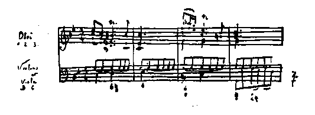

| ジャン・クリストフ 12 第十巻 新しき日 | |
| ロマン ロラン | |
| (2012) | |
ジャン・クリストフ
第十巻 新しき日
ロマン・ローラン
豊島与志雄訳
序
予は将
に消え失
せんとする一世代の悲劇を書いた。予は少しも隠そうとはしなかった、その悪徳と美徳とを、その重苦しい悲哀を、その漠
とした高慢を、その勇壮な努力を、また超人間的事業の重圧の下にあるその憂苦を。その双肩の荷はすなわち、世界の一総和体、一の道徳、一の審美、一の信仰、建て直すべき一の新たな人類である。――そういうものでわれわれはあった。
今日の人々よ、若き人々よ、こんどは汝
らの番である！ われわれの身体を踏み台となして、前方へ進めよ。われわれよりも、さらに偉大でさらに幸福であれよ。
予自身は、予の過去の魂に別れを告げる。空
しき脱穀
のごとくに、その魂を後方に脱ぎ捨てる。人生は死と復活との連続である。クリストフよ、よみがえらんがために死のうではないか。
一九一二年十月
ロマン・ローラン

（汝いみじき芸術よ、いかに長き黎明の間......）
生は過ぎ去る。肉体と霊魂とは河水のごとく流れ去る。年月は老いたる樹木の胴体に刻み込まれる。形体の世界はことごとく消磨
しまた更新する。そして不滅なる音楽よ、ただ汝のみは過ぎ去らない。汝は内心の海である。汝は深き魂である。汝の清澄な眸
には、生の陰鬱
な顔は映らない。汝から遠くに、燃えたてる日、渡れる日、いらだてる日などが、不安に追われ、何物にも定着さるることなく、雲の群れのごとく、逃げ去ってゆく。しかし汝のみは過ぎ去らない。汝は世界の外にある。汝一人で一の世界をなしている。星の輪舞を導く太陽と、引力と数と法則とを、汝は有している。夜の大空の野に煌
めく畝
をつける星辰
――眼に見えぬ野人の手に扱われる銀の鋤
――その平和を汝はもっている。
音楽よ、清朗なる友よ、下界の太陽の荒々しい光に疲れた眼には、月光のごとき汝の光がいかに快いことであろう！ 万人が水を飲まんとて足を踏み込み濁らしてる共同水飲み場から、顔をそむけた魂は、汝の胸に取りすがって、汝の乳房から夢想の乳の流れを吸う。音楽よ、処女なる母親よ、清浄なる胎内にあらゆる情熱を蔵しており、燈心草の色――氷塊を流す淡緑色の水の色――をしている両眼の湖
に、善と悪とを包み込んでいる汝は、悪を超越しまた善を超越している。汝のうちに逃げ込む者は世紀の外に生きる。その日々の連続はただ一つの日にすぎないであろう。すべてを嚙
み砕く死もかえって己
が歯をこわすであろう。
私の痛める魂をなだめてくれた音楽よ、私の魂を平静に堅固に愉快になしてくれた音楽よ――私の愛であり幸 である者よ――私は汝の純潔なる口に接吻 し、蜜 のごとき汝の髪に顔を埋め、汝のやさしい掌 に燃ゆる眼瞼 を押しあてる。二人して口をつぐみ眼を閉じる。しかも私は汝の眼の得も言えぬ光を見、汝が無言の口の微笑 みを吸う。そして汝の胸に身を寄せかけながら、永遠の生の鼓動に耳を傾けるのだ。
一
クリストフはもはや過ぎ去る年月を数えない。一滴ずつ生は去ってゆく。しかし彼の
生は他の所にある。それはもう物語をもたない。物語はただ彼が作る作品のみである。湧
き出づる音楽の絶えざる歌は、魂を満たして、外界の擾音
を感じさせない。
クリストフは打ち勝った。彼の名前は世を圧した。彼の髪は白くなった。老年がやってきた。しかしそれを彼は気にかけない。彼の心は常に若々しい。彼は自分の力と信念とを少しも捨てなかった。彼はふたたび平静を得ている。しかしそれはもはや燃ゆる荊
を通る前と同じではない。彼は自分の奥底に、暴風雨の轟
きをまだもっているし、荒立った海が示してくれたある深淵
の轟きをまだもっている。戦闘を統ぶる神の許しがなければ、だれもみずから自分の主であると自惚
れてはいけないことを、彼は知っている。彼は自分の魂のうちに二つの魂をになっている。一つは高い平原で、風に打たれ雲に覆
われている。も一つはそれの上に高くそびえていて、一面に光を浴びてる雪の峰である。人はそこにとどまることができない。しかし下方の霧に冷え凍えるときには、太陽のほうへのぼってゆく道がわかっている。クリストフはその靄
かけた魂の中で、ただ一人きりではない。友たる音楽、強健な聖チェチリアが天に聴
き入ってる大きな静かな眼をして、自分のそばにいることを、彼は感じている。そして、剣によりかかって口をつぐみ夢想している使徒パウロ――ラファエロの画面の中のパウロ――のように、彼はもはやいらだたず、もはや戦おうとは考えない。彼は自分の夢想を築き上げる。
彼は生涯
のこの時期において、ことにピアノや室内楽のために作曲した。そういう方面ではより自由に大胆な試みができる。思想とその具現との間に仲介物が少ない。思想が途中で弱ってくる隙
はない。フレスコバルディーやクープランやシューベルトやショパンは、その表現と形式との大胆さによって、管弦楽の革命者らより五十年も先立ったのである。クリストフの強健な手がこね上げた音響の捏粉
からは、いまだ世に知られぬ和声
の集団が、人を眩暈
せしむるばかりの和音の連続が、出て来た。それは現今の感受性が聞き取り得る音のうちの、もっとも遠い縁故のものから発生してるのだった。そして人の精神の上に、神聖なる惑わしを投げかけた。――しかしながら、偉大な芸術家が大洋の底に沈んでもたらしてくる獲物
に馴
れるには、公衆にとっては時間を要する。クリストフの近作の大胆さを理解し得る者は、きわめて少数の人々だった。彼の光栄はすべて初期の作品のおかげだった。成功しながら人に理解されないということは、救済の道がないように見えるので、不成功のおりよりもいっそう辛
いものであって、その感情のためにクリストフのうちには、唯一の友の死亡以来きざしていた、世間から孤立するというやや病的な傾向が、ますます強くなってきた。
けれども、ドイツの門戸はふたたび彼へ開かれていた。フランスでも、あの悲壮な暴挙は忘れられていた。彼は自分の欲する所へはどこへ行こうと自由だった。しかし彼はパリーにおいて自分を待ち受けてる思い出を恐れていた。そして、ドイツへは数か月間もどったことがあり、自作の演奏を指揮するためにときどきもどって行くことがあったけれど、そこに定住しはしなかった。あまりに多くの事柄が彼の気をそこなった。それはドイツ特有の事柄ではなかった。他へ行っても見出されるものだった。しかし人は他国よりも自国にたいしてはいっそう気むずかしくなるものであり、自国の弱点をより多く苦にするものである。また実際、ドイツはヨーロッパの罪悪のもっとも多量をになっていた。人は勝利を得るときには、それについて責任を有し、打ち負かした人々にたいして一つの負債をもっている。彼らの先に立って進み、彼らに道を示してやるという、暗黙の契約を結ぶのである。勝利者のルイ十四世は、フランスの理性の光輝をヨーロッパにもたらした。しかるにセダンの勝利者たるドイツは、いかなる光明を世にもたらしたか？ 銃剣の光輝をか？ それは、翼のない一つの思想、寛容のない一つの行動、獰猛
なる一つの現実主義であった。健全なるものだとの口実さえも許されぬ現実主義であった。暴力と利益、行商人のマルス神であった。四十年の間、ヨーロッパは闇夜
の中に引き込まれ恐怖に圧倒された。太陽は勝利者の兜
の下に隠れた。消光器を取り除くだけの力のない被征服者らは、多少軽蔑
の交じった憐憫
をしか受くる資格がないとしても、この兜をつけた人のほうは、いかなる感情をもって遇せられるに相当するだろうか？
少し以前から、日の光がまた現われ始めていた。数条の光が隙間
からさしていた。太陽ののぼるのをまっ先に見んがために、クリストフは兜の影から出た。そして先ごろ余儀なく滞留していた国へ、スイスへ、喜んでもどっていった。相敵対してる国民間の狭い境域に息づまって自由に渇
している、当時の多くの人々と同様に、彼もまたヨーロッパを超越して息をつき得る一角の地を求めていた。昔ゲーテの時代には、自由なる法王の支配するローマは、各民族の思想家らがあたかも鳥のように、暴風雨を避けて休
らいに来る小島であった。しかるに今では、なんという避難所となったことだろう！ その小島は海水に没してしまっていた。ローマはもはや存在しない。鳥は七つの丘
から逃げてしまった。――ただアルプス連山が鳥のために残っている。そこには、貪欲
なヨーロッパのまん中に、二十四連邦の小島が残存している。（それもいつまでのことであろうか？）もちろんそこには、旧都
の詩的幻影は輝いていない。人の呼吸する空気に神々や英雄らの香を交じえる歴史は存在していない。しかし力強い音楽が赤裸な大地
から立ちのぼっている。山々の線は勇壮な律動
をもっている。そして他のどこにおけるよりもここでは、根原的な力との接触が感ぜられる。クリストフがこの地に来たのは、ロマンチックな楽しみを求めんがためにではなかった。一つの畑地、数本の樹木、一筋の細流、広い青空、それだけで彼は生きるに十分だった。故郷の土地の穏やかな顔つきのほうがアルプス山の巨人と神との争闘
よりも、彼にはいっそう親しみ深かった。しかし彼は、この地で力を回復したのだということを忘れ得なかった。この地において神は燃ゆる荊
の中で彼に現われたのだった。彼はここへもどり来たって、感謝と信念とのおののきを感ぜざるを得なかった。彼は孤独ではなかった。生に痛められたいかに多くの生の闘士らが、ふたたび戦闘を始め戦闘の信念を持続するために必要な気力を、この土地でふたたび見出したことであろう！
この国で暮らしているうちに、彼はこの国をよく知ることができた。通り過ぎる人々の多くの眼には、ただ欠点しか映じてはいない。この強健な土地のもっとも美
わしい特質を汚す旅館の癩病
、世界の肥満した人々が健康を購
いに来る奇怪な市場たる外国人の町々、皿
数のきまった食事、動物の塚穴
の中に投げ捨てられた獣肉の濫費、子馬の声に音を合わせる娯楽場の音楽、退屈してる金持の馬鹿
者どもを嫌
な頓狂
声で喜ばせる賤
しいイタリー道化
役者、または、商店の陳列品の低劣さ、すなわち木彫の熊
や箱庭の家やつまらぬ置物など、なんらの創意もないいつもきまりきった品物、破廉恥な書物を並べてる正直な本屋など――すべて、無数の閑人
どもが、賤民
の娯楽より高尚でもなければまた単に活発でもない娯楽さえ、少しも見出すことができないで、毎年なんらの喜びもなくぼんやり飲み込まれるそれらの環境の、低級な精神のものばかりである。
そして彼らは、主人公たるこの民衆の生活については、少しも知るところがない。彼らは夢にも知らない、数世紀来この民衆のうちに蓄積されてる精神力と公民の自由との量を、なお灰の下で燃えてるカルヴァンやツウィングリの大火の炭火を、ナポレオン式共和国がいつまでも知り得ない強固な民主的精神を、制度の簡単さと社会事業の広範さとを、未来のヨーロッパの縮図たる西欧三大種族からなるこの連邦によって、世界に与えられてる実例を。そして彼らのさらに知らないでいるところのものは、この堅い樹皮の下に隠れてるダフネ、ベックリンの閃々
たる粗野な夢、ホドラーの荒くれた勇武、ゴットフリート・ケルレルの清朗な温厚さと生々
しい率直さ、偉大なる楽詩人シュピッテラーの巨人族的叙事詩やオリンポス的光輝、俗間の大祭典の潑溂
たる伝統、剛健な古木に働きかける春の精気など――すべて、時としては野生の堅い梨
のように人の舌を刺すものであり、時としては青黒い苔桃
のような甘っぽい空疎な味であるが、しかし少なくとも大地の匂
いをもっている、まだ若々しい芸術である。それは、古風な教養を経てもなお民衆から離れずに、民衆とともに同じ生活の書物を読んでいる、独学者らの手になった作品である。
クリストフはそれらの人々に同感をもった。彼らは実際を重んじて外見を飾らなかったし、ゲルマン的アメリカ的産業主義の新しい外皮の下は、田園的で中流的な旧ヨーロッパのもっとも安穏な特質をまだかなりそなえていた。クリストフは彼らのうちに二、三の親しい友をこしらえた。みな善良で真面目
で忠実であって、過去を愛惜しながら孤独な生活をしてる人だった。一種の宗教的宿命観とカルヴァン式悲観とをもって、古きスイスが徐々に消滅するのをながめてる、陰鬱
な偉大な魂の人々だった。クリストフは彼らとめったに会わなかった。彼の古傷は外面は癒着
していたけれど、きわめて深い傷でまだすっかり癒
えていなかった。そして彼は人と交渉を結ぶのを恐れていた。愛情や苦悩の鎖にふたたびつながれるのを恐れていた。多数の外国人中のまた外国人として一人離れて暮らしやすいこの国で、彼が安らかな気持を覚えたのも、多少は右の理由からであった。そのうえ、彼は同じ場所に長くとどまることはまれだった。しばしば居所を変えた。この年老いた放浪の鳥には、広い空間が必要であって、その祖国は空中にあった......「予が国は空中にあり
......。」
夏の夕方。
彼はある村の上方の山中を散歩していた。帽子を手にもって、羊腸たる山路を上っていった。ある曲がり角まで行くと、道は二つの斜面の間の影の中をうねっていた。榛
の茂みや樅
の木立が道の両側に並んでいた。四方ふさがれた小さな世界に似ていた。前後の曲がり角で、道は宙に浮いてそこで終わってるかのようだった。その彼方
には、青白い遠景と光を含んだ空気とがあった。夕べの静穏が苔の下に音をたてる涓滴
のように、一滴ずつおりてきた。
道の向こうの曲がり角から、彼女が出て来た。黒い服装をして、空の明るみの上に浮き出していた。その後ろには、六歳から八歳ぐらいの男と女との小さな子供が、戯れたり花を摘んだりしていた。数歩進むと二人はたがいに相手を見てとった。感動はたがいの眼の中に現われた。しかしなんらの強い言葉も発せず、驚きの身振りさえほとんどしなかった。彼は非常に心乱されていた。彼女は......唇
が少し震えていた。二人は立ち止まった。ようやく低い声で言った。
「グラチア！」
「あなたもここに！」
二人は手を執り合って、無言のままじっとしていた。最初にグラチアが強
いて沈黙を破った。そして自分の居所を述べ、彼の居所を尋ねた。ただ機械的な問いと答えとで、二人はそれにほとんど耳を貸しもせず、手を離したあとに初めて聞きとった。たがいにじっと見入ってばかりいたのである。二人の子供がそこへやって来た。彼女はそれを彼に紹介した。彼は子供たちにたいして反感を覚えた。やさしみのない様子で子供たちをながめ、なんとも言葉をかけてやらなかった。彼は彼女のことでいっぱいになっていて、悩ましげな年取ったその美しい顔を見調べてばかりいた。彼女は彼の視線に当惑した。彼女は言った。
「今晩おいでになりませんか。」
彼女は旅館の名を告げた。
彼は彼女の夫の居所を尋ねた。彼女は自分の喪服を示した。彼はひどく心を動かされて、話をつづけることができなかった。そして無作法に彼女と別れた。しかし二、三歩行ってから、苺
を摘んでいる子供たちのほうへもどって、いきなり引っとらえて接吻
し、そして逃げ出した。
その晩彼は旅館へ行った。彼女はガラス張りの外縁
にいた。二人は目だたぬ片隅
にすわった。他に人は少なく、二、三の老人がいるばかりだった。それにたいしてまでクリストフは内々いらだった。グラチアは彼をながめた。彼は彼女をながめながら、その名前を小声で繰り返した。
「私はたいへん変わりましたでしょう。」と彼女は言った。
彼の心は感動でいっぱいになってしまった。
「あなたは苦しまれましたね。」と彼は言った。
「あなたもそうでしょう。」と彼女は、苦悶
と情熱とに害された彼の顔をながめながら、憐
れみの様子で言った。
二人はもうそれ以上言葉が見つからなかった。
「ねえ、他の所へ参りましょう。」と彼はちょっとたってから言った。「二人きりの場所でお話しすることはできないんでしょうか。」
「いえ、ここにいましょうよ。これでけっこうですわ。だれが私たちに注意するものですか。」
「私は自由に話せません。」
「そのほうがよろしいのです。」
彼にはその理由がわからなかった。あとになって彼は、その会談を頭の中でくり返してみたとき、彼女が自分を信頼していなかったのだと考えた。しかし実は、情緒的な場面を彼女は本能的に恐れていた。たがいの愛情が不意に起こってくるのを避けようとしていた。かつはまた、自分の内心の動揺の貞節さを失わないために、旅館の客間の中で不自由な親しみを結ぶのを好んでいた。
二人はしばしば口をつぐみながらも低い声で、自分の生活のおもな出来事を語り合った。ベレニー伯爵
は数か月前ある決闘で殺されたのだった。クリストフは彼女が伯爵といっしょにいてあまり幸福でなかったことを悟った。彼女はまたその長子にも死なれたのだった。彼女は少しも苦しみを訴えなかった。話を自分のことからそらして、クリストフの身の上を尋ねた。そして彼の苦難の物語に、やさしい同情を示してくれた。
諸方の鐘が鳴った。日曜の晩だった。生活は休止していた......。
彼女は彼に翌々日また来てくれと言った。つぎの再会を彼女があまり急いでいないのが彼には辛
かった。彼の心のうちには幸福と悩みとが交じり合った。
翌日彼女はある口実のもとに、彼へ来てくれと手紙を書いた。その平凡な文句にも彼は非常に喜んだ。彼女はこんどは自分だけの客間に彼を招じた。彼女は二人の子供といっしょだった。彼はその子供たちを、なお多少の困惑と多くの情愛とをもってながめた。そして姉娘のほうは母親に似てると思った。弟のほうはだれに似てるかを問わなかった。二人はこの土地のことや天気のことやテーブルの上に開かれている書物のことなどを話した――が二人の眼は他の言葉を語っていた。彼は彼女にもっと親しく話せるつもりでいた。そこへ、彼女と旅館で知り合いの女がはいって来た。グラチアがその他人を迎える愛想のよい丁重さを彼は見た。彼女は二人の客の間に差別を設けていないらしかった。彼はそれが悲しくなった。しかし彼女を恨みはしなかった。彼女は皆でいっしょに散歩しようと言い出した。彼は承諾した。グラチアの友の女は年若くて快い人柄ではあったが、それといっしょなのが彼には嫌
だった。そしてその日もだめになってしまった。
彼がそのつぎにグラチアと会ったのは二日たってからだった。その二日の間、彼はただ彼女とともに過ごす時間のためにばかり生きていた。――けれどこのたびもまた、彼女と隔てなく話すことができなかった。彼女は彼にたいして温良ではあったが、例の控え目な態度を捨てなかった。クリストフは知らず知らずゲルマン風の感傷性を多少吐露したので、彼女はそれに当惑して、本能的に逆な態度をとった。
彼は彼女に手紙を書いた。それは彼女の心を動かした。人生はいかにも短い、と彼は書いた。二人の齢
はもうかくまでに進んでいる。おそらくは相見るのもしばらくの間であろう。その間に心置きなく話し合えないのは、悲しむべきことであり、ほとんど罪深いことである。
彼女はやさしい文句で彼に返事を書いた。人生に傷つけられて以来、我にもなく一種の疑惑をいだくようになった、ということを彼女は詫
びた。自分はその控え目な習慣を脱することができない。たとい真実の感情でさえも、それをあまりに強く表示されるときには、不快になり恐ろしくなる。しかしふたたび見出した友情の価値をよく感じている。そして彼と同じくそれを喜んでいる。それから彼女は晩に食事をしに来てくれと彼に願った。
彼の心は感謝の念でいっぱいになった。旅館の室の中で、寝台に横たわり、顔を枕
に埋めて、彼はすすり泣いた。十年間の孤独から放たれたのだった。彼はオリヴィエが死んでからは一人きりだった。ところが今この手紙は、愛情に飢えてる彼の心にたいして、復活の言葉をもたらしてきた。愛情！......彼はそれを捨てた気でいた。愛情なしで暮らすことを学ばなければならなかった。そして今日になって、いかばかり愛情が自分の生活に欠けていたかを感じ、自分のうちに積もってる愛情の量がいかに多いかを感じた。
楽しい聖
い一晩だった......。二人は何事も隠し合わないつもりではあったが、彼はただ無関係な事柄だけしか彼女に話せなかった。しかし彼女から眼つきで促されて、いかばかり多くのよい事どもを彼はピアノで語ったことだろう！ 彼女は彼の心の謙譲さを見て、かねて彼を高慢な激烈な人だと知ってただけに驚かされた。彼が帰ってゆくとき、二人は無言のうちに手を執り合って、たがいにふたたび見出したことを告げ、もうふたたびたがいに見失うことのないのを告げた。――そよとの風もなく、雨が降っていた。彼の心は歌っていた......。
彼女はこの土地にもう数日しか滞在できなかった。そして出発を少しも延ばさなかった。彼は延ばしてくれと頼みかねたし、また悲しみを訴えかねた。最後の日に、二人は子供たちだけといっしょに散歩をした。一時彼は愛と幸福とにいっぱいになって、それを彼女へ言い出しかけた。しかし彼女は微笑
みながら、ごくやさしい身振りでそれを押し止めた。
「いえ！ あなたがどんなことをおっしゃろうと、それはみな私の感じてることですから。」
二人は初めふいに出会ったあの道の曲がり角にすわった。彼女はやはり微笑みながら下の谷間をながめた。けれど彼女が眼に見てるのはその谷間ではなかった。彼は苦悩の跡が残ってる柔和な彼女の顔を見守った。濃い黒髪の中には方々に白髪が見えていた。魂の悩みが印せられてるその肉体にたいして、彼は憐憫
と情熱との交じった崇敬の念を覚えた。時の傷跡のうちに至るところ魂が露
わに見えていた。――そして彼は低い震える声で、貴重な恩顧をでも求めるように、その白髪の一筋を求めて、もらい受けた。
彼女は出発した。なぜ自分をいっしょに伴おうとしないかを、彼は了解できなかった。彼は彼女の友情を少しも疑いはしなかった。しかし彼女の控え目なのに当惑した。彼はその土地に二日ととどまってることはできなかった。彼女と別な方向へ出発した。旅行や仕事で精神を満たそうとつとめた。グラチアへ手紙を書いた。グラチアは二、三週間後に短い手紙で彼に答えた。それには焦慮も不安もない落ち着いた友情が現われていた。彼はそれを苦しみまたそれを喜んだ。それについて彼女をとがめることはみずから許せなかった。二人の愛情はあまりに近ごろのことだったし、最近結び直されたばかりのものだった。彼はそれを失いはすまいかと気づかっていた。それでも、彼女から来るつぎつぎの手紙は彼に安心を与えるような誠実な落ち着きを示していた。しかし彼女は彼とはずいぶん異なってるのだった......。
二人は秋の末ごろローマで再会することにしていた。彼女に会うという考えがなかったならば、その旅はクリストフにとってあまり面白くなかったはずである。彼は長い間の孤独のためにすっかり出ぎらいになっていた。現今の人々が不安な閑散のあまりに好む無用な移転にたいして、彼はもう少しも興味を覚えなかった。精神の規則的な働きにとって有害な習慣の変化を恐れていた。そのうえ彼はイタリーに心ひかれなかった。彼がイタリーを知ってるのは「自然主義作曲家」らの卑しい音楽やウェルギリウスの故国が旅行中の文学者らにときおり感興を与えるテナーの小曲、などを通じてばかりだった。翰林院
式の旧慣を墨守してる愚劣な作家らがローマという名をもち出すのを、あまりにしばしば聞かされてる前衛の芸術家、それにふさわしい疑惑的敵意を彼はイタリーにたいして感じていた。そのうえ、南方の人々にたいして、あるいは少なくとも、北方人の眼に南方人の代表として映ずる、いつも饒舌
な大風呂敷
を広げる古来名高い典型にたいして、北方のあらゆる人々の心のうちに潜んでる、本能的な反感の古い根があるのだった。クリストフは考えただけでも、軽蔑
的に唇
をとがらした......。音楽のない民衆とこの上知り合いになりたい気はさらになかった――（音楽のない民衆だと、彼はいつもの極端さで言っていた。「なぜなら、マンドリンをかき鳴らしたり大袈裟
な插楽劇
を怒鳴ったりすることが、現代ヨーロッパの音楽のうちで、何ほどのものになるものか！」）とは言え、その国民にグラチアは属してるのだった。彼女とめぐりあうためになら、どこまでもまたどんな道を通ってでもクリストフはやって行ったであろう。彼女と落ち合うまでの間眼をつぶっておれば済むことである。
眼をつぶることには彼は馴
れていた。多年の間彼の内生活には雨戸が閉ざされていた。この秋の終わりにはそれがなおいっそう必要だった。三週間引きつづいて絶え間なしに雨が降った。つぎには見通すことのできない一面の灰色の雲がスイスの濡
れて震えてる谷間の上にのしかかった。太陽の麗わしい光は眼から消えてしまっていた。太陽のような中心精力を自分のうちに見出すためには、まず完全な暗黒を作って、眼瞼
を閉じて、坑道の奥へ、夢想の地下坑の中へ、降りて行かなければならなかった。そこの石炭の中に、滅びた日々の太陽が眠っていた。けれども身をかがめて採掘しながら生を送って、そこからようやく出て来ると、身体は干乾
び、背骨と膝
とは硬
ばり、手足はゆがみ、夜の鳥のような眼になって視力が曇ってるのだった。幾度となくクリストフは、凍えた心を温
むる火を、坑道の奥からようやくにして取り出してきた。しかし北方人の夢想には、暖炉の熱の匂
いがある。その中で生きてるときには人はそれに気づかない。人はその重々しい温
みを好み、その薄明かりを好み、重苦しい頭の中に積もってる夢を好む。人は自分のもってるものを愛するものだ。自分のもってるものに満足しなければならない！......
クリストフはアルプスの連山から出て、客車の片隅
にうとうとしながら、清らかな空と山腹に流れている光とを見たとき、あたかも夢をみてるような気がした。どんよりした空と薄暗い日の光とは山脈の彼方
に残されていた。その変化があまりに急激だったので、初め彼は喜びよりもさらに多くの驚きを感じた。しばらくたってからようやく、麻痺
していた彼の魂はしだいに弛
んでき、彼を閉じ込めていた外皮は裂けてき、心は過去の影から脱してきた。その日が進むに従って、柔らかな光が彼を抱き包んだ。そして彼は今まで存在していたすべてのものの記憶を失って、うちながめることの喜びをむさぼるように味わった。
ミラノの平野。産毛
の生
えたような水田を網目形に区切ってる青っぽい運河、その運河の中に映ってる日の光。褐色
の細葉を房々
とつけ、捩
れた面白い体軀
の瘦
せたしなやかさを示してる、秋の樹木。橙
色や金縁や淡碧
に縁取られた重畳してる線で、地平を取り囲みながら、柔らかな輝きを見せている雪のアルプス連山、ダ・ヴィンチ式の山々。アペニン山脈に落ちてくる夕闇
。ファランドルのように何度も繰り返し引きつづく律動
をもって、蜿蜒
とつづいてる険しい小山を、曲がりくねって降りてゆく列車。――そして突然、坂道の麓
に、あたかも接吻
のように人を迎える、海の息吹
きと橙樹
の香。海、ラテンの海とその乳光色の光、そこには翼をたたんだ幾群もの小舟が、ゆったりと浮かんで眠っている......。
海岸の一漁村で汽車は止まったまま動かなかった。大雨のためにジェノヴァとピサとの間の隧道
が崩壊した、ということが旅客らに伝えられた。どの列車もみな数時間遅延していた。クリストフはローマ直行の切符をもっていたが、他の乗客らの物議をかもしたその不運を、かえって非常に喜んだ。彼は歩廊
に飛び降り、停車の時間を利用して、海の景色にひかされて出かけて行った。彼はすっかり海にひきつけられたので、一、二時間後に列車が汽笛を鳴らしてふたたび進行しだしたときには、小舟に乗っていて、列車が通り行くのを見ながら「御機嫌
よう！」と叫んでやった。輝かしい夜に、輝かしい海の上で、若い糸杉に縁取られた岬
に沿って、舟を漂わした。そして彼はその村に腰をすえて、たえず愉快に五日間を過ごした。長い断食を済ましてむさぼり食う人のようであった。飢えたすべての官能で輝いた光をむさぼり食った......。光よ、世界の血液よ、人の眼や鼻や唇
や皮膚のあらゆる毛穴から肉体の底まで滲
み込む、生の流れよ、パンよりもなおいっそう生命には必要な光よ――北方の覆面をぬいでる純潔な燃えたった真裸の汝
を見る者は、どうして今まで汝を所有せずして生きることができたかをみずから怪しみ、もはや汝を欲望せずには生き得ないことを知るであろう。
五日間クリストフは太陽に酔いしれた。五日間彼は自分が音楽家であることを忘れた――それは初めてのことだった。彼一身の音楽は光に変わっていた。空気と海と土地、太陽の交響曲
。そしてこの管絃楽団を、イタリーはなんという先天的技能をもって使役し得てることぞ！ 他の国民はみな自然に従って彩
っている。イタリーは自然と協力している。太陽とともに彩っている。色彩の音楽。すべてが音楽であり、すべてが歌っている。金色の亀裂
のある真赤
な往来の壁面、上方には縮れっ毛の二本の糸杉、周囲には紺碧
の空。青色の建物の正面の方へ赤壁の間を上っていってる、急な白い大理石の石段。杏子
色やシトロン色や仏手柑
色などさまざまの色で、橄欖樹
の間に輝いてるそれらの家は、木の葉の中のみごとな果実のように見える......。イタリーの幻覚は肉感的である。汁
の多い芳しい果実を舌が喜ぶように、人の眼は色彩を喜ぶ。その新しい御馳走
の上へ、クリストフは貪婪
な食欲で飛びついていった。これまで灰色の幻像にばかり限られていた禁欲生活の補いをつけた。運命のために息をふさがれていた彼の豊饒
な性質は、これまで用いなかった享楽の力を突然意識しだした。その力は差し出された餌食
を奪い取った。芳香、色彩、人声や鐘や海の音楽、空気と光との快い愛撫
......。クリストフはもう何事をも考えなかった。法悦のうちに浸った。彼がそれから我に返るのは、出会う人々に自分の喜びを伝えんがためばかりだった。相手は雑多だった。皺
寄った鋭い眼をし、ヴェネチアの元老のような赤い縁無し帽をかぶってる、自分の船頭である老漁夫――激しい憎悪でくろずんでる獰猛
なオセロ風の眼をぎょろつかせながらマカロニーを食べる、無感無情な人物である、唯一の会長者たるミラノ人――料理の盆を運ぶのに、ベルニニの描いた天使のように、首を傾
げ腕や胴をねじらす、料理店の給仕――通行人に青枝付きの香橙
を差し出して路上で物乞
いをし、追従
的な流し目を使う、聖ヨハネみたいな少年。また、駅馬車の奥に頭を下にして寝そべりながら、鼻唄
のいろんな端くれを不意に歌い出す馬車屋をも、彼はよく呼びかけた。カヴァレリア
・ルスチカナ
を小声で歌ってる自分自身にふと気づいて驚いた。旅の目的はまったく忘れてしまっていた。早く目的地へ着いてグラチアに会いたいことも、すっかり忘れていた......。
そしてついにある日、なつかしい彼女の面影が浮かんできた。それを描き出したのは、往来で出会った一つの眼差
だったか、荘重な歌うような一つの声の抑揚だったか、それを彼は覚えなかった。しかしそのときは、橄欖樹
に覆
われた四方の丘、濃い影と強い日光とにくっきり浮き出されてるアペニン連山の高い光った頂、香橙
の林、海の深い呼気など、周囲のすべてのものから、女の友のにこやかな顔が輝き出した。空気の無数の眼によって、彼女の眼は彼をながめていた。あたかも薔薇
の木から一輪の花が咲き出すように、彼女はその土地から咲き出していた。
そこで彼は、ふたたびローマ行きの汽車に乗ってどこにも降りなかった。イタリーの追憶にも過去の芸術の都にもさらに興味がなかった。ローマでも、何にも見なかったし、何にも見ようとはしなかった。そして通りがかりに最初見てとったもの、無様式な新しい街衢
や四角な大建築などは、もっとローマを知りたいとの念を起こさせはしなかった。
到着するとすぐに彼はグラチアのところへ行った。彼女は彼に尋ねた。
「どこを通っていらしたんですか。ミラノやフィレンツェにお寄りになりましたか。」
「いいえ。」と彼は言った。「寄ってどうするんです？」
彼女は笑った。
「面白い御返辞ですこと！ ではローマをどうお思いになりますか。」
「なんとも思いません。」と彼は言った。「まだ何にも見ていませんから。」
「それでも......。」
「何にも見なかったんです、記念の建物一つも。旅館からまっすぐにあなたのところへ来ましたから。」
「ちょっと歩けばローマは見られますよ......。あの正面の壁を御覧なさい......そこに当たってる光を見さえすればいいんですよ。」
「私はあなただけを見てるんです。」と彼は言った。
「ほんとにあなたはわからない人ですね、ご自分の考えしか見ていらっしゃらないんですね。そして何時
スイスをお発
ちになりましたの。」
「一週間前です。」
「では今まで何をしていらしたんですか。」
「知りません。偶然海岸のある地に止まったんです。どういう所だか注意もしませんでした。一週間眠っていました。眼を開いたまま眠っていたんです。何を見たか自分でも知りません、何を夢みたか自分でも知りません。ただあなたのことを夢みたようです。たいへん愉快だったことを知っています。けれどいちばんいいことには、何もかも忘れました......。」
「ありがとう。」と彼女は言った。
（彼はそれを耳に入れなかった。）
「......何もかも、」と彼は言いつづけた、「そのときあったことも、前にあったことも、すっかり忘れてしまいました。私はふたたび生き始めた新しい人間のようになっています。」
「ほんとうにそうですわ。」と彼女はにこやかな眼で彼をながめながら言った。「この前お目にかかったときからすっかりお変わりなさいましたね。」
彼もまた彼女をながめた。そして記憶の中の彼女とやはり異なってるように思った。けれども彼女は二か月前と変わってるのではなかった。ただ彼がまったく新しい眼で彼女を見てるのだった。彼方
スイスでは、昔のころの面影が、年若いグラチアの軽い影が、彼の眼と眼前の彼女との間に介在していた。ところが今では、北方の夢はイタリーの日の光に融
かされていた。彼は白日の光の中に、恋人の実際の魂と身体とを見た。パリーにとらわれてた野の仔山羊
とは、また、彼女の結婚後間もなくある晩出会ってやがて別れたおりの、聖ヨハネみたいな微笑
みをしてる若い女とは、彼女はいかに違ってたことだろう！ ウンブリアの小さな娘から、美しいローマ婦人の花が咲きだしていた。
真の色艶
、堅固なる瑞々しき身体
。
その姿体は調和のとれた豊満さをそなえていた。その身体は高慢な懶
さに浸っていた。静安の天性が彼女を包んでいた。北方人の魂がけっしてよく知り得ないような、日の照り渡った静寂と揺
ぎない観照とをむさぼる性質をそなえており、平和な生活を官能的に享楽する性質をそなえていた。彼女が昔どおりになお持ってたものは、ことにその大なる温良さであって、それが他のあらゆる感情の中にまで織り込まれていた。しかし彼女の晴れやかな微笑
みのうちには、新たないろんなものが読みとられた。ある憂鬱
な寛大さ、多少の倦怠
、一抹の皮肉、穏和な良識など。彼女は年齢のためにある冷静さを得ていて、心情の幻にとらわれることがなく、夢中になることがあまりなかった。そして彼女の愛情は、クリストフが押えかねてる情熱の激発にたいして、洞察
的な微笑を浮かべながらみずから警
めていた。それでもなお彼女は、弱々しい点もあり、日々の風向きに身を任せることもあり、一種の嬌態
を見せることもあった。彼女はその嬌態をみずからあざけってはいたが、強
いて捨て去ろうとはしなかった。事物にたいしてもまた自己にたいしても少しも逆らわなかった。きわめて温良でやや疲れた性質の中に、ごく穏やかな宿命観をもっていた。
彼女は多くの訪問客を迎えていたし、客を選択することを――少なくとも表面上――あまりしなかった。しかし彼女の親しい人々は、たいてい同じ階級に属していて、同じ空気を呼吸し、同じ習慣にしつけられていたので、その社会はかなり同分子的な調和を形造っていて、クリストフがフランスで聞かされたものとはきわめて違っていた。その大部分は、外国人との結婚によって活気づけられてる、諸方の古いイタリー系統の者だった。彼らのうちには、表面的な超国境主義が支配していて、四つのおもな国語と西欧四大国民の智囊
とが安らかに混和していた。各民族がそれぞれ自分の割当を、ユダヤ人はその不安を、アングロ・サクソン人はその沈着を、そこにもち寄っていた。しかしすべては間もなくイタリーの坩堝
の中に溶かされていた。略奪者たる大貴族の跋扈
した幾世紀かが、一民族の中に、たとえば猛禽
の倨傲
貪欲
な面影を刻み込むときには、その地金は変化することがあっても、印刻はそのまま残るものである。もっともイタリー的らしく見えるそれらの相貌
のあるもの、ルイーニ式の微笑、ティツィアーノ式の肉感的な平静な眼差
、アドリア海やロンバルディア平原の花は、ラテンの古い土地に移し植えられた北方の灌木
の上に咲いているのだった。ローマの絵具板の上で溶かされた色はどんなものであろうと、それから出て来る色は常にローマの色である。
クリストフは自分の印象を分析することができずに、多くは凡庸でありあるものは凡庸以下であるそれらの魂から発する、多年の教養と古い文明との香を、わけもなく感心してしまった。そのとらえがたい香はごく些々
たるものにつながれていた。懇切な優雅さ、意地悪と品位とを保ちながら愛想を見せることのできる、挙措
のやさしさ、または、眼差や微笑や、機敏で呑気
で懐疑的で雑多で軽快である才知などの、高雅な繊細さ。困苦しいものや横柄なものは何もなかった。書物的なものは何もなかった。ここでは、鼻眼鏡越しに人を窺
うパリー客間の心理家や、ドイツの軍人万能主義の大先生などに、出会う恐れは少しもなかった。彼らは単に人間であり、きわめて人間的な人間であって、昔のテレンティウスやスキピオ・エミリアヌスなどの友人らと同じだった......。
予は人なり
......。
美
わしい前面。生活は実質的よりもいっそう外見的であった。その下には、あらゆる国の上流社会に共通である、癒
すべからざる軽佻
さが潜んでいた。しかしこの社会に民族的特質を与えてるものは、その無精さであった。フランス人の軽佻さには、神経質な焦燥が伴っていて、たとい空回りをしようとも、たえず頭脳が働きつづけている。しかるにイタリー人の頭脳は、休息することを知っている、あまりに知り過ぎている。柔惰な享楽主義の生温
い枕
をし、皮肉できわめて軽捷
でかなり好奇的で根本は驚くばかり冷淡な才知の生温い枕をして、暖かい木陰にうとうとと居眠るのはいかにも快いことである。
それらの人々はみな一定のはっきりした意見をもっていなかった。同じ道楽気分で政治や芸術に関係していた。彼らのうちには、繊細な顔だちをし、怜悧
なやさしい眼つきをし、静かな挙措を有してる、ローマ貴族の美しい型が、魅力ある性質の人々が、見られるのであった。そしてその人々は温厚な心で、自然や古い画家や花や婦人や書物や美食や祖国や音楽......などを好んでいた。あらゆるものを好んでいて、何一つ選び取らなかった。時とすると何にも好んでいないのかと思われるほどだった。それでも愛情は彼らの生活のうちに大きな場所を占めていた。ただ条件として、愛情が生活を乱さないということだった。その愛情も彼らと同様に無頓着
で怠惰だった。恋愛でさえも家庭的な性質を帯びがちだった。よくできて調和のとれてる彼らの知力は、いかなる矛盾した思想が出会っても、たがいに衝突することなく、穏やかに結合して、にこやかに鈍くなり、順従になってゆく、一種の懶惰
な性質に満足していた。彼らは徹底的な信仰を恐れ、極端な党派心を恐れていて、半端な解決と半端な思想とに安んじていた。彼らは自由的保守の精神の人々だった。息切れや動悸
の恐れがない気候温和な転地場所のような、ほどよい高さの政治や芸術が彼らには必要だった。ゴルドーニの怠惰な芝居やマンゾーニの一様にぼやけた光などが、彼らの気にかなっていた。彼らの愛すべき懶惰な心は、そういうものから不安を覚えさせられることがなかった。彼らはその偉大な祖先らのように、「まず生きることである
......」とは言わないで、「肝要なのは穏やかに生きることである
」と言うに違いなかった。
穏やかに生きること。それがすべての人々のひそかな願いであり志望であって、もっとも元気潑溂
たる人々や実際の政治を支配してる人々でさえそうだった。たとえばマキアヴェリの徒弟たる者、自己と他人との主であり、頭と同じく冷静なる心をもち、明晰
で退屈してる知能をもっていて、自分の目的のためにはあらゆる手段を用いることを知りかつでき、自分の野心のためにはあらゆる友情をも犠牲にする覚悟でいる者、そういう人も、穏やかに生きる
という神聖なる一事のためには、その野心をさえ犠牲になし得るのであった。彼らには無為怠慢の長い期間が必要だった。そしてそれから出て来ると、あたかも熟睡のあとのように爽快
に元気になっていた。それらの鈍重な男子たち、それらの平静な婦人たちは、談話や快活や社交生活を突然渇望しだすのだった。身振りや言葉や逆説的な頓智
や滑稽
な気分などを振りまいて、自分を消費しなければならなかった。そして道化歌劇
を演じていた。このイタリーの人物展覧場の中では、北方において見かけるような、金属性の光を帯びた眸
や、精神の絶えざる労働によって凋
んだ顔つきなど、思想の磨滅
はめったに見出されなかった。けれども、どこにもあるようにここにもやはり、ひそかに悩んでる自分の傷を隠しているような魂、無関心の下に潜んで麻痺
の衣を快くまとってる欲望や懸念などが、欠けてはしなかった。それからまた、ごく古い人種に固有な人知れぬ不平衡の徴候たる、人を面くらわせるような奇怪不思議な粗漏が――ローマ平野に開けてる断層のようなものが、ある人々のうちにあるのは言うまでもないことだった。
一つの悲劇が中に隠れて眠っているそれらの魂の、それらの平静な冷笑的な眼の、呑気
さの謎
のうちには、多くの魅力がこもっていた。しかしクリストフはそれを認め得る気質ではなかった。社交界の人々にグラチアが取り巻かれてるのを見て、彼は腹をたてた。彼らが嫌
になり、彼女が嫌になった。ローマにたいして顔を渋めるとともに、彼女にたいして顔を渋めた。そしてしだいに訪問の数を少なくした。立ち去ってしまおうかと思った。
彼は立ち去らなかった。自分をいらだたしていたイタリー社交界の魅力を、心ならずも感じ始めていた。
当分の間彼は孤独の生活を送った。ローマやその近傍を歩き回った。ローマの光、宙に浮いている庭園、日の照り渡った海で黄金の帯のように取り巻かれてるローマ平野などは、この楽土の秘密をしだいに彼へ示してくれた。彼は死滅した大建築物にたいして軽蔑
を装っていて、それを見に行くために一歩も踏み出すものかとみずから誓っていた。向こうからやって来るのを待つのだと口をとがらしながら言っていた。ところが向こうからやって来た。地面の起伏しているこの都会の中を散歩してると、偶然それらに出会った。別に捜し回りもしないで、夕陽
を受けてる赤いフォールムを見、深い蒼空
が青い光の淵
となって向こうに開けてる、パラチーノ丘の半ばくずれてる迫持
を見た。また、泥
で赤く濁ってあたかも土地が歩き出してるようなテヴェレ河のほとり――大洪水
以前の怪物の巨大な背骨みたいな溝渠
の廃址
に沿って、広漠
たるローマ平野の中をさまようた。厚くかたまってる黒雲が青空の中を流れていた。馬に乗った百姓たちが鞭
を振り上げながら、長い角を生やした銀鼠
色の大きな牛の群れを、荒れ地を横ぎって追いたてていた。まっすぐな埃
っぽい露
わな古い大道の上を、股
に毛皮をつけた山羊足
の牧人たちが、低い驢馬
や子驢馬の列を引き連れて黙々と歩いていた。地平線の奥には、神々
しい線をしてるサビーノの山脈の丘陵が展開しており、大空の丸天井の他方の縁には、都会の古い囲壁が、踊ってる像をのせた聖ヨハネ寺院の正面が、その黒い影を投じていた......。静寂......照り渡ってる太陽......。風が平野の上を吹いていた......。腕は結
かれ頭は欠けて雑草の波に打たれてるある像の上に、一匹の蜥蜴
が安らかな胸であえぎながら、じっと日光に浴して我を忘れていた。そしてクリストフは、日の光に頭の中が茫
として（時にはまたカステリーの葡萄
酒のせいもあったが、）こわれた大理石像のそばに黒い地面の上にすわり、微笑
みを浮かべうつらうつらと忘却のうちに浸って、ローマの落ち着いた強烈な力を吸い込んだ――夕闇
が落ちてくるまで。――すると突然悲しみに心がしめつけられて、悲壮な光が消えてゆくその痛ましい寂寞
の地を、彼は逃げ出すのであった。......おう土地よ燃えたってる土地よ、情熱と無言の土地よ、汝の熱
っぽい平和の下に、ローマ軍団のらっぱの鳴り響くのが、予には聞こえる。なんという猛然たる生気が、汝の胸のうちにうなってることぞ！ なんという覚醒
の願望ぞ！
クリストフが見出したある人々の魂のうちには、古い火の残りが燃えていた。死者の埃
の下にその燠
はまだ残っていた。マチィーニの眼とともに消えてしまったと思われるその火はふたたび燃えだしていた。昔と同じ火であった。それを見ようとする者はきわめて少なかった。それは眠ってる人々の静穏を乱すのだった。輝いた荒々しい光だった。その火をもってる人々――それはみな若い人々で（もっとも年上の者も三十五歳未満で、）気質や教育や意見や信念などをたがいに異にしてる、自由な知識人であった――それらの人々は、この新生の炎にたいする同じ崇拝のうちに結合していた。党派の看板や思想の体系などは、彼らにとっては問題とならなかった。肝要なのは「勇敢に思索する」ということだった。率直であり大胆であるということだった。そして彼らは己
が民族の眠りを手荒く揺り動かしていた。勇士らによって死から呼び覚
まされたイタリーの政治的復活のあとに、また最近の経済的復活のあとに、彼らはイタリーの思想を墓穴から取り出そうと企てていた。優良社会の怠惰な臆病
な無気力を、その精神的卑怯
さと空疎な言辞とを、彼らはあたかも一つの侮辱ででもあるかのように苦しんでいた。祖国の魂の上に幾世紀となく積もり重なってる、美辞麗句と精神的隷属との霧の中に彼らの声は鳴り響いていた。容赦なき現実主義と一徹な公明さとを、彼らはそこに吹き込んでいた。潑溂
たる実行を伴う明晰
な知力の熱情を彼らはもっていた。彼らは場合によっては、国民的生活が個人に課する規律的義務のために、自分一個の理性の嗜好
を犠牲にすることもできたが、それでもなお、最高の祭壇と真実にたいする至純な熱情とを捨てなかった。強烈な敬虔
な心で真実を愛していた。それらの若い人々の首領の一人は、（ジューゼッペ・プレゾリニで、当時ジオヴァニ・パピニとともに声
の一党を指導していたが、）敵から侮辱され中傷され脅かされながら、泰然自若として答え返した。
――真実を尊敬したまえ。僕はあらゆる怨恨
を捨て心を打ち開いて、諸君に語っているのだ。諸君から受けた害悪をも、僕が諸君になしたかもしれない害悪をも、忘れているのだ。真実でありたまえ。真実にたいする敬虔峻厳
な尊敬のないところには、良心は存しないし、高い生活は存しないし、犠牲の可能性は存しないし、高潔は存しないのだ。真実という困難な義務を修業したまえ。虚偽を事とする者は、相手に打ち勝つ前に、まずおのれ自身を腐敗させる。虚偽によって目前の成功を得たとしても、それがなんの役にたつか。虚偽を事とする諸君の魂の根は、虚偽に荒らされた土地の上に、空に浮かんでいるだろう。僕はもはや敵として諸君に語っているのではない。諸君の熱情が口に祖国の名を藉
りるとしても、われわれは意見の相違を超越した高い地歩に立っている。祖国よりもさらに偉大なる何かがあるとすれば、それはまさしく人間的良心である。悪きイタリー人たるの苦痛を忍んでも、侵してはならない掟
が世にはある。諸君の前に立ってる者は、真実を求めてる一個の人間である。諸君はその叫びを聞かなければならない。諸君の前に立ってる者は、諸君が偉大で純潔であるのを見んことを、また諸君とともに働かんことを、熱烈に希望してる一個の人間である。諸君が欲すると否とにかかわらず、われわれは皆、真実をもって働いてるすべての人々と、共同に働いているのである。もしわれわれが真実をもって行動するならば、われわれから生れ出て来るところのものは（何が出て来るかをわれわれは予見することはできないが、）われわれの共通の標
をつけているだろう。人間の精髄はそういうところにある。真実を求め、真実を見、真実を愛し、真実に身をささぐる、その霊妙なる才能のうちに存している。――真実よ、汝を所有してる人々の上に、汝の強健さの魔法の息吹
きを広げる、汝真実よ！......
クリストフはそれらの言葉を聞いたとき、それを自分の声の反響かと思った。そして彼らと自分とは兄弟であることを感じた。国民や観念の闘争の偶然性のために、他日敵味方となって混戦中に投ぜられるかもしれないが、しかし味方となろうとも敵となろうとも、常に同系の人間であったし、いつまでも同系の人間であるだろう。そのことを彼らは彼と同様に知っていた。彼よりも以前に知っていた。彼が彼らを知る前に、彼は彼らから知られていた。というのは、彼らはすでにオリヴィエの仲間であったから。クリストフは、パリーではごく少数の人からしか読まれていない友の作品が――（数冊の詩集と論文集）――それらのイタリー人たちから翻訳されて、彼らにも親しいものとなってるのを、見出したのだった。
その後彼は、それらの人々の魂とオリヴィエの魂とを隔ててる越えがたい距離を、見出さざるを得なかった。他人を批判する態度においては、彼らはどこまでもイタリー人であって、己
が人種の思想の中に深く根をおろしていた。要するに、彼らが他国人の作品中に誠意をもって深く求めてるところのものは、彼らの国民的本能が見出したがってるものをばかりであった。往々にして彼らは、知らず知らず自分が插入
したものをばかり取り上げていた。凡庸な批評家であり拙劣な心理家である彼らは、あまりに融通がきかなくて、真実にたいしてもっとも心を寄せてるときでさえも、自己と自己の熱情とでいっぱいになっていた。元来イタリーの理想主義はおのれを忘れることができない。北方の無我的な夢想に少しも興味を覚えない。自己に、自己の願望に、自己の民族的自負心に、すべてのものをもちきたして、それを変形させてしまう。意識的にもしくは無意識的に、常に第三ローマ
のために働いている。ただ数世紀の間、その実現のために大して骨折りはしなかったばかりである。実行に適してるそれらのみごとなイタリー人らは、ただ熱情によって行動するばかりで、すぐに行動に飽いてしまう。しかし熱情の風が吹くときには、彼らはいかなる他の民衆よりも高く吹き上げられる。その実例としては彼らの文芸復興
を見るがよい。――そういう強風の一つが、各派のイタリー青年の上に吹き始めていた。国家主義者、社会主義者、新カトリック主義者、自由理想主義者など、すべて希望と意欲とをまげないイタリー人の上に、世界の主たるローマ市の市民の上に、吹き始めていた。
最初クリストフは、彼らの勇ましい熱誠と彼を彼らに結びつける共通の反感とを見てとったばかりだった。社交界にたいする蔑視
の念において、彼らは彼と意見が合わずにはいなかった。彼はグラチアが社交界を好んでるという理由で、それにたいして恨みを含んでいた。が彼らは彼よりもいっそう憎んでいた、社交界の用心深い精神を、無情無感覚を、妥協と道化とを、中途半端な物の言い方を、首鼠
両端の思想を、あらゆる可能のうちの何一つをも選択せずに、中間を巧妙に往来する態度を。彼らは強健な独学者であって、あらゆる材料からでき上がっており、おのれをみがき上げるだけの手段も隙
もなかったので、生来の粗暴さと荒削りの田舎者
めいたやや辛辣
な調子とを、好んで大袈裟
に現わしていた。彼らは人から聞かれたがっていた。人から攻撃されたがっていた。看過されるよりむしろどんなことでもされたがっていた。自分の民族の元気を眼覚
めさせんがためには、その最初の犠牲者となることを喜んで承諾するに違いなかった。
当座の間彼らは、人から好まれてはいなかったし、好まれようとつとめてもいなかった。クリストフは新しい友人らのことをグラチアに話してみたが、あまりいい結果は得られなかった。適度と平和とを愛する性質の彼女には、彼らは気に入らなかった。そして彼らはそのもっともよい主旨を主張する場合にも時として人の反感を招くような方法をもってする、という彼女の意見はまさしく至当だった。彼らは皮肉で攻撃的であって、相手の気持を害するつもりでないときでさえ、侮辱に近い苛酷
な批評をくだすのだった。あまりに自信の念が強く、概括と強い肯定とにあまり急いでいた。十分の発育を遂げないうちに公の活動にはいったので、いつも同じ偏執さで一つの熱狂から他の熱狂へと移っていた。熱中的に生真面目
であって、自己の全部をささげつくし、何物をも節約しなかったので、過度の理知と尚早な狂的な勤労とのために憔悴
していた。莢
から出たばかりで生々しい日の光に当たるのは、若い思想にとっては健全なことではない。魂はそのために焼きつくされる。何物も時と沈黙とをもってしなければ豊饒
にはならない。しかるにその時と沈黙とが彼らには欠けていた。それはイタリー人の才能の過多から来る不幸である。過激な早急な行動は一つのアルコールである。それを味わいつけた知能は、つぎにそれなしで済ますことが困難になってくる。そして知能の順当な生長は、永久に無理なものとなる恐れがある。
クリストフは、この潑溂
たる率直さの苛辣
な新鮮味を賞美した。そして常に身を危うくすることを恐れ然りとも否とも言わない微妙な才能をもってる、中庸人士
らの無味乾焼さを、それに対立さしていた。しかしやがて彼は、冷静慇懃
な知力をもってる後者にも、やはり価値があることを見出した。彼の友人らが送ってる常住の戦闘状態は、人を飽かせやすいものだった。クリストフは自分の義務ででもあるかのように、彼らのことを弁護しにグラチアのところへ行った。時とすると、彼らのことを忘れるために行くこともあった。もちろん彼らは彼に似寄っていた。あまりに似すぎていた。彼らの現在は二十歳ころの彼と同様だった。そして生の流れはさかのぼるものではない。心の底ではクリストフも、自分のほうはそれらの激烈さに別れを告げてしまってることや、自分は平和のほうへ進みつつあることなどを、よく知っていた。そしてグラチアの眼が平和の秘密の鍵
を握ってるらしかった。ではなにゆえに彼は彼女に逆らおうとしたのか？......ああそれは、愛の利己心によって、自分一人でその平和を享楽したいがためだった。グラチアがすべての訪問者に惜しげもなく平和の恵みを分かつことや、彼女が万人に向かってその優しい歓待を振りまくことなどを、彼は忍び得なかったのである。
彼女は彼の心中を読みとっていた。そして例の柔和な率直さである日彼に言った。
「あなたは私がこんなであるのを嫌
に思っていらっしゃるでしょうね。でも私を理想化しなすってはいけません。私は女ですし、普通の人よりすぐれたものではありません。私は別に社交界を求めてるのではありませんが、うち明けて申しますと、それがやはり私には快いのです。ちょうど、あまりよくない芝居へときどき行ったり、あまり意味もない書物を読んだりするのが、面白いのと同じことですわ。あなたはそんなものを軽蔑
していらっしゃいますが、私はそんなものから心を休められたり慰められたりします。私は何物も拒むことができないのです。」
「どうしてあなたはあんなつまらない奴
らに我慢ができるのですか。」
「世の中は私に気むずかしくないようにと教えてくれました。世の中にあまり多く求めてはいけません。悪意がなくてかなり親切な善良な人たちを相手にすることだけで、確かにもう十分ではありませんか......（もとより、その人たちから何にも期待しないという条件でですよ。他人を必要とする場合に、求むるような人はなかなかいないということは、私にもよくわかっています......。）けれども、あの人たちは私に好意をもってくれています。そして、私はほんとうの愛情に少し出会いますと、他のものはみな安価に与えてしまうのです。それをあなたは嫌
がっていらっしゃるのでしょう？ 私がつまらない人間であるのをお許しくださいね。私はせめて、自分のうちにある善
いものとそれほど善くないものとを、区別することだけは知っています。そしてあなたといっしょにいるのは、私の善いほうの部分なのです。」
「私は全部がほしいんです。」と彼は不満な調子で言った。
それでも彼は、彼女がほんとうのことを言ってるのをよく感じていた。彼は彼女の愛情を信じきっていたので、数週間躊躇
したあとで、ついにある日彼女に尋ねた。
「あなたは望まれないんでしょうか......。」
「何を？」
「私のものになることを。」
そして彼は言い直した。
「......私があなたのものになることを。」
彼女は微笑
んだ。
「でもあなたは私のものですよ。」
「私の言う意味はあなたによくわかってるはずです。」
彼女は少し心を乱された。彼の手を執って、率直に彼の顔をながめた。
「いけません。」と彼女はやさしく言った。
彼は口がきけなかった。彼女は彼が苦しんでるのを見てとった。
「ごめんください、あなたをお苦しめしまして。あなたがそんなことをおっしゃるだろうということは、私にもわかっておりました。私たちはおたがいにありのままを話さなければいけませんわ、親しいお友だちとして。」
「友だちですって。」と彼は悲しげに言った。「ただそれだけですか。」
「まあ勝手な方ですこと！ それ以上何を望んでいらっしゃるのですか。私との結婚をですか......。昔私の美しい従姉
へばかり眼をつけていらしたときのことを、あなたは覚えていらっしゃいますか。あのとき私は、あなたにたいして感じている事柄をあなたに悟っていただけないのが、ほんとに悲しゅうございました。もし悟っていただいてたら、私たちの生活はすっかり違ったかもしれません。けれども今では、このほうがかえってよいと私は考えますの。共同生活の苦難に私たちの友情をさらさなかったのは、かえってよいことでした。共同の日常生活では、もっとも純潔なものもついには汚れてしまいますから......。」
「そんなことをおっしゃるのは、私を昔ほど愛してくださらないからです。」
「いいえ、私はやはり同じようにあなたを愛しております。」
「ああそれを私に言ってくだすったのはこれが初めてです。」
「私たちの間ではもう何も隠してはいけませんもの。いったい私は結婚というものをあまり信じてはおりません。もちろん私自身の結婚が十分の実例にはなりませんが、私はいろいろ考えてみたり、周囲をながめてみたりしました。幸福な結婚というものはめったにありません。それはやや自然に反したことです。二人の者の意志をいっしょに結びつけるには、両方でないまでもその一方を、不具にしてしまわなければなりません。そしておそらくそんな苦しみは、人の魂を有益に鍛錬するものではありません。」
「ああ私は、」と彼は言った、「かえって結婚を非常に美しいことだと思うんです、二人の献身の結合、一つに混和した二つの魂を。」
「あなたの空想のうちでは美しいことかもしれません。けれど実際に当たっては、あなたはだれよりもお苦しみなさるでしょう。」
「なんですって！ あなたは私を、妻や家庭や子供をもつことのできない者だと思われるのですか？......そんなことを言ってはいけません。私は妻や家庭や子供をどんなにか愛するでしょう！ あなたはその幸福が私には得られないものだと思われるのですか。」
「よくわかりませんが、まあ駄目
でしょうね......。けれどあるいは、あまり利口でなく、あまりきれいでもなく、あなたに身をささげて、そしてあなたを理解できない、ごく人のいい女となら......。」
「ひどいことを！......けれど私をからかうのは間違っていますよ。善良な女ならたとい頭が悪くとも、いいものです。」
「私もそう思いますわ。そういう女を捜してあげましょうか。」
「もうどうか言わないでください。私は心が刺し通されるようなんです。どうしてあなたはそんな言い方をなさるんでしょう？」
「私が何かいけないことを申しましたか。」
「私を他の女と結婚させようなどと考えられるのは、私を少しも愛してくださらないからでしょう、まったく少しも。」
「いいえ、反対にあなたを愛してるからですわ。あなたを幸福にして上げるのがうれしいからです。」
「では、それがほんとうでしたら......。」
「いえいえ、そんなことに話をもどすのはよしましょう。きっとあなたの不幸になることですから。」
「私のほうは気にかけないでください。確かに私は幸福になるでしょうから。けれども、ほんとうのことを言ってください。あなたは私といっしょになって、不幸になるだろうと思っていられるのでしょう？」
「まあ、私が不幸になる、そんなことがあるものですか。私はあなたを尊敬していますし、たいへん敬服していますから、あなたといっしょになって不幸になるなどということはけっしてありません。......それに、なお申しますと、私はもう今ではどんなことがあっても、不幸になってしまうことはないように思われます。私はあまりいろんなことを見てきましたし、哲学者じみてきています。......けれども、うち明けて申しますと――（それがあなたはお望みでしょう、お怒
りにはならないでしょうね）――実は私は自分の弱点をよく知っています。幾月かたつうちには、かなり馬鹿
げた女になってしまって、あなたといっしょにいて十分幸福ではなくなるかもしれません。それが私にはつらいのです。なぜなら私は、あなたにたいしてこの上もなく清い愛情をいだいていますから。私はどんなことがあってもこの愛情を曇らしたくありません。」
彼は悲しげに言った。
「まったく、あなたがそんなふうに言われるのは、私の苦しみを和らげるためでしょう。私はあなたの気には入らないのです。私のうちにはあなたの嫌
がられるものがたくさんあるんです。」
「いいえ、けっしてそうではありません。そんなに不平そうな顔をなすってはいけません。あなたはりっぱななつかしい方です。」
「それなら私には訳がわかりません。なぜ私たちは一致することができないのでしょうか。」
「あまり人と違ってるからですわ、二人ともあまり特徴のあるあまり個性的な性質だからですわ。」
「それだから私はあなたを愛しているんです。」
「私もそうですの。けれどまたそのために、私たちは衝突するかもしれません。」
「そんなことはありません。」
「いいえそうですわ。あるいはそうでなくても、私はあなたのほうが自分よりすぐれていられることを知っていますから、自分のちっぽけな個性であなたの邪魔となるのが気がとがめるでしょう。すると私は自分の個性を押えつけ、口をつぐんでしまって、一人苦しむようになるでしょう。」
クリストフの眼には涙が浮かんできた。
「おうそんなことは、私は望みません、けっして望みません。あなたが私のせいで私のために苦しまれるくらいなら、むしろ私はどんな不幸にも甘んじます。」
「あまり心を動かしなすってはいけません......。ねえあなた、私はこんなことを申しながら、おそらく自分に媚
びてるのかもしれませんもの......。たぶん私は、自分をあなたの犠牲にするほど善良な女ではないかもしれません。」
「それでけっこうです。」
「でもこんどは、あなたのほうが私の犠牲になられるとしてみます。すると私はやはり自分で苦しむことになるでしょう......。それごらんなさい、どちらにしたって解決がつかないではありませんか。今のままにしておきましょうよ。私たちの友情よりりっぱなものがありますでしょうか？」
彼はやや苦々しげに微笑
みながら頭を振った。
「ええそれで結局、あなたは十分私を愛していられないんです。」
彼女もやや憂わしげにやさしい微笑を浮かべた。ちょっと溜
め息をついて言った。
「そうかもしれません。あなたのおっしゃるのは道理
です。私はもう若々しくはありません。私は疲れております。あなたのようにごく強い者でないと、生活に擦
り減らされるのです......。ああ、時とすると、私はあなたをながめていて、十八、九歳の悪戯
青年ででもあるような気がすることがあります。」
「それはどうも！ こんなに老
けた頭をし、こんなに皺
が寄り、こんなに萎
びた色艶
をしてるのに！」
「あなたがお苦しみなすったこと、私と同じくらいに、おそらく私以上に、お苦しみなすった、ことは、私にもよくわかっております。それは私にも見てとられます。けれどあなたはときどき、青年のような眼で私をお見になります。そしてあなたから新しい生の泉が湧
き出るのを、私は感ずるのです。私自身はもう枯れてしまっています。ああ、昔の熱情のことを考えてみますと！ だれかが言いましたように、それはほんとにいい時でした。私は実に不幸でした！ 今では私はもう、不幸であるだけの力ももちません。ただ一筋の細い生命があるばかりです。あえて結婚をしてみるだけの勇気もありません。ああ、昔でしたら、昔でしたら！......私の知ってるどなたかがちょっと合図をしてくだすっていたら！......」
「そしたら、そしたら、言ってください......。」
「いいえ、無駄
ですわ。」
「で、昔、もし私が......ああ！」
「え、もしあなたが？......そんなことを私は何も申しはしません。」
「私にはわかっています。あなたは残酷です。」
「ただ私は昔狂人でした、それだけのことですわ。」
「それはなおひどい言葉です。」
「ねえあなた、私はあなたを苦しめるようなことは一言も申せないんです。だからもう何にも申しますまい。」
「でも、言ってください......。何か言ってください。」
「何を？」
「何かいいことを。」
彼女は笑った。
「笑っちゃいけません。」
「そしてあなたは、悲しんではいけません。」
「どうして悲しんではいけないんでしょう？」
「その理由がないんですもの、確かに。」
「なぜです？」
「あなたをたいへん愛してる女の友だちが一人いますから。」
「ほんとうですか。」
「私がそう申すのに、お信じなさらないのですか。」
「それをも一度言ってください。」
「そしたらもう悲しみなさいませんか。それでもう十分におなりになりますか。私たちの貴
い友情で満足できるようにおなりになりますか？」
「そうせざるを得ません。」
「ほんとに勝手な人ですこと！ それであなたは私を愛してるとおっしゃるのですか？ ほんとうは、あなたが私を愛してくださるよりも、もっと深く私はあなたを愛していると思いますわ。」
「ああ、もしそうだったら！」
彼はあまりに愛の利己心に駆られてそう言ったので、彼女は笑った。彼も笑った。彼はなお執拗
に言った。
「言ってください......。」
ちょっと、彼女は口をつぐみ、彼をながめ、それから突然、彼の顔に自分の顔を寄せて、接吻
した。いかにも不意のことだった。それは彼の心にひしと響いた。彼は彼女を両腕に抱きしめようとした。が彼女はもう離れていた。その客間の入り口に立っていて、彼女は彼をながめながら、口に指をあてて、「しッ！」と言った――そして姿を隠した。
そのとき以来、彼はもう自分の愛を彼女に語らなかった、そして彼女との関係も前ほど窮屈ではなくなった。わざとらしい沈黙と押えかねた激情とが交互に起こってくる状態だったのが、今や単純なしみじみとした親しみとなった。それこそ腹蔵なき友情の恩恵である。もはや言外の意味を匂
わせることもなく、幻影もなく恐れもなかった。二人はそれぞれ相手の心底を知っていた。クリストフが、癪
にさわる無関係な連中の中でグラチアといっしょにいて、客間の常例たるつまらぬ事柄を彼女が彼らと話してるのを聞いて、いらいらしだしてくると、彼女はそれに気がつき、彼のほうをながめて微笑
んだ。それでもう十分だった。彼は自分たち二人がいっしょにいることを知った。そして心の中が和らいでいった。
愛するものが自分の前にいると、人の想像力はその毒矢を奪われる。欲望の熱はさめる。愛するものを眼前に所有してるという清浄な楽しみのうちに、魂はうっとりと沈み込む。――その上グラチアは、そのなごやかな性質の暗黙の魅力を、周囲の人々の上に光被していた。身振りや音調のあらゆる誇張は、それがたとい無意識的なものであっても、単純でなく美
わしくない何かのように彼女の気を害した。そういうところから彼女はいつしかクリストフに影響を与えていった。自分の憤激に加えた轡
を嚙
みしめた後、彼はしだいにおのれを押えることができるようになり、いたずらな荒立ちに浪費されることがないだけにいっそう大きな力を、しだいに得てくるようになった。
二人の魂はいっしょに混和し合っていた。生の楽しみに身を投げ出して微笑
んでるグラチアの半睡状態は、クリストフの精神力に触れて覚めていった。彼女は精神上の事柄に対して、前よりいっそう直接な能動的な興味を覚えてきた。ほとんど書物を読まなかった彼女、と言うよりもむしろ、怠惰な愛着で同じ古い書物を際限もなく読み返していた彼女は、他の種々な思想に好奇心を感じ、やがてそのほうへひきつけられた。近代思想界の豊富さを彼女は知らないではなかったが、そこへ一人で踏み込んで行く気は少しもなかった。ところが今や自分を導いてくれる同伴者ができたので、もうその世界を恐
がりはしなかった。若いイタリーの偶像破壊者的熱情を長い間きらっていた彼女は、拒みながらもいつしか知らず知らずに、その若いイタリーを理解するところまで引き入れられてしまった。
しかしこの魂の相互接触の恩恵は、ことに多くクリストフのためになった。人がしばしば見てとるとおり、愛においては弱い者のほうがより多く与える。それは強い者のほうが少なく愛するからではない。強いほどますます多く取ることを要するからである。かくてクリストフは、すでにオリヴィエの精神によって富まされていた。しかしこんどの新しい神秘な結合は、それよりもさらに豊饒
であった。というのは、オリヴィエがかつて所有しなかったまれな宝を、喜悦を、グラチアは彼にもたらしたのだった。魂と眼との喜悦を、光明を。このラテンの空の微笑みは、ごく賤
しいものの醜さをも包み込み、古い壁の石にも花を咲かせ、悲しみにさえもその静穏な光輝を伝えるのである。
彼女の伴
としてはちょうど初春があった。新生の夢が、よどんだなま温かい空気の中に醸
されていた。若緑が銀灰色の橄欖樹
と交じり合っていた。溝渠
の廃址
の赤黒い迫持
の下には白巴旦杏
が咲いていた。よみがえったローマ平野の中には、草の波と揚々たる罌粟
の炎とがうねっていた。別墅
の芝生
の上には、紫のアネモネの小川と菫
の池とが流れていた。日傘
のような松のまわりには藤がからんでいた。そして都会の上を吹き過ぎる風は、パラチーノ丘の薔薇
の香りをもたらしていた。
二人はいっしょに散歩した。彼女は幾時間も東洋婦人めいた惘然
さのうちに沈み込んでいたが、それから脱することを承諾したときには、まったく別人になっていた。彼女は歩くのを好んだ。背が高く足が長くて、丈夫なしなやかな体軀
の彼女は、プリマチキオのディアナの姿に似ていた。――一七〇〇年代の燦然
たるローマがピエモンテの野蛮の波に沈んでしまった、あの難破の残留物とも言うべき別墅の一つに、二人はもっとも多くやって行った。ことに彼らはマテイの別墅を好んでいた。それは古代ローマの岬
とも言うべきもので、寂然
たるローマ平野の波の末がその足下で消えていた。二人はよく樫
の並木道を歩いた。並木の奥深い丸天井の中には、はるかな青い丘陵が、美
わしいアルバーノの山の続きが、鼓動してる心臓のように静かにふくらんでいた。ローマ人の夫婦墓が道に沿って並んでいて、その憂わしい顔と忠実な握手とを、木の葉がくれに示していた。二人は並木道のつきる所に、白い石棺を背にして、薔薇の青葉棚
の下にすわった。前方には寂しい野が開けていた。深い平和だった。懶
さに息もたえだえになってるかのような泉が、ゆるやかに水をたれてささやいていた......。二人は小声で話し合った。グラチアの眼は友の眼の上に信じきって注がれていた。クリストフは自分の生活や奮闘や過去の苦しみを語った。しかしそれらはもう悲しみの色を帯びてはしなかった。彼女のそばに彼女の視線の下にあると、すべてが単純で、すべてがあるべきとおりであった......。彼女のほうでもまた話をした。彼は彼女の言ってることをほとんど耳にしなかった。しかし彼女の考えは一つとして彼に働きかけないものはなかった。彼は彼女の魂と結合していた。彼女の眼で物を見ていた。彼は至る所に彼女の眼を、深い火が燃えている彼女の静かな眼を見てとった。古代の彫像のこわれかけてる美しい顔の中にも、その黙々たる眼の謎
の中にも、彼女の眼を見てとった。羊毛のような糸杉のまわりや、光線に貫かれてる黒い光った槲
の木立の間に、情を含んで笑ってるローマの空の中にも、彼女の眼を見てとった。
グラチアの眼を通して、ラテン芸術の意義が彼の心に泌
み込んできた。今まで彼はイタリーの作品には無関心でいた。この野蛮な理想主義者、ゲルマンの森からやって来た大熊
は、蜜
のような美しい金色の大理石の快味を、まだ味わうことができなかった。ヴァチカン宮殿の古代像は明らさまに彼と相いれなかった。それらの間抜けた顔つき、あるいは柔弱なあるいは鈍重な釣
り合い、平凡な丸っこい肉づき、それらのジトンや角闘者などに、彼は嫌悪
の念をいだいた。ようやくわずかな肖像彫刻に趣を見出したばかりだった。しかもそのモデルは彼になんらの興味をも起こさせなかった。また蒼白
い渋め顔のフィレンツェ人や、貧血で肺病質で様子振り悩ましげな、病弱な貴婦人、ラファエロ前派のヴィーナスにたいしても、彼はやはりに気むずかしかった。そして、シスチーナ礼拝堂の実例によって世に盛んになった、汗をかいてる赤ら顔の豪傑や闘技者などの動物的な愚鈍さは、彼には肉弾のように思われた。ただ一人ミケランジェロにたいしては、その悲壮な苦悶
や崇高な蔑視
や貞節な情熱の真摯
さなどのために、彼もひそかに敬意をいだいた。その青年らの謹厳な裸体、狩り出された獣のような荒くれた処女たち、悩める曙
、子供に乳房
をくわえられてる荒々しい眼つきのマドンナ
、妻にもほしいような美しいリア
などを、彼はこの巨匠の愛と同じき純潔粗野な愛をもって愛した。けれども、この苦しんだ偉人の魂の中に彼が見出したのは、ただ自分の魂の拡大された反響にすぎなかった。
ところがグラチアは新しい芸術の世界の扉
を彼に開いてくれた。彼はラファエロやティツィアーノの崇厳な晴朗さの中に足を踏み入れた。形体の世界を征服し支配して獅子
のように君臨してる古典芸術の天才の堂々たる光輝を彼は見てとった。心の中までまっすぐにはいり込み、生命を覆
うている朦朧
たる霧を己
が光輝でつん裂く、この偉大なるヴェネチア人の雷電的な視力――ただに他を征服することばかりではなく、おのれ自身を征服することをも知っていて、勝利者たるおのれにもっとも厳格なる規律を課し、そして戦場においては、打倒されてる敵の遺物のうちから、おのれの戦利品を正確に選み取り持ち去ることを知っている、それらラテン精神の統制的威力――オリンピア的肖像やラファエロのヴァチカン宮殿壁画などは、ワグナーの音楽よりもいっそう豊富な音楽で、クリストフの心を満たした。晴朗な線と高貴な建築と調和せる群集との音楽。顔と手とかわいい足と衣裳と姿態との完全な美に輝いてる音楽。知力と愛。それら青春の魂と身体とから湧
き出る愛の流れ。精神と意志との力。若々しい愛情と、皮肉な知恵と、有情な肉体の悩ましい温かい香りと、影が消え情熱が眠っている輝かしい微笑。日輪の車の馬のように猛
り立ちながらも主人の穏やかな手に御せられてる生命の、振るいたったる活力......。
そしてクリストフはみずから尋ねた。
――彼らがなしたように、ローマの力と平和とを結合することは不可能であろうか？ 現代においてはもっともすぐれた人々も、この両者の一方を望むときにはかならず他の一方をしりぞけている。ことにイタリー人らは、プーサンやローランやゲーテが理解したあの調和にたいする官能を、もっとも多く失ってるかのように見える。彼らは今一度他国人から調和の価値を説き示されねばならないのか？......そしてその価値を、われわれ音楽家にはだれが教えてくれるであろうか？ 音楽はまだ己
がラファエロをもっていない。モーツァルトも一の少年にすぎないし、ドイツの小市民にすぎなくて、いらついた手と感傷的な魂とをもち、あまり多くの言葉を言いあまり多くの身振りをし、つまらぬことにしゃべり泣きまた笑っている。またゴチック式のバッハも、禿鷹
と闘
ってるボンのプロメテウスたるベートーヴェンも、オッサ山の上にペリオン山をつみ重ねて天をののしってるその子弟たる巨人族も、かつて神の微笑
みを瞥見
したことさえなかった......。
その神の微笑みを見て以来、クリストフは自分の音楽が恥ずかしくなった。いたずらな焦燥、誇大な熱情、不謹慎な訴えなど、自己の開陳、節度の欠如は、憐
れむべきまた恥ずべきものであるように思われた、それこそ、牧者なき羊の群れ、王なき王国であった。――騒然たる魂の王とならなければいけない......。
この数か月の間、クリストフは音楽を忘れはてたかのようだった。彼は音楽の必要を感じなかった。彼の精神はローマから受胎して懐妊していた。彼は夢幻と半酔との状態で日々を送った。自然もちょうど彼と同じく、眼覚
めの懶
さに快い眩暈
が交じる初春であった。自然と彼とは、眠りながらもたがいに抱きしめる恋人同士のように、からみ合って夢みていた。ローマ平野の熱っぽい謎
のうちに、彼はもはや敵意を感じなかった。彼はその悲壮美の主となっていた。眠れるデメーテルを両腕に抱きかかえていた。
四月に、彼はある一連の音楽会を指揮に来てくれとの提議をパリーから受けた。それをよく調べもしないで彼は断わろうとした。けれどまずグラチアに話してみなければならないと思った。彼は一身上のことについて彼女に相談するのが楽しみだった。それによって彼女も自分と生活を共にしてるのだという気持がもてるのだった。
ところがこのたびは、彼女は彼にひどい失望を与えた。彼女はその事柄を落ち着き払って問いただした。それから、承諾するようにと勧めた。彼は悲しくなった。彼女の冷淡を見せつけられたような気がした。
グラチアがそういう意見を与えたのは、おそらく不本意ながらであったろう。しかしクリストフはなにゆえに彼女の意見を求めたのか？ 彼から一身上の決断を任せられたからには、彼の行動に責任を帯びてると彼女は考えた。たがいに思想を交換し合うことによって、彼女は彼の意志に多少感染していた。彼は彼女に活動の義務と美とを示していた。少なくとも彼女はその義務を友のために是認していた。そして友に義務を欠かせたくなかった。イタリーの土地の息吹
きに含まれていて、なま温かい南東風
の陰険な毒のように、人の血管の中にしみ込んで意志を眠らせる、この倦怠
の力を、彼女は彼よりもよく知っていた。彼女はその凶悪な魅力を感じてしかも抵抗する元気さえなかったことも幾度であったろう。彼女の交際社会はみなその魂のマラリアに多少ともかかっていた。もっとも強い人々も幾人かかつてそれに害せられた。それはローマの青銅の牝狼
を腐蝕
していた。ローマは死の匂
いをたてている。あまりに墳墓が多過ぎる。ローマで暮らすよりもローマを通り過ぎるほうが健全である。ローマにおればあまりにやすやすと時代から脱する。洋々たる前途を有するまだ若々しい力にとっては、時代から脱することは危険な趣味である。グラチアは自分の周囲の世界が、芸術家にたいしては活気を与える環境でないことを知っていた。そして彼女は他のだれにたいするよりも多くの友情をクリストフにたいしていだいてはいた......（それをあえて自認し得たかどうかはわからないが）......けれど心の底では、彼が遠ざかることを嫌
だとは思わなかった。悲しいかな彼は、彼女から愛されてるあらゆる性質によって、その知力の過度の充実によって、数年間蓄積されてあふれてる生の豊満によって、彼女を疲らしていた。彼女の安静は乱されていた。そしてまたおそらく彼女は、彼の愛の脅威を常に感ずるので疲らされていた。その愛は美しく心打つものではあったが、しかしまた執拗
なものであって、それにたいして常に警戒していなければならなかった。彼を遠くに離しておくほうが慎重な道だった。彼女はそのことをみずからはっきり認めたくはなかった。そしてただクリストフの利害だけを考えてるのだと思っていた。
彼女はりっぱな理由を見当たらないではなかった。当時のイタリーでは音楽家は生活しがたかった。空気が制限されていた。音楽家の生活は圧迫されていた。劇場の工場はその油濃い灰と焼けるような煙とを、以前は全ヨーロッパを香らせる音楽の花を咲かしていたこの土地に、まき広げていた。怒号者の仲間に加入することを拒む者、製作所にはいることができないかあるいはそれを望まない者は、流刑やまたは窒息的生活に処せられていた。天才は少しも涸渇
してはいなかったが、沈滞と破滅とに打ち任せられていた。クリストフが出会った若い音楽家のうちには、この民族の流麗な楽匠の魂と、過去の賢明簡素な芸術を貫いてる美の本能とが、心の中によみがえってる者も一人ならずあった。しかし彼らに注意してくれる者はなかった。彼らは演奏してもらうことも出版してもらうこともできなかった。純粋な交響曲
にたいしてはなんらの同情も寄せられなかった。臙脂
を顔に塗っていない音楽にたいしては少しも聴衆がなかった......。そこで彼らはただ自分のために歌っていたが、その落胆した声もついには消えていった。歌ったとて何になるか？ 眠るべしだ......。クリストフは彼らを助けたくてたまらなかった。そしてもし彼らを助けることができたとしても、彼らの猜疑
的な自負心はそれを受けいれなかった。いかにしようとも彼は彼らにとって一の他国人だった。そして古い民族のイタリー人にとっては、他国人にたいする歓待の風習にもかかわらず、他国人はみな要するにやはり野蛮人なのである。自国の芸術の惨
めさは自分たちの間だけで処置すべき問題だと彼らは考えていた。クリストフへ友情のしるしをしきりに見せながらも、彼を自分たちの仲間にはいらせなかった。――かくて彼はなんとすればよかったか？ 彼らと対抗して、そのわずかな日向
の場所を奪い合うようなことは、さすがになし得なかった......。
それにまた、天才といえども栄養物なしには済ませない。音楽家は音楽を必要とする――聞くべき音楽と聞かせるべき音楽とを。一時の隠退は精神を強
いて沈思せしむるがゆえに有効ではある。しかし精神がふたたびそこから脱出するという条件においてである。孤独は貴
いものではある。しかしもはやそれから脱する力のない芸術家にとっては致命的である。たとい騒々しい不純な生であろうとも、己
が時代の生を生きなければいけない、たえず与えて受けなければいけない、与えて与えてなお受けなければいけない......。イタリーは昔芸術の大市場であったし、未来にもあるいはふたたびそうなるかもしれないが、クリストフがいたころはそうでなかった。あらゆる国民の魂がたがいに交換される思想の市場は、今や北方に存在している。生きんと欲する者はそこで生きるべきである。
自分のことばかりに没頭していたクリストフは、ふたたび雑踏中にはいるのが嫌
だった。しかしグラチアは彼の義務を彼よりもいっそうはっきりと感じていた。そして彼女は自分についてよりも彼についていっそう求むるところが多かった。それはもちろん彼を自分よりも深く尊重してるからだった。しかしまたそのほうがいっそう便利なからだった。彼女は彼に自分の精力を譲り与えていた。そして自分には平静を保留していた。――彼はそれを彼女に恨むだけの勇気がなかった。彼女はあたかもマリアのようでよい役回りをもっていた。人生においては各人それぞれの役目がある。クリストフの役目は活動することだった。彼女のほうはただ存在してるだけで足りた。彼はそれ以上を少しも彼女に求めなかった。
けれどただ、もしできるならば、彼女が彼のためにもっと少なく彼を愛し、彼女自身のためにもっと多く彼を愛すること、それが願わしかった。なぜならば彼は、彼女がその友情において、彼の利害だけしか考えないほど利己心を欠いでることを、あまりありがたいとは思っていなかった――彼自身では自分の利害なんかを少しも考えたくなかったので。
彼は出発した。彼女から遠ざかった。しかし彼女から少しも離れはしなかった。古 の遊行詩人が言ったように、「魂の同意あらざる限りは 、人は愛する者のもとを離れず 。」
二
彼はパリーに着いたとき胸せまる思いがした。オリヴィエが死んで以来パリーにもどるのはそれが初めてだった。かつて彼はこの町をふたたび見ようと思ったことはなかったのである。停車場から旅館へ行く辻
馬車の中でも、彼はほとんど窓から外をながめかねた。初めの数日は室にこもったきりで、外に出る気になれなかった。戸口で自分を待ち受けてる思い出が切なかった。しかしその切なさは実のところどういうものだったろうか？ それを彼はみずからはっきり知っていたのだろうか。それは彼が信じたがってるように、生々たる顔をした思い出が飛び出してくるのを見る恐怖だったろうか。あるいはさらに悲しいことには、思い出が死んでしまってるのを見出す恐怖だったろうか......。この新たな喪の悲しみにたいして、本能の半ば無意識的な策略がたてられていた。そのために彼は――（おそらく自分でもそれとは気づかなかったろうが）――昔住んでいた町から遠い所に宿を選んでいた。そして、初めて街路を散歩したとき、管絃楽の下稽古
を指揮しに音楽会場へやって行かねばならなかったとき、パリーの生活と接触したとき、彼はなおしばらくの間はみずから眼をふさぎ、眼につくものを見まいとし、昔見たものだけをしか断じて眼に入れまいとした。彼は前もってみずから繰り返し言った。
――俺
はそれを知っている、俺はそれを知っている......。
芸術界は政治界と同じく、昔ながらの偏狭な無政府状態だった。広場の上には同じ市
が立っていた。ただ役者がその役目を変えてるだけだった。往時の革命者らは俗流の人となっていた。往時の超人らは流行児となっていた。昔の独立者らは現在の独立者らを窒息させようとしていた。二十年前の青年らは今はもう、昔彼らが攻撃していた老人らよりもいっそうはなはだしい保守者となっていた。そして彼らの批評は新進者らへ生きる権利を与えまいとしていた。表面上昔と何一つ異なってはいなかった。
しかも実はすべてが変わってしまっていた......。
わが友よ、お許しください。無音で過ごしたことをおとがめもなさらぬ御好意を感謝します。御手紙をほんとにうれしく存じました。私は恐ろしい混乱のうちに数週間を送りました。すべてが私に欠けていました。あなたからは別れてしまい、またこの地では、知人らを失ったあとの恐ろしい空虚が控えていました。あなたにお話しした旧友たちはみないなくなっていました。フィロメール――（宴会の群集の間をうろついてるうちに、私をながめてるあなたの眼に鏡の中で出会った、あの寂しいまたなつかしい晩、歌をうたった彼女の声を、あなたは覚えていられましょうね）――あのフィロメールは、自分の穏当な夢想を実現していました。少しばかりの遺産を受けて、今はノルマンディーに行っています。田地を少し持って、自分でそれを管理しています。アルノー氏は隠退していました。アンゼールに近い故郷の小さな町に、夫婦してもどっています。私がここにいた当時の有名な人たちは、たいてい死ぬか没落するかしています。ただ幾人かの老案山子
どもが、二十年前に芸術や政治上の一流新進者を気取っていた者どもが、同じ贋物
の顔つきで今日もまだいばっています。そういう仮面の連中以外には、私が見覚えのある者はだれもいませんでした。彼らは墳墓の上で渋面してるような感じを私に与えました。それは実に嫌
な感情でした。――その上、当地へ着いてしばらくの間、あなたの国の金色の太陽の光から出て来た私は、事物の醜さを、北方の灰色の光を、肉体的に苦しみました。どんよりした色の家並み、ある穹窿
や堂宇の線の凡俗さ、今まで私の気に止まらなかったそれらのものが、ひどく私の気持を害しました。精神上の雰囲気
も私には、それに劣らず不愉快なものでした。
それでも、私はパリー人について不平を言うべき廉
はありません。私が受けた待遇は昔受けたそれとは似てもつかないものでした。私は、不在のうちに、有名らしい者になったかのようです。これについては何も申しますまい。私は有名ということの価値を知っていますから。この連中が私について言ったり書いたりしてくれる親切な事柄は、私の心を動かします。私は彼らに感謝しています。しかしなんと申したらいいでしょうか？ 私は現在私をほめてる人々によりも、昔私を攻撃していた人々のほうに、より近しい気がするのです......。その罪は私にあるのです。自分でもそれを知っています。私をしからないでください。私はちょっと困惑を覚えました。そんなことは予期していなければならなかったことです。でも今では済んでしまいました。私は了解しました。そうです、あなたが私を人中に立ちもどらせたのは至当なことでした。私は孤独のうちに埋もれかかっていたのです。ツァラトゥストラの真似
をするのは不健全なことです。生の波は過ぎ去ります、われわれのもとから過ぎ去ります。もはや沙漠
にすぎなくなる時期が来ます。河流の所まで砂中に新しい水路を掘るには、幾日も労苦しなければなりません。――そのことも済みました。私はもう眩暈
を覚えません。流れを結び合わせてしまったのです。私はながめてそして悟っています......。
わが友よ、このフランス人はなんという不思議な民衆でしょう！ 二十年前に私は、彼らはもう駄目だと思っていました......。ところが彼らはまたやり出しています。私の親友のジャンナンがそれを予言したことがありました。しかし私は彼が空
な幻をかけてるのではないかと思ったのです。その当時どうしてそんなことが信ぜられましょう！ フランスは当時そのパリーと同じように、崩壊や漆喰
や破れ穴でいっぱいでした。「彼らはすべてを破壊してしまってる......なんという破壊的な民族だろう！」と私は言っていました。――ところが彼らは海狸
のような民族です。廃墟
の上を荒らしまわってると思ううちに、その同じ廃墟でもって、新たな都市の土台を築いています。四方に足場が立てられてる今となって、私にもそのことがわかってきました......。
事が起こったその時には、
馬鹿までそれを悟るとぞ......。
実を言えば、やはり同じフランス式の無秩序です。四方に入り乱れてる群集の中で、それぞれ自分の仕事におもむいてる労働者の組を見分けるには、それに慣れなければなりません。御存じのとおり彼らは、何かするときにはかならずそれを屋根の上で叫ばずにはいられない連中です。また彼らは、何かするときにはかならず隣人のやってることを貶
さずにはいられない連中です。もっとも丈夫な頭の人をも当惑させるほどのものがあります。けれど私のように十年近くも、彼らのうちで暮らした者なら、もう彼らの喧騒
に欺かれはしません。それが仕事に熱中する彼らのやり方であることに気づきます。彼らはしゃべりながら働いています。そしておのおのの仕事場で自分の家を建てながら、ついには都市全体が建てられるのです。もっともよいことには、建築の全体があまり不調和ではありません。彼らは相反した種々の問題をいくら主張しても、みんな同じようにでき上がってる頭をもっています。したがって、彼らの無政府状態の下には共通の本能がありますし、規律の代わりになる民族的論理があります。そしてこの民族的論理の規律は、結局、プロシア連隊の規律よりもいっそう強固であるかもしれません。
同じ勢いが、同じ建設の熱が、至る所にこもっています。社会主義者や国家主義者が、ゆるんだ国権の機関を締め直そうと競って働いてる、政治界においても、または、ある者は特権者のために貴族的な旧館を建て直そうとし、ある者は民衆に開かれて集団的魂が歌うべき大広間を作ろうとして、過去の改造者と未来の建設者とが共に働いてる、芸術界においても、みなそうです。それにまたこの巧妙な動物らは、何をなそうと常に同じ巣ばかりを作るのです。海狸や蜜蜂
のような彼らの本能は、いかなる時代にあっても、彼らに同じ動作をさせ、同じ形を見出させるのです。もっとも革命的な者もおそらく、みずから知らず知らずに、もっとも古い伝統に執着してる者かもしれません。産業革命主義者やもっとも特異な新進著作家などのうちに、私は中世紀の魂を見出したことがあります。
今や私は彼らの騒々しいやり方にふたたび馴
れましたので、彼らが働くのを愉快にながめています。けれどうち明けて言いますと、私はあまりに年老いてる厭世
家ですから、彼らのどの家にはいっても安楽な心地はしません。私には自由な空気が必要です。とは言え、彼らはなんというりっぱな労働者であることでしょう！ それが彼らのもっともすぐれた美点です。その美点のために、もっとも凡庸な者や腐敗した者までが奮起させられています。それにまた、彼らの芸術家らのうちにはなんという美の官能があることでしょう！ 私はそれに昔はさほど気づきませんでした。あなたは私に物を見ることを教えてくださいました。私の眼はローマの光によって開かれました。あなたの国の文芸復興期の人たちは、私にこの国の人々を理解さしてくれました。ドビュッシーの音、ロダンの像、シュアレスの句は、あなたの国の一五〇〇年代の芸術家らと同じ系統のものです。
それでも、私に不快なものが当地にはあまりないというのではありません。昔私をひどく怒らした広場の市
の旧知を、私はふたたび見出しました。彼らは昔とほとんど変わってはいません。しかし私のほうは悲しいかな、すっかり変わってしまいました。私はもう峻烈
な態度をとり得ません。彼らのうちのだれかを苛酷
に批判したくなるときに、私はみずから言います、「お前にはそんな権利はない、お前は強者だと自信しているが、彼らよりももっとひどいことをしてきたではないか、」と。それからまた、無用なものは何一つ存在していないこと、もっとも下賤
なものも劇の筋書きのうちに一つの役目をもってること、などを私は見てとることを覚えました。頽廃
した享楽家も悪臭紛々たる不道徳家も、白蟻
の役目を果たしたのでした。ぐらついてる家屋を建て直すにはまずそれをこわさねばなりませんでした。ユダヤ人もその神聖な使命に服従したのです。すなわち他の民族の間に他国の民衆として、世界の端から端まで人類統一の網を編む民衆として、いつまでも残っていることです。彼らは崇高な理性
に自由な天地を与えんがために、各国民間の知的境界を打倒しています。われわれの過去の信仰を滅ぼし、われわれが愛する過去の人々を殺害する、皮肉な破壊者、最悪の腐敗者も、神聖なる事業のために、新しき生のために、みずから知らずして働いているのです。それと同様に、超国境主義の銀行家の恐ろしい利益心も、反対の立場にある革命者と相並んで、また幼稚な平和論者とはいっそうよく相並んで、世界の未来の統一
を、幾多の災害の価によって、否応
なしに築き上げています。
御存じのとおりに、私は年老いました。私はもう嚙
みつきません。私の歯は磨滅
しています。芝居へ行きましても、私はもう無邪気な観客のように、役者をののしったり叛逆
者を侮辱したりはいたしません。
静けき優雅の君よ、私はあなたに自分のことばかり語りました。けれども、私はただあなたのことばかり考えています。私がいかに自分の自我をうるさがってるかをあなたが知ってくだすったら！ 私の自我は圧制的で呑噬
的なのです。それは神が私の首に結びつけた鉄枷
です。どんなにか私はそれをあなたの足下に差し出したかったことでしょう！ でもそれはつまらない贈り物です......。あなたの足は柔らかい地面を踏むようにできており、美妙な音をたてる砂を踏むようにできています。私の眼に見えるあなたのなつかしい足は、アネモネの交じり咲いてる芝の上を、そぞろに通り過ぎてゆきます......（あなたはドリアの別墅
にあの後また行かれましたか？）......するともうあなたの足は疲れます。そしてこんどは、客間の奥のあなたの好きな隠れ場所で、読むでもない書物を手にして肱
をつきながら、半ば横になってるあなたの姿が、私には見えてきます。私がうるさい男なものだから、あなたは私の言うことなんかに注意を向けはなさらないが、それでも親切に耳を貸してくださいます。そして辛抱するために、ときどき、自分自身の考えにふけられます。けれどもあなたは愛想がよくて、ふと私の一言で遠い思いから我に返られると、私の気に逆らわないように用心しながら、ぼんやりした眼に急いで気乗りの色をお浮かべになります。そして私も実はあなたと同じに自分の言ってることから遠く離れています。私も自分の言葉の響きをほとんど耳にしていません。あなたの美しい顔の上に現われる自分の言葉の反映を見守りながら、心の奥底では、あなたには言わない別な言葉を聴
いています。静けき優雅の君よ、私が口にしてる言葉と背中合わせのその言葉は、あなたの耳にもよくはいっています。けれどあなたはそれが聞こえないようなふうをされます。
これで筆止めます。間もなくまたお目にかかれることと思います。私はこの地でやきもきいたしますまい。音楽会が開かれてる今ではしかたもありません。――お子さんたちの美しい小さな頰
に接吻
いたします。あなたから生まれたお子さんたちです。それで満足しなければなりませんから......。
クリストフ
「静けき優雅」の彼女は答えた。
わが友よ、あなたがよく思い出されましたあの客間の片隅
で、私はあなたのお手紙を受け取りました。そして物を読むときによく私がいたしますように、お手紙をときどき休ませ、自分でもときどき休みながら、読んでゆきました。お笑いなすってはいけません。それは手紙が長くつづくようにといたしたのですから。そういうふうにして私はあなたと午後じゅうを過ごしました。子供たちは私が何を読みつづけているのか尋ねました。私はあなたのお手紙だと申しました。オーロラは気の毒そうに手紙をながめまして、「こんな長い手紙を書くのはさぞ嫌
なことでしょうね、」と申しました。それで私は、私があなたに罰の課業として手紙を書かしたのではなくて、私とあなたとはいっしょに話をしてるのだということを、彼女に言ってきかせました。彼女はなんとも言わないで私の言葉を聞いていましたが、それから弟といっしょに次の室へいって、遊んでいました。しばらくたってリオネロが大声を出しますと、オーロラがこう申しているのが聞こえました。「騒いじゃいけません。お母さまがクリストフさんとお話をしていらっしゃるから。」
あなたがフランス人についておっしゃったことに、私は興味を覚えます、そして別に意外とは存じません。フランス人にたいするあなたの不当な御意見を私がたびたびとがめましたことは、覚えていらっしゃいましょうね。フランス人を愛さないということはできます。けれども彼らはなんという怜悧
な民衆でしょう！ 善良な心と強健な肉体とに救われている凡庸な民衆はいくらもあります。ところがフランス人は知力で救われております。知力は彼らのあらゆる弱点を洗い清めます、知力は彼らを生き返らせます。彼らは没落し倒壊し腐敗しているように見えるときにでも、自分の精神から不断に湧
き出している泉の中に、新しい若さをふたたび見出すのです。
私はあなたに小言
を申さなければなりません。あなたは自分のことばかり語るのを許してくれとおっしゃいました。あなたはほんとに瞞着家
です。少しも御自分のことを私に聞かしてはくださいません。あなたのなすったことは何にも、あなたの御覧なすったことは何にも、私に聞かしてはくださいません。従姉
のコレットが――（なぜあなたは彼女を訪
ねてはくださらないのですか）――あなたの音楽会に関する新聞の切り抜きを送ってくれましたので、私はようやくあなたの成功を知ったのでした。そんなことをあなたはついでに一言おっしゃったきりです。それほどあなたはいっさいのことに無頓着
なのでしょうか？......いえそうではありません。成功したのは愉快だとおっしゃってください......。あなたには愉快なはずですもの。なぜなら第一に私に愉快ですから。私は悟りすましたあなたの様子を見たくはございません。あなたのお手紙は悲しい調子でした。それはいけません......。あなたが他人にたいしていっそう正当な意見をもたれるようになりましたのは、ほんとうによいことです。けれどもそれは、あなたがなすってるように、自分は彼らのうちの劣等な者よりもいっそう劣等だと言って、しおれ返る理由とはなりません。りっぱなキリスト教徒ならあなたをほめるかもしれません。けれど私はそれはいけないと申します。私はりっぱなキリスト教徒ではございません。私はまさしくイタリーの女ですから、過去を苦にすることは好みません。現在だけでたくさんです。あなたが昔どんなことをなすったか、それを私はよく存じてはおりません。あなたはそれを少しばかりおっしゃったきりで、その他のことはみな私の推察です。それはあまりりっぱな事柄ではありませんでした。それでも私にはやはりあなたが貴いのです。ねえあなた、私ほどの年齢に達した女は、りっぱな男の方はたいてい弱いものだということを存じております。その弱さを知らなかったら、さほど愛せられるものではありますまい。昔なすったことはもうお考えなさいますな。これからなさることをお考えなさいませ。後悔はなんの役にもたちません。後悔とはあとにもどることです。そして善においても悪においても、常に前へ進まなければいけません。前へ進め
、サヴォア兵
！ です。......あなたは、私があなたをローマへもどらせるとでもお思いになってはしませんか。この地ではあなたのなさることは何にもありません。パリーにとどまって、創作し、活動し、芸術的生活に交わりなさいませ。あなたが断念なさることを私は望みません。私はただ、あなたがりっぱなものをお作りなさること、それが成功を博すること、あなたが強くしっかりしていられて、同じ戦いをくり返し同じ苦難を通ってゆく、新しい若いクリストフたちをお助けなさること、それが望みです。彼らを捜し出し、彼らをお助けなさい。先輩の人たちがあなたに尽くしてくれたよりも、もっとよく、後輩の人たちに尽くしておやりなさい。――そして最後に、あなたの強者であることが私にもよくわかるように、あくまでも強者であられることを望みます。そのことが私自身にどんなに力を与えるか、あなたは夢にも御存じありますまい。
私はほとんど毎日のように、子供たちといっしょにボルゲーゼの別墅
へまいります。一昨日は、馬車でモーレ橋へまいりまして、それから徒歩でマリオ丘を一周しました。あなたは私の足を悪口おっしゃいましたね。私の足はあなたに怒っております。――「ドリアの別墅を十歩も歩くとすぐに疲れてしまうなどと、あの方はまあ何をおっしゃるのだろう！ あの方は私を御存じないのだ。私が骨折るのをあまり好かないのは、怠
け者だからで、できないからではない......。」――ねえあなたは、私が田舎娘
であることを忘れていらっしゃいますのね。
従姉のコレットへ会いに行ってくださいませんか。あなたはまだ彼女を恨んでいらっしゃるのですか？ 彼女は本来はよい人でございますよ。そして今ではもうあなたのことを口癖のようにしております。パリーの婦人たちはあなたの音楽に気違いのようになってるらしく思われます。私のベルンの熊
がパリーの獅子
となるのはその心次第です。手紙をおもらいにはなりませんでしたか。何かよいことを聞かされはなさいませんでしたか。あなたは女のことを私に少しもおっしゃいませんでしたね。恋でもなすってるのではありませんか。私にお聞かせくださいね。嫉妬
なんかいたしませんから。
あなたの友 グラチア
あなたは私がお手紙の最後の句に感謝してるとでも思ってはいられませんか！ 皮肉なる優雅の君よ、あなたが嫉妬でもされたらほんとに面白いでしょうけれど。しかし嫉妬を知るために私を当てにしてはいけません。あなたがおっしゃったとおり気違いであるパリーの婦人たちに、私はなんらの興味をも覚えません。でもまったく彼女らは気違いでしょうか？ 自分では気違いになりたがっています。がそれはあまり気違いでないという証拠です。彼女らが私を悩殺すると思われてはいけません。もし彼女らが私の音楽に無頓着であったら、それでもまだ魅力があるでしょう。けれど実際のところ彼女らは私の音楽を好んでいます。それで幻がかけられるでしょうか。人に向かってあなたを理解してると言う者があったら、それはまさしくその人をけっして理解しているのではありません......。
でも私のこの冗談をあまり真面目
にとってはいけません。あなたにたいしていだいてる感情のために、私は他の婦人にたいして不正な批判をくだしはしません。彼女らを有情の眼で見なくなってからは、ほんとうの同情をより多くいだくようになりました。われわれ男子の愚かな利己心が、彼女らを賤
しい不健全な半下婢
の身分に陥
れて、彼女らの不幸とわれわれの不幸とを共に醸
し出してる、その状態から脱せんために、三十年来彼女らがなしてる大努力は、現代のもっとも高尚な事柄の一つであるように私には思われます。パリーのような都会では、新時代の若い娘たちを感嘆することができます。その娘たちは、多くの障害があるにもかかわらず、学問と資格とを得んがために、誠実な熱心をもって突進しています。その学問と資格こそ、彼女らの考えによれば、彼女らを解放し、未知の世界の秘奥を開いてくれ、彼女らを男子と同等ならしむるものであります......。
もちろんそういう信念は、空想的でまた多少滑稽
なものです。しかし進歩というものは、人の希望するがようには実現されるものでありません。また希望しなくてはなおさら実現されるものでありません。この婦人たちの努力も無効ではないでしょう。それは彼女らを、かつての偉大な世紀におけるがように、より完全により人間的になすでしょう。彼女らはもはや世の中の生きた問題に無関心ではなくなるでしょう。生きた問題に無関心であることこそ、慨嘆すべき呪
わしいことです。なぜならば、家庭の義務にもっとも心を用いてる婦人でさえ、現代社会における義務を考える要はないと思うのは、許すべからざることですから。ジャンヌ・ダルクやカテリーナ・スフォルツァの時代の先祖たちは、そういうふうに思ってはしませんでした。その後婦人はいじけてしまったのです。われわれ男子は婦人に空気と日光とを分かち与えませんでした。それで婦人はわれわれからそれを強
いて取りもどそうとしています。実に健気
な者ではありませんか！......もとより、今日戦ってる彼女らのうちの、多くの者は死ぬでしょうし、多くの者は迷うでしよう。危
ない年齢期にあるのです。その努力はあまりに弱々しい力にとっては激しすぎます。植物でも長く水を得ないでいるときには、最初の雨に焼きつくされる恐れがあります。しかしそれがなんでしょう！ 進歩の賠償なのですから。後から来る者たちは彼女らの苦しみから花を咲かすでしょう。現在戦っているこの憐
れな処女たちは、たいてい結婚なんかしないでしょうけれど、多くの子を生んだ過去の夫人たちよりも、未来にたいしてはいっそう多産でしょう。なぜなら、彼女らから、彼女らの犠牲によって、新たなクラシック時代の女性が出て来るでしょうから。
そういう勤勉な蜜蜂たちを見出す好機が得らるるのは、あなたの従姉のコレットの客間においてではありません。どうしてあなたは私を彼女のところへ強いて行かせようとなさるのですか。でも私はあなたの命に服さなければなりませんでした。それはありがたいことではありません。あなたは私にたいする権力を濫用なさるというものです。私は彼女の招待を三度断わりました。そのうち二度は返事も出しませんでした。すると彼女のほうから管絃楽の下稽古
のおりに私をとらえに来ました――（私の第六交響曲をやってるときでした。）――幕間に彼女に会いましたが、彼女はやって来るとき、鼻をつき出して空気を嗅
ぎながら叫んでいました。「愛の香りがしている。ほんとに私はこの音楽が大好きです！......」
彼女は肉体的にも変わってしまいました。ただ瞳
の脹
れ上がった猫
のような眼と、いつも動きを見せてる顰
めた奇妙な鼻とだけが、昔のとおりです。けれどその顔は広くなり、頑丈
な骨立ちになり、色艶
がまして、丈夫そうになっています。戸外運動
のために彼女は一変してしまったのです。無性に戸外運動にふけっています。夫は御存じのとおり、自動車クラブと飛行クラブとの大立者の一人です。どんな遠距離飛行にも、空中や陸上や水上のどんな周遊にも、ストゥヴァン・ドレストラード夫妻が加わっていないものはありません。彼らはいつも旅にばかり出ています。人と会話を交える隙
なんかはありません。彼らの話題となるものはただ、競走や漕艇
や蹴球
や競馬ばかりです。それは社交界の一つの新しい連中です。ペレアスの時代は女にとっては過ぎ去ってしまいました。流行はもはや魂から離れています。若い女たちは戸外遊歩や日向
の遊戯で焼けた赤い顔色をしています。男のような眼で人をながめます。多少荒っぽい笑い方をします。調子はいっそう粗野に生硬になっています。あなたの従姉
は時とすると、無作法なことを平気で口にしています。昔はほとんど食うか食わずだったのに、非常な大食になっています。なお習慣を守って胃の弱いことを並べたてていますが、それでもやはりごく健啖
です。書物なんかは少しも読んでいません。この社会ではもう読書なんかは廃
っています。ただ音楽だけが贔屓
にされています。音楽は文学の失寵
にかえって利を得た形です。疲れきっている彼らにとっては、音楽はトルコ風呂
であり、なま温かい湯気であり、マッサージであり、長煙管
です。思索の必要なんかはありません。それは戸外運動と恋愛との間の過渡期です。そしてまた一種の遊戯です。しかし美的娯楽のうちでももっとも広く知られてるのは、現在では舞踏
です。ロシア舞踏、ギリシャ舞踏、スイス舞踏、アメリカ舞踏、すべてのものがパリーで行なわれています。ベートーヴェンの交響曲
、アイスキュロスの悲劇、いとものどけきクラヴサン
、ヴァチカン宮殿の古代像、オルフェウス
、トリスタン
、キリスト受難、体操、その他すべてのものが踊られています。彼らは逆上しています。
あなたの従姉
が、その審美心と戸外運動と実務の才（というのは、実務的能力と家庭的専横性とを彼女は母親から受け継いでいますから）のすべてを、いかにうまく調和さしてるかを見ると、実に不思議なほどです。そんなものを一つに混合することは考え得られもしません。しかし彼女はそれらを混合して平然としています。彼女は狂気に近い風変わりな性質でありながら明晰
な精神を失わないと同様に、自動車でめまぐるしく飛び回っても常に確実な眼と手とを失いません。まったく一個の女丈夫です。夫や来客や家人などすべてのものを旗鼓堂々と統率しています。彼女はまた政治にも関係しています。彼女は「殿下」の味方です。と言って私が彼女を王党だと思ってるのではありません。それはただ彼女にとっては動き回る口実の一つにすぎません。そしてもう書物を十ページと読むこともないのに、アカデミーの選挙をしています。――彼女は私を保護してやろうという考えを起こしました。そんなことを私が好まないということはあなたもお思いなさるでしょう。そしてもっともたまらないことには、私はただあなたの言葉に従って彼女のところへ行きましたのに、彼女はもう私にたいして勢力をもってると思い込んだのです......。私はその腹癒
せに、ありのままのことを言ってやりました。彼女はただ一笑に付し去って、平然と私に答え返します。「彼女は本来はよい人......」とあなたは言われますが、まさしく、何か仕事さえしておればそうです。彼女は自分でそれを認めています。もう機械につき砕くべきものがなくなったら、新たな材料をそれに与えるためにどんなことでもするでしょう。――私は二回彼女の家へ行きました。そしてもうこれからは行かないつもりです。二回行っただけであなたにたいする私の従順さを示すに十分です。あなたは私の死滅をお望みにはならないでしょう。私は彼女の家から出て来るときには、気持がくじけ砕けがっかりしています。二度目に彼女と会ったとき、私はその晩恐ろしく魘
されました。彼女の夫となってその生きた旋風に生涯
結びつけられてるところを夢みました......。馬鹿げた夢で、彼女の実の夫はそんなことに苦しめられていないに違いありません。なぜなら、その家の中で見かけるすべての人たちのうちで、彼はおそらく彼女といっしょにいることがもっとも少ないようです。そして二人いっしょにいるときには、ただ戸外運動
のことばかり話しています。二人はたいへん気が合っています。
そういう人たちが、どうして私の音楽に成功を得さしたのでしょう？ 私はそれを理解しようとはつとめません。私はただ私の音楽が彼らに新たな刺激を与えたことと思います。彼らは私の音楽から手荒いものを受けて感謝しています。彼らは今のところ肉付きのよい体軀
をもってる芸術を好んでいます。しかしその中にこもってる魂には夢にも気づきません。今日心酔していて明日は冷淡になり、明日冷淡であって明後日は誹謗
するようになり、しかもけっして中の魂を知ることはありません。芸術家はみなそういう目に会わされるものです。私は自分の成功に幻をかけはしません。私の成功は長くつづくものではありません。そして彼らからきっとひどい報いを受けるでしょう。――まずそれまでの間、私は不思議なことを見せつけられています。私の崇拝者らのうちでもっとも熱心なのは......（多数のうちの一人としてあげるのですが）......あのレヴィー・クールです。昔私と滑稽
な決闘をやったあの好男子を、あなたは覚えていられるでしょうね。あの男が今では私の作をまだ理解していない人々に教えをたれています。しかもきわめてよくやっています。私のことを云々
するすべての者のうちで、彼はまだいちばん賢明です。他の連中がどれくらいの人物かは御判断に任せます。確かに私は自慢するほどのことはありません。
私はみずから誇りたくありません。人がほめてくれるそれらの作品を聞くと、あまりに気恥ずかしくなります。私はその中に自分の姿を見てとり、そしてそれがりっぱだとは思われません。ほんとうに見ることを知ってる者にとっては、音楽の作品はなんという無慈悲な鏡でしょう！ 彼らが盲目で聾であるのは幸いなるかなです。私の作品の中には自分の惑乱と弱点とが多くはいっていますので、時としますと、それらの悪魔の群れを世に放
って悪い行ないをしてるように、我ながら思われることがあります。聴衆が落ち着いてるのを見ると初めて安堵
します。彼らは二重も三重もの鎧
をつけています。何物からも害せられることがありません。もしそうでなかったら私は天罰を受けることでしょう......。あなたは私が自分自身にたいしてあまりに厳格だとおとがめなさいます。けれどそれは、私ほどによく私自身を御存じないからです。人はわれわれがどういうものになってるかを見てとります。しかしわれわれがどういうものになり得たろうかを見てとりはしません。そして人々がわれわれをほめるのは、われわれ自身の価値から来たところのものについてよりもむしろ、われわれを運ぶ事変やわれわれを導く力などから来たところのものについてです。私に一つの話を述べさしてください。
先日の晩、私はある珈琲
店へはいりました。この種の珈琲店では、変なふうにではあるがかなりいい音楽がやられています。五、六の楽器をピアノに添えて、交響曲
やミサ曲や聖譚曲
などが演奏されています。ちょうどローマのある大理石細工商のうちで、暖炉の置物としてメディチ礼拝堂を売ってるのと同じです。そんなことは芸術に役だつようです。芸術を世の中に普及させるためには、その合金の通貨を作らなければいけません。それにまたこれらの音楽会では期待が裏切られることはありません。番組は豊富で演奏は真面目
です。私はそこで一人のチェリストに会って、交わりを結びました。彼の眼は不思議に私の父の眼を思い出させました。彼は私に身の上を語ってきかせました。彼の祖父は百姓であって、父は北方のある村役場に雇われてる小役人でした。親たちは彼をりっぱな者に、弁護士になすつもりでした。そして近くの町の学校にはいらせました。しかし強健粗野な彼は、弁護士なんかになろうとする熱心な勉強には不適当でして、窮屈な所にじっとしてることができませんでした。彼は壁を乗り越して外に出で、野の中を歩き回り、娘たちを追っかけ回し、自分のたくましい力を喧嘩
に費やしました。その他の時はただぼんやり彷徨
して、とうていできもしないような事柄を夢みました。そしてただ一つ彼の心をひきつけるものがありました。それは音楽です。なぜだかは神にしかわかりません。彼の身内には音楽家は一人もいませんでした。ただ一人は大伯父
だけが例外でした。この大伯父は多少調子の違った人物で、田舎
の変人とも言うべき人でした。そういう変人たちは、往々際
立った知力と天性とをもちながら、傲然
と孤立してるうちに、狂的なくだらない事柄にそれを使ってしまうものです。ところでこの大伯父は、音楽に革命をきたすほどの新しい記号法を一つ――（それからなおも一つ）――発見したのでした。言葉と歌と伴奏とを同時にしるし得る速記法を見出したとまで自称していました。しかも自分では一度もそれを正確に読み返すことができなかったのです。家の者たちはこの好々爺
を馬鹿にしていましたが、それでもやはり自慢にしていました。「これは気違い爺
さんだ、けれど、天才であるかもわかったものではない......」と皆は考えていたのです。――そしてたぶん彼から音楽癖がその甥
孫に伝わったのでしょう。その町ではどういう音楽を聞くことができたでしょうか......。とは言え、悪い音楽もよい音楽と同じくらいに純潔な愛を人に起こさせるものです。
不幸なことには、音楽にたいする熱情なんかはその地方では認められなかったようです。しかも少年の彼は、大伯父のような堅固な狂癖をもっていませんでした。彼は音楽狂の大伯父の労作を人に隠れては読みふけって、それが彼の不規則な音楽教育の根底となりました。彼は虚栄心が強く、父や世評の前におずおずしていましたので、成功しないかぎりは自分の野心をもらさないようにしました。フランスの多くの小中流人のうちには、気弱さのために、家の者たちの意志に反抗することができず、表面上それに服従して、自分のほんとうの生活のほうは、たえず人に隠れて営んでいるような者が、非常にたくさんありますが、善良な彼も家の者たちに圧迫されて、それと同じことをしました。自分の好む道へは進まないで、人から課せられた仕事へ趣味もないのにはいってゆきました。けれどもその方面では、成功することも華
やかに失敗することもできませんでした。どうかこうか必要な試験にだけは及第しました。それによって彼が見出したおもな利益は、田舎の社会と父親との二重の監視からのがれたことでした。法律はつくづく嫌
でしたから、それを自分の職業とはすまいと決心していました。しかし父が存命してる間は、あえて自分の意志を表明しかねました。断然たる処置をとるまでにはまだ時を待たねばならないことを、彼はおそらく苦にはしなかったでしょう。将来自分のなすことやなし得ることなどをぼんやり空想して、一生を過ごしてしまうような者が世にはありますが、彼もその一人でした。さし当たり何にもしませんでした。新しいパリー生活のために惑わされ酔わされて、若い田舎者の乱暴さで、女と音楽との二つの情熱にふけりました。逸楽と音楽会とにのぼせ上がってしまいました。そして幾年も無駄
に送って、自分の音楽教育を完成するような手段をも講じませんでした。猜疑
的な高慢心と独立的な短気な悪い性質とのために、なんらの稽古をもなしつづけることができず、だれにも助言を求めることができませんでした。
父が死んだときに彼はテミスとユスティニアヌスとを共に追っ払ってしまいました。そして作曲し始めました。けれど必要な技能を修得するだけの元気はありませんでした。怠惰な彷徨
と快楽の趣味との根深い習慣のために、真面目
な努力ができなくなっていたのです。物を感ずることはきわめて鋭敏でしたが、思想は形式とともにすぐ逃げ去ってしまいました。そして結局平凡なことしか表現できませんでした。もっともいけないのは、この凡庸人のうちに何かある偉大なものが実際に存在していたことです。私は彼の旧作を二つ読んでみました。所々に奇警な観念がこもっていて、しかもそれが荒削りの状態のままですぐに変形させられています。泥炭
坑の上に鬼火が燃えてるようなものです......。そして彼は実に不思議な頭脳の所有者です。私にベートーヴェンの奏鳴曲
を説明してくれましたが、その中に子供らしい奇体な物語があるのだと見ています。しかし彼は実に熱情家で、どこまでも真面目な男です。ベートーヴェンの奏鳴曲のことを話すときには、眼に涙を浮かべます。愛するもののためになら死んでも恨みとしますまい。滑稽
でまた人の心を打つ人物です。私は彼を面と向かってあざけってやりたくなるかと思えば、すぐに抱擁してやりたくなるのが常です......。真底から正直な男です。パリーの各流派の法螺
と虚偽の光栄とをひどく軽蔑
しています――それでも、成功してる人々にたいしては、小中流人風の無邪気な感嘆の念をいだかせられるのです......。
彼はわずかな遺産を得ましたが、数か月のうちに早くもそれを使い果たしてしまいました。そして生活に困ってくると、こういう種類の人にありがちな罪深い正直さで、貧乏な娘を誘惑して結婚しました。彼女は音楽を愛してはしませんが、美しい声をもっていて音楽をやっていました。彼は彼女の声とチェロをひき覚えてる凡庸な才能とで生活しなければなりませんでした。もとより彼らはすぐにおたがいの平凡さを見てとって、たがいに我慢できなくなりました。女の児
が一人生まれました。父親はその娘に幻をかけました。自分のなれなかったものに娘がなってくれるだろうと考えました。娘は母親に似ていました。一片の才能もないピアノひきになりました。彼女は父を敬慕していて、父の気に入るように仕事を励みました。彼らは幾年もの間温泉町の旅館を回り歩いて、金銭よりもむしろ多く恥辱を集めてきました。娘は病弱な上に過労のため死にました。細君は力を落として日に日にいらだたしくなりました。それは実に底知れぬ悲惨で、それから脱せられる望みもないし、とうてい実現できないとわかってる理想にたいする感情のために、いっそうひどくなされてる悲惨でした......。
一生涯
憂苦の連続であるこの憐
れな落伍
者を見ながら、わが友よ、私はこう考えたのです。「自分もこうなったかもしれないのだ。その男と自分との幼時の魂には共通の特質がある。そして身の上のある事件も似通っている。音楽上の思想にもある類似点が見出される。ただ彼の思想は中途で止まってしまっただけだ。自分が彼のように没落しなかったのは何によるのか？ もちろんそれは自分の意志によるのである。しかしまた人生の偶然事にもよるのである。またたとい意志だけだとしても、自分がその意志を得ているのは、ただ自分の価値だけによるのであろうか？ 否むしろ、自分の民族、自分の友人ら、自分を助けてくれた神、によるのではないだろうか？......」こういう考えは人を卑下させます。芸術を愛し芸術のために苦しんでるすべての人にたいして、兄弟らしい感じを起こさせます。もっとも低い者ともっとも高い者との間の距離は大きいものではありません......。
そこで私は、あなたが手紙に書かれていたことを考えました。あなたの言われるところは道理です。芸術家たる者は他人を助け得る間は隠退してはいけない。それで私は踏みとどまることにしましょう。当地やウィーンやベルリンなどで、一年のうち数か月は暮らすことにつとめましょう。それらの都会にふたたび住むことは苦痛ですけれど、しかし断念してはいけないのです。私は大して世の中に役だち得なくとも、そして実際役だちそうもありませんが、しかし当地に滞在してることはたぶん私自身のためになるでしょう。そしてあなたがそれを望まれたのだと考えてみずから慰めましょう。それにまた......（噓
をつきたくありませんから申しますが）......私は当地が面白くなり始めています。さようなら、私の暴君よ。あなたは勝利を得ました。私はあなたの望まれてることをするようになってるばかりでなく、それを好むようにさえなっています。
クリストフ
かくて彼は踏みとどまった。半ばは彼女の気に入るためにであったが、また一方には、眼覚
めてきた芸術的好奇心が、更新してる芸術を見てひきつけられたからだった。そして彼は自分の見ることなすことすべてを、頭の中でグラチアにささげていた。それを彼女に書き送った。彼女がそれに興味を覚えるだろうと考えるのは、自分の自惚
れであることを彼はよく知っていた。彼は彼女の多少の無関心に気づいていた。しかしそれをあまり見せつけられないのがありがたかった。
彼女は規則正しく半月に一回返事をくれた。彼女の挙措と同じように愛情深い慎
ましい手紙だった。彼に自分の日常を語ってきかせながら、高くとまったやさしい控え目を失わなかった。彼女は自分の言葉がいかに激しく彼の心に響くかを知っていた。彼から激情の中へ引き込まれるのを欲しなかったので、彼を激情に狩りたてるよりも冷やかな様子をしたがよいと思っていた。しかし彼女は女だったから、友の愛を落胆させることなく、冷淡な言葉がひき起こす内心の失意を、すぐにやさしい言葉で癒
してやるだけの秘訣
を、知らないではなかった。クリストフはやがてそういう手段を察し知った。そして愛の狡猾
な策略によって、こんどは自分のほうでつとめて興奮を押えつけ、いっそう慎ましい手紙を書いて、彼女に遠慮しないで返事を書かせるようにした。
彼はパリーに長く滞在するに従って、その巨大な蟻
の巣を揺るがしてる新しい活動力に、ますます興味を覚えてきた。自分にたいする同情を若蟻らのうちに見出すことが少ないだけに、いっそう興味が深かった。彼の考えは間違っていなかった。彼の成功はピュロス風の勝利だった。十年間姿を隠したあとでもどってきたことが、パリー人らの心をそそったのだった。しかし世に珍しくない皮肉な現象として、彼はこんどは軽薄才士や流行児などの旧敵によって保護された。芸術家は彼にひそかな敵意をいだいたり、あるいは彼を疑ったりしていた。彼はすでに過去のものとなってる自分の名声によって、多くの作品によって、熱烈な確信の調子によって、真摯
の激しさによって、人を威圧してるのだった。けれども、余儀なく彼を重んじてはいるものの、賞賛や尊重を彼から強
いられてはいるものの、人は彼を誤解していて少しも愛してはいなかった。彼は当時の芸術の圏外にあった。一つの怪物であり、生きたる時代錯誤であった。彼はいつもそうだった。そして十年間の孤独はその対比をなお強めていた。彼がいない間に、ヨーロッパには、そしてことにパリーには、彼がよく見てとったように、改造の仕事がなし遂げられていた。一つの新しい社会が生まれていた。理解よりも活動を欲し、真理よりも獲得に飢えている、一つの時代が頭をもたげていた。この時代の人々は生きんことを欲し、たとい虚偽をもってしても生を奪い取らんと欲していた。驕慢
の虚偽――民族の驕慢や、階級の驕慢や、宗教の驕慢や、文化や芸術の驕慢など、あらゆる驕慢の虚偽は、それが鉄の鎧
となり、剣と楯
とを供給し、彼らを保護して勝利のほうへ進ましむるならば、彼らにとってはよいものとなるのであった。それゆえまた、苦悩や疑惑の存在を思い出さすような苦しい大声を聞くのは、彼らには不愉快だった。彼らがようやくぬけ出してきた闇夜
を騒がしていた颷風
、彼らがいかに否認してもなお世界を脅かしつづけている颷風、それを彼らは忘れたがっていた。しかしその声を聞かないわけにはゆかなかった。まだその声から遠ざかっていないのだった。そこで若い彼らは怒って顔をそむけた。そしてみずから耳を聾
するために力の限り叫んだ。しかし声のほうはいっそう強く語っていた。それで彼らはその声を憎んだ。
クリストフのほうは反対に、彼らを親しげにながめた。一つの確信と秩序のほうへ世界がむりにも上昇するのを、彼は祝した。その動向のうちに故意の偏狭さがあるのを気にしなかった。目的に向かって直進せんとするときには、前方をまっすぐに見ていなければならない。彼自身は世界の転向する角のところにすわって、後方には闇夜の悲壮な光輝を、前方には若々しい希望の微笑
み、清新な熱
っぽい曙
の漠然
たる美しさを、楽しげにうちながめた。彼は振子の軸の動かない地点に身を置いているが、振子は動きだしていた。そして彼はその動きについて行くことをしないで、生の律動
の音に喜んで耳を傾けた。彼の過去の苦悶
を否定してる彼らの希望に参加した。彼が夢想していたとおりに、あるべきことはあるだろう。十年前に、闇夜と労苦とのなかでオリヴィエは――このゴールの憐
れな小さな雄鶏
は――その弱々しい歌で、遠い夜明けを告げたのだった。歌の主はもう世にいなかったが、その歌は実際に現われていた。フランスの庭のうちに小鳥どもが眼を覚
ましていた。そしてクリストフは、復活したオリヴィエの声が、他の囀
りを圧してひときわ強く明らかに響くのを、突然聞きとった。
彼はある本屋の店先で、一冊の詩集を何気なく読んでみた。著者はまだ彼が知らない名前だった。彼はある言葉に心を打たれてひきつけられた。まだ切ってない紙の間を読みつづけてゆくにつれて、聞き覚えのある声が、親しい顔だちが、そこに浮かんでくるような気がした......。彼は自分の感じてることがなんであるかはっきりわからなかったし、またその書物と別れる気にもなれないで、それを買い求めた。家に帰ってまた読み始めた。やはり気をひかれた。その詩の一徹な息吹
きは、もろもろの広大な古来の魂――われわれが葉となり果実となってるもろもろの巨大な樹木――もろもろの祖国
を、幻覚者がみるような正確さで描き出していた。母なる女神の超人間的な顔貌
が――現今の生者より以前にも存在し、以後にも存在し、ピザンティン式のマドンナに似て、麓
には人間の蟻どもが祈ってる山岳のように高く君臨してるものの顔貌が――そのページから現われ出ていた。原始時代から鎗
を交えて戦ってるそれらの偉大な女神らのホメロス式な決闘を、著者はほめたたえていた。それは実に永遠にわたるイーリアスであった。トロイのそれに比ぶれば、アルプス連山とギリシャの小丘との対比に等しかった。
驕慢
と戦闘行為とのそういう叙事詩は、クリストフの魂のようなヨーロッパ的魂には縁遠かった。それでも、フランス魂の幻像――楯
をもってる窈窕
たる処女、闇
の中に輝く青い眼のアテネ、労働の女神、類
いまれなる芸術家、または、喧騒
してる蛮人らを煌々
たる鎗でなぎ倒す至上の理性など――のうちに明滅する、かつて愛したことのある見馴
れた一つの眼つきを、一つの微笑を、クリストフは見てとった。けれどその幻像をとらえようとすると、それはすぐに消え失
せてしまった。そして彼はいらだってそのあとをいたずらに追っかけながら、ふとあるページをめくってみると、オリヴィエが死ぬる数日前に話してくれた物語を見出した。
彼は心転倒した。その書物の出版所に駆けつけて詩人の住所を尋ねた。出版所では慣例によってそれを教えてくれなかった。彼は腹をたてたがどうにもできなかった。最後に年鑑によって手掛りを得ようと思いついた。果たしてそれが見つかったので、すぐに詩人の家へやっていった。彼は何かしたくなるとどうしても待つことができないのだった。
バティニョール町のある最上階だった。幾つもの扉
が共通の廊下についていた。クリストフは教わった扉をたたいた。すると隣の扉が開かれた。濃い栗毛
の髪を額に乱し、曇った色艶
をし、眼の鋭い顔のやつれた、少しもきれいでない若い女が、なんの用かと彼に尋ねた。疑念をいだいてるらしい様子だった。彼は訪問の目的を述べ、名前を尋ねられたのでそれを明かした。彼女は自分の室から出て来て、身につけてる鍵
で隣の扉を開いた。しかしすぐには彼をはいらせなかった。廊下で待ってるようにと言って、自分一人中にはいりながら彼の鼻先に扉を閉
めた。ついに彼はその用心のいい住居の中に通された。食事室になってる半ばがらんとした室を通った。破損した家具が少し並べてあるきりだった。窓掛もない窓ぎわに、十羽余りの小鳥が籠
の中で鳴いていた。そのつぎの室の中に、一人の男が擦
れ切れた長椅子
の上に横たわっていた。そしてクリストフを迎えるために身を起こした。魂の輝きを浮かべてる憔悴
したその顔、熱い炎が燃えてるビロードのような美しいその眼、怜悧
そうな長いその手、無格好なその身体、嗄
れた鋭いその声......クリストフは即座に見てとった......エマニュエルを！ あの......罪はないが原因となった不具の少年労働者。そしてエマニュエルのほうでもクリストフを見てとって、にわかに立ち上がった。
二人はしばし言葉もなかった。二人ともそのときオリヴィエを眼の前に浮かべた......。握手をすべきかどうか決しかねた。エマニュエルはあとに退
るような身振りをしたのだった。十年たった後にも、ひそかな怨恨
が、クリストフにたいする昔の嫉妬
の念が、本能の薄暗い奥から飛び出してきたのである。そして彼は疑い深い敵意ある様子でじっとしていた。――しかし、クリストフの感動を見てとったとき、二人とも考えている「オリヴィエ」という名前を、クリストフの唇
の上に読みとったとき、彼はもう抵抗することができなかった。自分のほうへ差し出されてる両腕の中に身を投じた。
エマニュエルは尋ねた。
「あなたがパリーに来ていられることは知っていました。けれどあなたは、どうして私を見つけ出されたのですか。」
クリストフは言った。
「君の最近の著書を読んだところが、その中から、彼の
声を聞きとったよ。」
「そうでしょう？」とエマニュエルは言った、「あの人だとおわかりになったんですね。現在の私はみなあの人のおかげです。」
（彼はその名前を口に出すのを避けていた。）
やがて彼は陰鬱
になって言葉をつづけた。
「あの人は私よりあなたのほうを多く愛していました。」
クリストフは微笑
んだ。
「ほんとうに愛する者は、より多くとかより少なくとかいうことを知るものではない。自分の愛する人たちすべてに自分の全部を与えるものだ。」
エマニュエルはクリストフをながめた。その意固地な眼の悲壮な真摯
さは、深い和らぎの色に突然輝かされた。彼はクリストフの手を取って、長椅子の上に自分のそばに彼をすわらせた。
二人はたがいの身の上を語り合った。エマニュエルは十四歳から二十五歳までの間に、いろんな職業をやった。活版屋、経師
屋、小行商人、本屋の小僧、代言人の書記、ある政治家の秘書、新聞記者。......そしてどの職業にいても、彼は何かの方法を講じて熱烈に勉強した。時には、小男の彼の精力に感心した善良な人々の支持を得たが、またさらにしばしば、彼の困窮と才能とを利用せんとする人々の手にかかった。そして多くの苦しい経験を積み、虚弱な健康の残りを失っただけで、さほど悲観もしないで通りぬけてきた。古代言語にたいする特別な能力（古典崇拝の伝統が沁
み込んでる民族においては、それは人が思うほど異常なものではないが）のために彼は、ギリシャ研究家である一老牧師の同情と支持とを得た。彼はその研究をあまり進めるだけの隙
を得なかったが、それは彼のために精神の訓練となり文体の習得となった。民衆の泥
の中から出て来た彼の教育は、すべてその時々に独習されたものであり、非常な欠陥を示してはいたが、それでも彼は、中流の青年が十年間の大学教育によっても得られないほどの、言辞上の表現の才と思想による形式の駆使とを、得てきたのだった。彼はそれをオリヴィエのおかげだとしていた。他にも彼をもっと有効に助けてくれた者は幾人かいた。しかし彼の魂の闇夜の中に永遠の燈火を点じた火花は、オリヴィエから来たのだった。他の人々はただその燈火に油を注いでくれたばかりだった。
彼は言った。
「私はあの人がこの世を去るときになってようやく、あの人を理解し始めました。けれどもあの人が私に言ってきかしたことは、みな私の中にはいっていました。あの人の光は、かつて私から離れたことがありません。」
彼は自分の作品のことを話した。オリヴィエから譲り受けたと自称してる仕事のことを話した。すなわち、フランス人の精力の覚醒
、オリヴィエがあらかじめ告げていた勇壮な理想主義の火種、などのことを話した。争闘の上を翔
って来るべき勝利を告ぐる高らかな声に、みずからなろうと欲していた。復活した己
が民族の叙事詩を歌っていた。
その不思議な民族は、征服者たるローマの古着と法則とを己が思想に着せかけて、妙な慢
りを感じながらも、古いケルトの香気を幾世紀間も強く保存してきたのであった。そしてエマニュエルの詩は、まさしくその民族の所産であった。あのゴール人特有の大胆さ、狂気じみた理性と皮肉と勇壮との精神、ローマ元老院議員らの髯
をむしりにゆき、デルポイの寺院を略奪し、笑いながら天に向かって投鎗
を投ずる、あの高慢と馬鹿元気との混合、などがまったくそのまま彼の詩の中に見えていた。しかしパリーの靴
屋の小僧である彼は、鬘
をつけていた先人らがなしたように、また後人らがかならずなすだろうように、二千年前に死んだギリシャの英雄らや神々の身体のうちに、自分の熱情を化身せしむることが必要だった。それは実に、自分の絶対要求と合致するこの民族の不思議な本能である。自分の思想を過去の時代の痕跡
の上にすえながら、その思想をあらゆる時代に課そうとしてるがようである。そういう古典的形式の束縛はかえって、エマニュエルの熱情にいっそう激しい勢いを与えていた。フランスの運命にたいするオリヴィエの平静な信念は、その子弟たるこの青年のうちでは、行動を渇望し勝利を信じてる燃えたった信念に変わっていた。彼は勝利を欲し、勝利を眼に見、勝利を要求していた。その誇大な信念と楽観的思想とによって、彼はフランス民衆の魂を奮起さしたのだった。彼の書物は戦闘ほどの効果があった。彼は懐疑と恐怖とからの出口を開いた。若い時代の人々は皆彼のあとにつづいて、新しい運命のほうへ飛び出していた......。
エマニュエルは話してるうちに興奮していった。眼は燃えたってき、蒼
ざめた顔には赤味がさしてき、声は疳高
になってきた。その焼きつくすような情火とその薪
になってる惨
めな身体との対照を、クリストフは眼に止めざるを得なかった。そしてその運命の痛ましい皮肉にはあまり注意しなかった。精力のこの歌人、果敢な遊戯と行動と戦争との時代を賞揚してるこの詩人は、少し歩いても息切れがし、質素な生活をし、きわめて厳格な摂生を守り、水を飲み物とし、煙草
を吸うことができず、女に近づかず、あらゆる情熱を内に蔵しながら、健康のために禁欲主義を事としなければならなかった。
クリストフはエマニュエルを観察しながら、感嘆と親愛な憐憫
との交じり合った気持を覚えた。彼はそれを少しも様子に示そうとはしなかった。しかし彼の眼はそれを多少現わしていたに違いなかった。あるいはまた、脇
腹に常に開いている傷口をもってるエマニュエルの自負心は、憎悪よりもいっそう嫌
な憐愍
の念を、クリストフの眼の中に読みとれるように思った。そして彼の熱は突然さめた。彼は話しやめた。クリストフは彼をまた打ち解けさせようとしたが駄目だった。彼の魂は扉を閉ざしてしまっていた。クリストフは自分が彼の気持を害したことに気づいた。
対抗的な沈黙がつづいた。クリストフは立ち上がった。エマニュエルは一言もいわずに扉口
まで送ってきた。彼の足取りは彼が不具なことを示していた。彼はそれをみずから知っていたし、自負の念からそれを気にかけない様子をしていた。しかしクリストフから観察されてると考えて、ますます恨みの念を含んだ。
彼がクリストフと冷やかな別れの握手をかわしてるとき、優美な若い婦人が訪れてきた。彼女は生意気な洒落
者を一人引き連れていた。クリストフはその男に見覚えがあった。芝居の初演のおりによくその男が微笑
んだりしゃべったり、手をあげて挨拶
をしたり、婦人たちの手に接吻
したり、舞台前の自席から劇場の奥まで微笑を送ったりしてるのを、クリストフは見かけたことがあった。そして名前を知らないので、ただ「馬鹿者」だと呼んでいた。――その馬鹿者と連れの女とは、エマニュエルの姿を見て、追従
的な馴
れ馴れしい言葉を述べたてながら、「親愛なる先生」のほうへ飛びついていった。クリストフは遠ざかりながら、ただいま用があって面会できないと答えてるエマニュエルの冷淡な声を聞いた。そしてこの男の人をいやがらせる才能に感心した。無遠慮な訪問を与えに来る富裕な軽薄才士らに嫌
な顔をしてみせる理由が、彼にはよくわからなかった。彼らはりっぱな言葉や賛辞をやたらに振りまくではないか。しかしエマニュエルの悲惨を和らげようとは少しもしないのだった。セザール・フランクの有名な友人らがピアノの出稽古
を少しも彼にやめさせようとはしないで、最後の日まで生活のためにつづけさせたのと、ちょうど同じであった。
クリストフはそれから何度もエマニュエルを訪れた。しかし最初の訪問のときのような親しみをよみがえらせることはできなかった。エマニュエルは彼に会って少しもうれしい様子を示さないで、疑念深い控え目を守っていた。ただ時とすると、才能の発露に駆らるることがあった。クリストフの一言に奥底まで揺
られた。そして夢中になって心の中を披瀝
した。彼の理想主義はその隠れたる魂の上に、閃々
たる詩の光輝を投げかけた。けれどもそれから突然彼はふたたび沈み込んだ。意固地な沈黙のうちに固くなった。そしてクリストフはふたたび敵対者を見出すのだった。
あまりに多くのことが二人を隔てていた。年齢の差異もその一つだった。クリストフは豊満な意識と自己統御とのほうへ進みつつあった。エマニュエルはまだ自己形成中であって、クリストフのいつの時代よりもいっそう渾沌
としていた。彼の独特な風格は、たがいに取り組み合ってる種々の矛盾した要素から来ていた。遺伝的欲望にさいなまれてる性質を――（アルコール中毒者と売笑婦との子供を）――制御せんとつとめてる力強い堅忍主義、鋼鉄のような意志の轡
の下に荒立ってる熱狂的な想像力、どちらも広大な――（いずれが勝つともわからない）――利己心と他愛心、勇壮な理想主義と優秀な他人に病的な不安を覚える貪婪
な名誉心。オリヴィエの思想や独立心や清廉さなどが彼のうちにあったし、また彼は行動をけっしていやがらない平民的な活力によって、詩的才分によって、いかなる嫌悪
にも平然たるだけの厚顔さによって、オリヴィエよりすぐれていたけれど、しかしアントアネットの弟たるオリヴィエの静朗さには、なかなか達することができなかった。彼の性格には虚栄と不安とがあった。そして他の人々の混濁がさらに彼の混濁に加わっていた。
彼は隣の若い女と落ち着かない共同生活をしていた。クリストフが初めて来たとき出迎えた女がそれだった。彼女はエマニュエルを愛していて、細心に彼のめんどうをみてやり、彼の生活を整え、彼の作品を写し直し、彼の口述を書き取っていた。彼女はきれいではなかった。そして熱烈な魂をもっていた。平民の出であって、長い間ボール紙工場の女工をし、つぎには郵便局の雇員になって、その幼年時代に、パリーの貧しい労働者に通例な環境に苦しんできた。魂も身体も他人といっしょにつみ重ねられ、疲労の多い仕事をし、たえず人中に混じり、空気もなく、沈黙もなく、一人きりのこともなく、思いを澄ますこともできず、心の神聖な隠れ場を保つこともできなかった。けれども彼女は高慢な精神をもっていて、漠然
たる真理の理想にたいして敬虔
な熱情をいだいていたので、眼が疲れきるのもいとわずに、夜中、時とすると燈火もなく月の光で、ユーゴーのレ
・ミゼラブル
を写し取っていた。彼女がエマニュエルに会ったとき、エマニュエルは彼女よりもいっそう不幸で、病気にはかかるし生活の手段もなかった。彼女は彼に一身をささげた。その情熱は彼女には最初のものであり、生涯
にただ一度の恋愛だった。それで彼女は飢えたる者の執念をもってそれにすがりついた。その愛情は受けるよりも与えるほうが少ないエマニュエルにとっては、恐ろしい重荷だった。彼は彼女の献身に心打たれてはいた。彼女は彼にとって女友だちのうちのもっともよいものであり、彼を全世界とも見なして彼なしでは生きられないただ一人の者である、ということを彼は知っていた。しかしその感情がまた彼を圧倒した。彼には自由が必要であり孤独が必要だった。むさぼるように彼の眼つきを求めてる彼女の眼が、うるさく彼につきまとった。彼は彼女に荒々しい口をきいた。
「行っちまえ！」と言ってやりたかった。また彼女の醜さや粗暴さにもいらだたせられた。彼は上流社会を見たことはあまりなかったし、また上流社会にたいして多少軽蔑
の念を示していた――（なぜなら、上流社会にはいって自分の醜さと滑稽
さとがいっそう目立つのを苦にしていたから）――けれども優美な姿態には感じやすかった。そして彼が自分の女の友にたいしていだいてるのと同じ感情を、彼にたいしていだいてる（それを彼は少しも気づかなかったが）女たちに、心をひかれていた。彼は彼女に愛情を示そうとつとめた。しかしその愛情を実際にもってはいなかったし、たといもっていてもそれは無意識的な憎悪の激発によってたえず暗くされた。そして彼は愛情を示すことができなかった。彼は胸の中に、善をなしたいというりっぱな心をもってはいたが、また悪をなしたがる暴虐な悪魔をももっていた。その内心の戦いと、自分の有利には戦いを終え得ないという意識とが、彼を駆って暗黙な激昂
に陥らしていた。そしてその飛沫
をクリストフは受けたのだった。
エマニュエルはまたクリストフにたいして、二重の反感をみずから禁じ得なかった。一つは昔の嫉視
から出てきたものだった。（幼年時代のそういう熱情は、虜囚が忘れられたときにもなおその力が残存しているものである。）も一つは熱烈な国家主義から出て来たものだった。前時代のすぐれた人々によって考えられた正義や憐憫
や人類親和などの夢想を、彼はことごとくフランスのうちに化身
せしめていた。他の国民の没落によって運命が栄えるフランスというものを、ヨーロッパの他のすべての国に対立さしてはいなかった。がフランスを他の国々の上に置いて、全部の国々の幸福のために君臨してる正当なる主権者――人類の指導者たる理想の剣としていた。フランスが不正を行なうくらいならば、むしろフランスが滅亡するほうが好ましかった。しかし彼はフランスにたいしていささかも疑念をもっていなかった。彼はその教養も心も徹頭徹尾フランス式であり、フランスの伝統だけに育てられていて、フランス伝統の深い理由を自分の本能のうちに見出していた。他国の思想を生真面目
に否認して、それにたいして軽蔑
的な寛容さをいだいていた。もし他国人がその屈辱的な地位に甘んじないときには、憤慨の念をいだいていた。
クリストフはそれらのことをみな見てとった。しかしもう年取っているし世馴
れているので、それを少しも気にしなかった。その民族的傲慢
心は人の気を害するものではあったが、彼は別に心を痛められはしなかった。彼は祖国にたいする赤子の愛から来る幻を考量してやって、神聖な感情の誇張を非難しようとは思わなかった。その上に、自己の使命にたいする民衆の誇大な信念は人類のためになるものである。けれども、エマニュエルから遠く離れてる心地を起こさせるすべての理由のうちで、ただ一つ我慢しがたいものがあった。それはエマニュエルの声だった。その声は時とすると極度に鋭い音調に高まっていった。クリストフの耳にはそれがひどくさわった。彼は渋面をせずにはいられなかった。そしてエマニュエルにそれを見つけられないようにつとめた。彼は楽器の音を聞かずに音楽だけを聞こうと骨折った。この不具の詩人が、他の勝利の先駆として精神の勝利を描き出し、また、群集を奮起さして、歓喜せる彼らを、遠い空間のほうへ、あるいは来たるべき復讐
のほうへ、ベツレヘムの星のように引き連れてゆく、空中の征服を、「飛行の神」を、描き出すとき、いかに勇壮の美が彼から輝き出したことだろう！ けれども、そういう精力の幻影がもってる光輝を見るにつけてもクリストフは、その危険を感ぜずにはいられなかった。その襲撃とその新しいマルセイエーズ
のしだいに高まる叫び声とが、どこにたどりつくかを予見せずにはいられなかった。彼は多少の皮肉をもって（過去にたいする愛惜も未来にたいする恐怖もなしに）考えた、その歌は歌手が予見していない反響を伴うだろうということを、そして、消え失
せた広場の市
の時代を人があこがれる日が来るだろうということを......。あの当時人は実に自由であった。それは自由の黄金時代であった。人はもうけっしてそういう時代を知らないだろう。世界が向かって行きつつある時代は、力と健康と雄々しい活動との時代であり、またおそらく光栄の時代でもあろうが、しかし冷酷な権力と偏狭な秩序との時代であった。その時代を、われわれはいくら希望どおりに、鋼鉄時代、古典
時代、と呼んでも詮
ないことだ。偉大なる古典時代は――ルイ十四世もしくはナポレオンの時代は――遠くより見れば人類の絶頂のようにも思われる。そしておそらく国民はその国家的理想をそこにもっともりっぱに実現してるようである。しかしその時代の偉人らになんと考えていたかを尋ねてみるがよい。あのニコラ・プーサンはローマに立ち去ってそこで死んだではないか。彼はこの国では息がつけなかったのである。またあのパスカルやラシーヌは世間に別れを告げたではないか。そして他にももっとも偉大なる人々のいかに多くが、世に合わず迫害せられて孤独な生活を送ったことだろう！ モリエールのごとき人の魂の中にも多くの憂苦が潜んでいたではないか。――諸君があれほど愛惜しているナポレオン時代にも、諸君の父祖はみずから幸福だと思いはしなかったようである。そしてナポレオン自身も誤った見解をもってはいなかった。彼は自分の死後に人々がほっと息をつくだろうことを知っていた......。皇帝
の周囲にはいかに思想の沙漠
が横たわっていたことであるか！ それは広漠たる砂原の上に照るアフリカの太陽であった。
クリストフは自分の考えめぐらしてることを少しも口に出さなかった。それとなく匂わせるだけでエマニュエルを怒らせるに足りた。そして彼はもう二度とそれを繰り返さなかった。しかしいかに自分の考えを押えても、エマニュエルは彼がそう考えてることを知っていた。その上クリストフが自分よりも遠くまで見通しておることを朧
ろに意識していた。そしてますますいらだつばかりだった。若い人々は、自分の先輩から、二十年後には自分がどうなるだろうかを強
いて見させられるのを、許しがたく思うものである。
クリストフはエマニュエルの心中を読み取ってみずから考えた。
「彼にも理由がある。人は各自に信念をもっている。人の信じてることを信じてやらなければいけない。未来にたいする彼の信頼の念を私は乱したくないものだ！」
しかし彼が眼前にいるだけでエマニュエルの心は乱れた。二つの人格がいっしょにいるときには、両者たがいにおのれを潜めようといかに努めても、常に一方は他方を圧迫し、そして他方は屈辱の恨みをいだくものである。エマニュエルの高慢心は、クリストフの経験と性格との優越に苦しめられた。またおそらく彼は、クリストフにたいしてしだいに愛情が生じてくるのを押えてもいたであろう......。
彼はますます粗暴になっていった。扉
を閉ざしてしまった。手紙をもらっても返事を出さなかった。――クリストフは彼に会うことを断念しなければならなかった。
七月の初めとなった。クリストフはパリーに数か月滞在して、多くの新しい観念を得たが友人をあまり得なかったことどもを、考えまわしてみた。赫々
たるしかもばかげた成功だった。弱められもしくは滑稽
化された自分の面影を、自分の作品の反映を、凡庸な人々の頭脳の中に見出すこと、それは少しも愉快なことではなかった。そして理解してもらいたい人々からは同感を寄せられなかった。彼らは彼のほうから進んできても受けいれなかった。彼は彼らの希望に自分も加わってその味方の一人になろうといかに願っても、彼らの仲間にはいることができなかった。あたかも彼らの不安な自負心は、彼の友情をしりぞけて彼を敵とするほうを好んでるかのようだった。要するに彼は、時代の流れをやり過ごしてそれとともに移り行かなかったし、またつぎの時代の流れからは好まれなかったのである。彼は孤立していた。そして生涯
それに馴
れていたから別段驚かなかった。しかし彼は今や、この新たな試みのあとに、スイスの草廬
に立ちもどって、近来ますますはっきりしてきたある計画の実現を待つことにしても、もうさしつかえあるまいと考えた。彼は年を取るに従って、故郷の土地に帰り住みたい願いに悩まされた。もう故郷にはだれも知人はなかったし、この他国の都におけるほどの精神的縁故をも見出し得ないに違いなかった。しかしそれでもやはり故郷であった。人は自分と血を同じゅうする人々に向かって同じ考えをもてよとは求めない。彼らと自分との間には多くのひそかな繫
がりが存している。官能は同じ天地の書物を読むことを知っているし、心は同じ言葉を話している。
彼は自分の違算を快活にグラチアへ書き送って、スイスへ帰るつもりであると言った。そしてパリーを去る許可を戯れに彼女に求めて、翌週出発すると告げた。しかし手紙の終わりに、二伸
としてつけ加えた。
――私は意見を変えました。出発を延ばします。
彼はグラチアに全然の信頼を寄せていた。もっともひそかな考えまでも打ち明けていた。それでも彼の心の奥には鍵
をかけた一つの室があった。それはただに自分自身ばかりでなくまた自分の愛した人々に関する、思い出の室であった。かくて彼はオリヴィエに関係する事柄は語らなかった。その控え目は故意にしたものではなかった。オリヴィエのことを彼女に語ろうとしても言葉が出なかった。彼女はオリヴィエと面識もなかったのである......。
さてその朝彼がグラチアに手紙を書いていると、扉
をたたく者があった。彼は邪魔されたのを怒りながら行って開いた。十四、五歳の少年がクラフト氏を尋ねてきたのだった。クリストフは不平ながらも室に通した。少年は金髪で、青い眼をし、繊細な顔だちをし、背はそう高くなく、瘦
せた身体をしていた。クリストフの前にたたずんで、やや気おくれがしたように黙っていた。がすぐに気を取り直して、澄んだ眼を挙げてクリストフを珍しげにうちながめた。クリストフはそのかわいらしい顔を見て微笑
んだ。少年も微笑んだ。
「ところで、」とクリストフは言った、「なんの用ですか。」
「私が来ましたのは......。」と少年は言った。
（彼はまたおどおどして、顔を赤め、口をつぐんでしまった。）
「あなたが来たことはよくわかっています。」とクリストフは笑いながら言った。「けれど、なんで来たのですか。私のほうを見てごらんなさい。私が恐
いんですか。」
少年はまた微笑を浮かべ、頭を振って音った。
「いいえ。」
「豪
い！......ではまず、あなたはどういう者であるか言ってごらんなさい。」
「私は......。」と少年は言った。
そして彼はまた言いやめた。彼の眼は不思議そうに室の中を見回していたが、そこの暖炉棚
の上にオリヴィエの写真を一つ見つけた。クリストフは何気なく彼の視線の方向をたどった。
「さあ、」と彼は言った、「元気を出して！」
少年は言った。
「私はあの人の子供です。」
クリストフははっと驚いた。席から立ち上がって、少年の両腕をとらえて引き寄せ、しっかりつかまえたまままた椅子
に腰をおろした。二人の顔はほとんど触れ合った。そして彼は少年をじっと見守りながら繰り返した。
「君......君......。」
突然彼は少年の頭を両手にかかえて、額や眼や頰
や鼻や髪に接吻
した。少年はその激しい仕打ちに驚きかついやがって、彼の両腕から抜け出そうとした。クリストフはするままにさせた。そして両手に顔を隠し、額を壁に押しあてて、しばらくじっとしていた。少年は室の隅
に逃げていた。クリストフは顔をあげた。その顔つきはもう落ち着いていた。彼はやさしい微笑
みを浮かべて少年をながめた。
「君はほんとうにびっくりしたろうね。」と彼は言った。「許してくれたまえ......。ねえ、それも私が彼を深く愛してたからだよ。」
少年はまだ気が和らがないで黙っていた。
「君は実によく彼に似てる！」とクリストフは言った。「それでも私には君がわからなかった。何が違ってるのかしら？」
彼は尋ねた。
「君の名はなんというの。」
「ジョルジュです。」
「なるほど、私は覚えている。クリストフ・オリヴィエ・ジョルジュ......。何歳
になる？」
「十四です。」
「十四だって！ そんなに昔のことだったかしら？......私には昨日のことのように思える――あるいはいつとも知れない時のことのような気もする......。ほんとに君はよく似てる。同じ顔だちだ。同じ人で、でもやはり別な人だ。眼の色は同じだが、同じ眼じゃない。同じ笑顔で同じ口だが、同じ声音じゃない。君のほうがずっと丈夫だし、まっすぐな身体をしてる。君のほうがずっと豊かな顔をしてるが、でも君は彼と同じように顔を赤らめる。ここへ来てすわりたまえ、話をしよう。だれが君を私のところによこしたんだい。」
「だれでもありません。」
「君一人で来たのかい。どうして私を知ってるの？」
「あなたのことを聞きましたから。」
「だれから？」
「お母
さんから。」
「ああ！」とクリストフは言った。「お母さんは君が私のところへ来たことを知ってるの？」
「いいえ。」
クリストフはちょっと黙った。それから尋ねた。
「君たちはどこに住んでるの？」
「モンソー公園のそばです。」
「歩いて来たの？ そう。かなり遠いのに。疲
れたろうね。」
「私は疲れたことはまだありません。」
「それはけっこうだ。腕を見せてごらん。」
（彼はその腕にさわってみた。）
「君は丈夫な若者だ......。そして、なんで私に会いに来ようと思いついたの？」
「お父
さんがあなたをいちばん好きだったからです。」
「彼女が君にそう言ったの？」
（彼は言い直した。）
「お母さんが君にそう言ったの？」
「ええ。」
クリストフは物思わしげに微笑
んだ。彼は考えた。――彼女もそうなんだ！......いかに彼らは皆彼を愛していたことだろう！ それなのになぜ彼らはそのことを彼に示さなかったのだろう？......
彼は言葉をつづけた。
「なぜ君は私のところへ来るのをこんなに長く延ばしたの？」
「私はもっと早く来たかったんです。でもあなたが会ってはくださらないだろうと思いましたから。」
「私が！」
「何週間か前に、シュヴィヤールの音楽会で、私はあなたを見かけました。あなたから少ししか離れてないところに、お母さんといっしょにいました。そして私はあなたに挨拶
をしましたが、あなたは眉
をしかめて横目で見られたきりで、答えてくださいませんでした。」
「私が君を見たって？......まあ、君にはそう思えたの？......私は君を認めはしなかったよ。眼が弱っているからね。眉をしかめるのはそのせいだよ。......いったい君は私を意地悪な男だと思ってるの？」
「あなたもやはり
意地悪になろうと思えばなれる方だと、私は思います。」
「ほんとに？」とクリストフは言った。「それじゃあ、私が会ってはくれまいと君は考えてるのに、どうして思いきって来たんだい。」
「私のほうで、あなたに会いたかったからです。」
「そしてもし私が君を追い出してたら？」
「私はそんなことをさせはしなかったでしょう。」
彼は決意と当惑と喧嘩
腰との入り交じった様子でそう言った。
クリストフは放笑
した。ジョルジュも笑った。
「君のほうで私を追い出したろうというのかい......。そうだろう。元気者だね！......いや確かに君はお父さんに似てやしない。」
少年の変わりやすい顔は曇った。
「私がお父さんに似ていないと思われるんですか？ でもあなたは先刻
......。では、お父さんが私を愛してくれなかったと思われるんでしょう？ では、あなたは私を愛してくださらないんでしょう？」
「私が君を愛することが、君のために何になるんだい。」
「たいへん私のためになります。」
「どうして？」
「私があなたを愛してるからです。」
彼の眼や口や顔だちなどは、一瞬間のうちに種々雑多な表情の色を浮かべていた。四月の日に春風に吹かれて野の上を飛ぶ雲の影に似ていた。クリストフは彼の顔を見彼の声を聞いて快い喜びを感じた。過去の心痛から洗い清めらるるような気がした。自分の悲しい経験や試練や苦悩、またオリヴィエのそれらのもの、すべてが消え失せてしまった。オリヴィエの生命から萌
え出たその若い芽生
えのうちに、彼は真新しくよみがえった。
二人は話し合った。ジョルジュはこの数か月前まではクリストフの音楽を少しも知らなかった。しかしクリストフがパリーに来てからは、その作品が演奏される音楽会に一度も欠かしたことはなかった。クリストフの作品を語るときには、生き生きした顔をし輝かしいにこやかな眼をして、しかもその眼には今にも涙を浮かべそうだった。恋をでもしてるようだった......。自分も音楽が大好きで作曲したい旨を彼はクリストフに打ち明けた。しかしクリストフは少し尋ねてみてから、彼が音楽の要素をさえも知っていないことに気づいた。そしてこんどは学問のことを聞いてみた。小ジャンナンは中学校にはいっていた。そしてあまりりっぱな生徒ではないと快活に自白した。
「君は何がいちばん得意なの？ 文学かそれとも理学かね？」
「どれもみなたいてい同じことです。」
「でも、どうして、どうしてだい？ 君は怠
け者なのかい。」
彼は率直に笑って言った。
「たぶんそうでしょう。」
それから打ち明けて言い添えた。
「だけど、そうでないと自分では知っています。」
クリストフは笑わずにはいられなかった。
「ではなぜ勉強しないんだい。何にも面白くないのかい。」
「いいえ、なんでも面白いんです。」
「ではどうして？」
「なんでも面白いんですが、時間がありません......。」
「時間がないって？ ではいったい何をしてるんだい。」
彼は漠然
とした身振りをした。
「いろんなことをしています。音楽をやったり、運動をしたり、展覧会を見に行ったり、本を読んだり......。」
「教科書を読んだほうがいいだろう。」
「学校では面白いものなんか読ませやしません......。それから、私たちは旅行もします。前月は、オクスフォードとケンブリッジとの競争を見に、イギリスへ行きました。」
「そんなことをしてるから学問が進むんだ。」
「でも、学校にじっとしてるよりずっとよく物を知ります。」
「そしてお母さんは、それをなんと言ってるんだい。」
「お母さんはたいへん物がわかっています。私の望みどおりにしてくれます。」
「しようがないね！......私のような者を父親にもたなくって君は仕合わせだ。」
「あなたこそ私のような者を......。」
そのかわいげな様子には敵することができなかった。
「そしてそれほど旅行家の君は、」とクリストフは言った、「私の国を知ってるかい。」
「知っています。」
「でも君はきっとドイツ語を一言も知るまい。」
「ところがよく知っています。」
「では少しためしてみようか。」
二人はドイツ語で話し始めた。少年は不正確なたどたどしい話し方をしたが、それでもおかしなほど勢い込んでいた。きわめて怜悧
で利発だったので、理解する以上に推察していた。往々誤った推察をしては、自分の勘違いをまっ先に笑い出した。彼は熱心に自分の旅行や読書のことを話した。彼はたくさん書物を読んでいた。それも大急ぎな皮相な読み方であって、中途半端に読んでゆき、読まないところは想像してゆくのだったが、しかし至る所に感激の理由を捜し求めてる、鋭い清新な好奇心から常に狩りたてられてるのだった。彼の話は一つの事柄からつぎの事柄へと飛んでいった。彼の顔は自分が感動した光景や書物のことを話しながら活気だってきた。その知識はなんらの秩序もないものだった。つまらない書物を読んでいるくせにもっとも名高い作品を少しも知らないでいるのは、実に訳のわからないことだった。
「まあけっこうなことだ。」とクリストフは言った。「しかし君は、勉強しないでは何にもなれやしないよ。」
「なあに、私は何かになる必要はありません。金がありますから。」
「馬鹿な！ そうなると大事な問題だよ。なんの役にもたたない何にもしない人間に、君はなりたいのか。」
「いえ私は反対になんでもしたいんです。一生涯
一つの仕事に閉じこもるのは馬鹿げています。」
「しかしそうでなくちゃその仕事をりっぱになすことはできない。」
「よく人がそう言います。」
「なんだって、人がそう言うって？......いや、この私がそう言うのだ。私は自分の仕事をもう四十年も勉強してる。そしてようやくそれがわかりかけてきたのだ。」
「自分の仕事を学ぶのに四十年ですって！ ではいつになってその仕事がやれるんでしょう？」
クリストフは笑いだした。
「理屈屋のフランス人だね！」
「私は音楽家になりたいんです。」とジョルジュは言った。
「それじゃあ、君はもう音楽をやり始めても早すぎはしないから、私が教えてあげようか。」
「ええ、そしたらどんなにうれしいでしょう！」
「明日
来たまえ。君の価値をためしてみよう。もし君にそれだけの価値がなかったらピアノに手を触れることを禁ずるよ。もし君に能力があったら、君がなんとかなるように骨折ってみよう......。しかし言っておくが、私は君に勉強させるよ。」
「勉強します。」とジョルジュは大喜びで言った。
二人は翌日会うことにきめた。しかしジョルジュは帰ってゆく間ぎわになって、翌日もまたその翌日も、他に約束があることを思い出した。彼はその週の終わりにならなければ隙
がなかった。そして二人は日と時間とをきめた。
しかしその日になりその時間になると、クリストフは待ち呆
けをくわされた。当てがはずれた。彼はジョルジュと再会することに子供らしい喜びを覚えていた。ジョルジュの不意の訪問は彼の生活を明るくしたのだった。彼は非常にうれしくなり感動して、その晩は眠れないほどだった。オリヴィエのことで自分に会いに来てくれたその若い友を、しみじみと感謝の念で思いやった。そのかわいい顔を思い浮かべては微笑
んだ。その自然な性情、その愛嬌
、その意地悪げな生一本な率直さは、彼の心を喜ばせた。オリヴィエと友情を結んだ初めのころ彼の耳や心を満たした、あの幸福の羽音に、あの無音の陶酔に、彼はまた身を任した。そのうえさらに、生者の彼方
に過去の微笑を見てとるという、いっそう真摯
なほとんど宗教的な感情までが加わっていた。――彼はジョルジュを待った、その翌日も、また翌日も。しかしだれも来なかった。詫
びの手紙さえ来なかった。クリストフは寂しくなって、少年を許してやるべき理由をみずから考えめぐらした。彼はどこにあてて手紙を出してよいかわからなかった。少年の住所を知らなかった。もし知っていたとしても、あえて手紙を出し得なかったであろう。若者に熱中してる老人の心は、その若者を求むる情を示すことに、一つの羞恥
を覚えるものである。若者のほうには同じ要求がないことを彼は知っている。その関係は両者の間では同等でない。自分のことを念頭に置いていない者に向かって押し付けがましい態度をとることを、人は何よりも恐れるのである。
いつまでたっても音沙汰
がなかった。クリストフはそれを苦しんだけれど、こちらから進んでジャンナン親子に会おうとする手段を差し控えた。そして来もしない者を毎日待ち受けた。彼はスイスへ出発しなかった。夏じゅうパリーにとどまった。自分がばかげたことをしてるとは思ったが、もう旅をするのも面白くなかった。ただ九月になって数日間、フォンテーヌブローに行ってみた。
十月の末ごろ、ジョルジュ・ジャンナンが訪れてきた。彼は違約のことなんか少しも恐縮せずに平気で弁解した。
「来ることができなかったんです。」と彼は言った。「そしてつぎには、私たちはパリーを発
ってブルターニュに行ったものですから。」
「手紙くらい書けたろうに。」とクリストフは言った。
「ええ私は手紙を上げたかったんです。けれど、ちっとも隙
がありませんでした......。それに」、と彼は笑いながら言った、「忘れちゃったんです。私はなんでも忘れちまうんです。」
「いつ帰って来たんだい。」
「十月の初めです。」
「そして三週間もかかって、ようやく私のところへ来ようと決心したんだね......。ねえ、うち明けて言ってごらん。お母さんが引き止めたんだろう......お母さんは君が私に会うのを望まないんだろう？」
「いいえ、あべこべです。お母さんから言われて今日来たんです。」
「どうしてだい。」
「この前休暇前にあなたにお会いしたとき、私は家に帰ってすっかり話しちゃったんです。それはよかったとお母さんは言いましたよ。そしてあなたのことを知りたがって、いろんなことを尋ねました。三週間前にブルターニュから帰ってくると、お母さんはまたあなたのところへ行けと勧めるんです。一週間前にもまた言い出しました。そして今朝、私がまだ行っていないことを知ると、機嫌
を悪くして、昼食のあとにすぐ行って来いと言ったんです。」
「そして君はそんなことを私に話してきまり悪くないのかい。君は人に強
いられて私のところへ来たのかい。」
「いえいえ、そう思っちゃいけません......。ああ、あなたは私を怒っていますね。ごめんなさい......。まったく、私はうっかり者です。私をしかられてもいいが、恨んではいけません。私はあなたがほんとうに好きなんです。もし好きでなかったら、けっして来やしません。人に強いられたんじゃありません。第一私は、自分のしたいことをしか人に強いられやしません。」
「しようのない人だね！」とクリストフは我にもなく笑いながら言った。「そして音楽をやる計画は、いったいどうしたんだい。」
「ああ、やはり考えていますよ。」
「考えていたって進歩するものか。」
「今からやり始めるつもりです。この数か月間はできなかったんです、たくさん仕事があったんですから。でも今なら、ほんとに勉強してお目にかけます。あなたがまだ私を相手にしてくださるなら......。」
（彼は甘ったれた眼つきをしていた。）
「君は茶番師だ。」とクリストフは言った。
「あなたは私の言うことを真面目
にとってくださらないんですね。」
「そうさ、真面目にとるものかね。」
「困っちまうなあ！ だれも私の言うことを真面目にとってはくれません。私はがっかりしてるんです。」
「君が勉強するのを見たら、真面目にとってあげるよ。」
「じゃあすぐにやりましょう。」
「今は隙
がない。明日にしよう。」
「いえ、明日じゃあまり長すぎます。私は一日でもあなたに軽蔑
されるのを我慢できません。」
「困るなあ。」
「お願いしますから......。」
クリストフは自分の気弱さを徹笑
みながら、彼をピアノにつかして、音楽の説明をしてやった。いろいろ問いをかけてみた。和声
のちょっとした問題を解かしてみた。ジョルジュは大して知ってはいなかった。しかしその音楽的本能は多くの無知を補った。クリストフが期待してる和音を名前は知らないでも見つけ出した。そして誤りまでが、その無器用さのうちにも、趣味を求むる心と妙に鋭い感受性とを示していた。彼はクリストフの注意を議論せずには受けいれなかった。そして彼のほうからもち出す怜悧
な質問は、芸術を口先だけで唱える信仰の文句として受けいれないで、自分自身のために芸術に生きようとする、一つの真摯
な精神を示していた。――二人は音楽のことばかりを話しはしなかった。和声
に関してジョルジュは、絵画や風景や人の魂のことなどをもち出した。彼を制御するのは困難だった。たえず道のまん中へ引きもどさなければならなかった。そしてクリストフのほうにも、常にその勇気があるわけではなかった。機知と生気とに満ちてる少年の愉快な饒舌
を聞くのが、彼には面白かった。この少年とオリヴィエとはいかに性質が異なっていたことだろう！......オリヴィエのほうでは生命は、黙々として流るる内部の河であった。ジョルジュのほうでは、生命はすべて外部にあって、日の下で遊び疲れる気まぐれな小川であった。それにしても、どちらもその眼と同じように美しい清い水だった。クリストフは微笑
ましい心持で、ジョルジュのうちに見出した、ある種の本能的な反感を、自分がよく知ってるあの嗜好
と嫌厭
とを、そしてまた、無邪気な一徹さを、愛するものに傾倒してしまう心の寛大さを......。ただジョルジュはあまりに多くのことを愛していたので、同じ一つのものを長く愛するだけの隙
がなかった。
彼は翌日もまたやって来たし、それから引きつづいて毎日やってきた。彼はクリストフにたいする若気の美しい情熱に駆られ、熱狂的に稽古
を励んだ......。――それから、熱狂は弱ってき、やって来ることも間遠
になった。だんだん来なくなった......。つぎにはまったく来なくなった。そして幾週間も姿を見せなかった。
彼は軽率で、忘れっぽくて、無邪気な利己主義者で、しんから人なつこかった。やさしい心と活発な知力とをそなえていて、それを日に日に少しずつ使い果たしていた。彼を見ると愉快だったから、だれでも彼に万事を許してやった。彼は幸福だった......。
クリストフは彼を批判すまいとした。そして不平を言わなかった。彼はジャックリーヌに手紙を書いて、子供をよこしてくれたことを感謝しておいた。ジャックリーヌは感動を押えつけた短い返事をくれた。ジョルジュに同情を寄せて世の中に導いてくれと、彼に願った。彼に会うことについては一言も述べなかった。憚
られる思い出と矜持
とのために、彼に会おうと決心することができなかった。そしてクリストフのほうでは、彼女から招かれないかぎりはやって行けないと思った。――かくて彼らはたがいに離れたままでいて、ときどき音楽会で遠くから認め合ったり、少年のときおりの訪問で結ばれたりするきりだった。
冬は過ぎ去った。グラチアはもうまれにしか手紙をくれなかった。彼女はクリストフにたいして忠実な友情をなおいだいていた。しかしきわめて感傷的でなくて現実に執着する真のイタリー婦人だったから、多くの人に会わずにはいられなかった。それは彼らのことを思うためではないとしても、少なくとも彼らと話をする楽しみを得んがためであった。またときどき眼の記憶を新たにしなければ、心の記憶は消えがちだった。それで彼女の手紙はしだいに短くなり疎遠になった。クリストフが彼女を信じてると同様に、彼女もなおクリストフを信じてはいた。しかしその信頼は熱よりもむしろ光を多く広げるものであった。
クリストフはその新たな違算を大して苦しみはしなかった。音楽的活動は彼を満たすに十分だった。ある年齢に達すると、強健な芸術家は自分の生活のうちによりも多く自分の芸術のうちに生きる。生活は夢となり、芸術は現実となる。パリーと接触して、クリストフの創作力は眼覚
めたのだった。この勤勉な都会たるパリーの光景ほど、人に強い刺激を与えるものはない。もっとも冷静な者もその熱に感染する。健全な孤独のうちに多年休息してきたクリストフは、費やすべき多量の力をもって来ていた。フランス精神の勇敢な好奇心が音楽技術の世界にたえずなしつづけている、種々の新しい獲物に彼は富ませられて、こんどは自分でも発見の道に突進していった。そして彼らよりもいっそう猛烈で野蛮だったから、彼らのだれよりもさらに遠くへ進んでいった。しかしその新たな冒険においては、もはや何一つ本能の偶然に委
ねられたものはなかった。彼はもう明確の要求に支配されていた。彼の天才は生涯
中、ある交流的律動
に従ってきたのだった。一つの極端から他の極端へと代わる代わる移っていって、両者の間のすべてを包括することが、彼の掟
であった。前期において彼は、「秩序の覆面を通して輝く渾沌の眼
」に熱中した後、その眼をなおよく見んために覆面
を引き裂こうとした刹那
、このたびはその蠱惑
から脱せんとつとめ、主宰的精神の魔法の網を、スフィンクスの顔にふたたび投げかけようとしていた。ローマの帝王的息吹
きが彼の上を吹き過ぎたのだった。彼が多少感染してる当時のパリー芸術と同様に、彼は秩序を追い求めていた。しかしワルシャワにおける秩序をではなかった――自分の睡眠を護
ることに残りの精力を使い果たす、あの疲れた反動保守家らとは異なっていた。それら人のよい連中は、サン・サーンスやブラームスに立ちもどるのである――慰安を求めて、あらゆる芸術のブラームスに、主題の堡塁
に、無味乾燥な新古典主義に。彼らは熱情に欠けてると言ってはいけない。諸君とても、すぐに疲憊
してしまうではないか。......否、予が説くのは諸君の秩序をではない。予の秩序は諸君のそれと同様のものではない。予の秩序は、自由なる熱情と意志との調和のうちにある秩序である......。クリストフは自分の芸術のうちに、生のもろもろの力の正しい平衡を維持しようとくふうしていた。鳴り響く深淵
からほとばしり出させた、あの新しい和音、あの音楽の魔物、それを彼は用いて、明快な交響曲
を、丸屋根のあるイタリー大寺院のような広い明るい建築を、うち建てようとしていた。
そういう精神の働きと戦いとが、冬じゅうつづいた。時とすると夕方、彼は一日の仕事を終えて、日々の総和を顧みながら、それが長い間であったかあるいは短い間であったかみずからわからなかったし、自分がまだ若いのかあるいはごく年老いたのかみずからわからなかった。とは言え、その冬は早く過ぎ去った。
すると、人間の太陽の新たな光が、夢の覆面を貫いて射
してき、またもや春をもたらしてきた。クリストフはグラチアから手紙をもらって、彼女が二人の子供といっしょにパリーへ来る由を知らせられた。長い前から彼女はその計画を立てていた。従姉
のコレットからしばしば招かれたのだった。けれども、自分の習慣を破り、呑気
な平和を見捨て、愛するわが家
を去って、よくわかってるあのパリーの喧騒
の中にはいるという、それだけの骨折りを彼女は恐れて、一年一年と旅を延ばしたのだった。ところが、その春はある憂愁に襲われ、おそらくあるひそかな失意を感じて――（およそ女の心のうちには、他人には少しもわからないが、また往々彼女自身もそれと自認しないが、いかに多くの暗黙のロマンスが存在してることだろう！）――彼女はローマから離れたい気になった。流行病の脅威は、子供たちの出発を早めるための口実となった。彼女はクリストフへ手紙を出して幾日もたたないうちに、すぐそのあとを追って出発した。
クリストフは彼女がコレットの家に到着したことを知るや否や、すぐに会いに行った。彼女の心はまだぼんやりして遠くにあった。彼はそれが辛
かったけれど、様子には現わさなかった。彼はもう今では自分の利己心をほとんど殺していた。そのために心の明察力が生じていた。彼は彼女が隠したがってる悲しみをもってるのを悟った。けれどそれがなんの悲しみであるか知ろうとはしなかった。そしてただ自分の失敗を快活に話したり、自分の仕事や計画を言ってきかしたり、遠慮深く彼女を愛情で包み込んだりして、その悲しみから気を晴らさせようとした。押しつけがましいことを恐れてるその大きな愛情に彼女は心打たれた。自分の悲しみを彼から察せられてることを直覚して心を動かされた。やや憂いに沈んでる彼女の心は、二人に関すること以外の事柄を話してくれてる友の心のうちに身を休めた。そしてしだいに彼は、彼女の眼から憂鬱
な影が消えてゆくのを見、二人の視線がますます近づいてゆくのを見てとった。......そしてある日......彼は彼女に話をしながら、突然言葉を途切らして、黙って彼女をながめた。
「どうなさいましたの？」と彼女は尋ねた。
「今日、」と彼は言った、「あなたはすっかり私のところにもどって来られたんです。」
彼女は微笑
んで、ごく低く答えた。
「そうです。」
落ち着いて話をすることはあまりできなかった。二人きりのときはごくまれだった。コレットは二人が望む以上に始終そばにいた。彼女はいろんな欠点があるにしてもやはりよい人物で、グラチアとクリストフとを心から好きだった。けれど自分が二人の邪魔になっていようとは思いもつかなかった。彼女は彼女のいわゆるクリストフとグラチアとの艶事
なるものをよく見てとっていた――（彼女の眼はなんでも見てとった。）そして艶事は彼女の畑だったので、非常に面白がった。ますます勢いづけてやりたかった。しかしそれこそ二人が彼女に求めない事柄だった。無関係なことに干渉してもらいたくなかった。彼女が姿を現わすだけで、あるいは控え目な（出すぎた）言葉で二人のいずれかにその愛情を仄
めかすだけで、二人は冷やかな様子をして他の事柄を話した。コレットはそういう遠慮のあらゆる理由を捜し回したが、ほんとうの理由には考え及ばなかった。二人にとって幸いなことには、彼女は席にじっとしてることができなかった。行ったり来たりし、室から出たりはいったりして、一時にいろんなことをやりながら家の中の万事を監督していた。そして彼女のいなくなった合い間に、クリストフとグラチアとは、子供だけしかそばにいないので、また無邪気な話を始めるのであった。二人は自分たちを結びつけてる感情のことはけっして話さなかった。日々の些細
な出来事を包まず打ち明け合った。グラチアは女らしい興味をもってクリストフの家庭内のことを尋ねた。彼の家の中では万事がうまくいっていなかった。彼はいつも家事女らと諍
いばかりしていたし、雇い人らからはたえず瞞
され盗まれていた。彼女はそれを面白そうに笑いながら、この大坊っちゃんが実際的能力をあまりもたないのに母親らしい同情を寄せた。ある日、コレットがいつもより長く二人を焦
れさしてからようやく立ち去ると、グラチアは溜
め息をついた。
「まああの女
は！ 私大好きです......ほんとに人の邪魔ばかりして！」
「私もあの女
を好きです、」とクリストフは言った、「あなたがおっしゃるように、好きというのは私たちの邪魔をするという意味になるんでしたら。」
グラチアは笑った。
「まあお聞きなさい、......私に許してくださいますか......（ここでは落ち着いて話をすることはまったくできません）......私に許してくださいますか、一度あなたのところへ伺うのを？」
彼はびっくりした。
「私のところへ！ あなたがいらっしゃるんですって！」
「お嫌
じゃありませんか。」
「嫌ですって！ まあとんでもない！」
「では、火曜日はいかがでしょう？」
「火曜でも水曜でも、木曜でも、いつでもおよろしい日に。」
「それでは火曜日の四時ごろ伺います。ようございますか。」
「あなたは親切です、ほんとに親切です。」
「お待ちなさい、条件がありますわ。」
「条件？ そんなものが何になりましょう？ お望みどおりに私はします。条件があろうとあるまいと、私がなんでもお望みどおりにすることは、御存じじゃありませんか。」
「私は条件をつけるほうが好きですから。」
「ではその条件を承知しました。」
「まだどんな条件だか御存じないじゃありませんか。」
「そんなことは構いません。承知しました。なんでもお望みどおりです。」
「まあお聞きなさい。頑固
な方ですこと！」
「ではおっしゃってごらんなさい。」
「それはね、今からその時まで、あなたの部屋
の中の様子を少しも変えないということです――少しもですよ。何もかもそっくり元のままにしておくことです。」
クリストフは茫然
たる顔つきをし、狼狽
した様子をした。
「ああ、とんでもないことです。」
彼女は笑った。
「それごらんなさい、あまり早くお約束なさるからですよ。でもあなたは御承知なさいましたね。」
「しかしどうしてそんなことをお望みですか。」
「私をお待ち受けなさらないで、毎日していらっしゃるとおりの御様子を、拝見したいからですわ。」
「ついては、あなたも私に許してくださいますか......。」
「いえ、何にも。何にもお許ししません。」
「せめて......。」
「いえ、いえ。何にも聞きたくありません。もしなんなら、御宅へ伺わないことにしましょう......。」
「あなたが来てさえくだされば、私はなんでも承諾することを御存じじゃありませんか。」
「では御承知なさいますね。」
「ええ。」
「確かですか。」
「ええ。あなたは暴君です。」
「よい暴君でしょう？」
「よい暴君なんてものがあるものですか。人に好かれる暴君ときらわれる暴君とがあるきりです。」
「そして私はその両方でしょう、そうじゃありませんか。」
「いいえ、あなたは好かれるほうの暴君です。」
「不面目
なことですこと。」
約束の日に、彼女はやって来た。クリストフは節義を重んじて、散らかってる部屋の中の紙一枚をも片付けていなかった。片付けたら体面を汚すような気がした。しかし彼は心苦しかった。彼女がどう思うだろうかと考えると恥ずかしかった。いらいらしながら彼女を待った。彼女は正確にやって来て、約束の時間から四、五分しか遅れなかった。彼女はしっかりした小刻みな足で階段を上ってきた。そして呼鈴を鳴らした。彼は扉
のすぐ後ろにいて、それを開いた。彼女の身装
は簡素な上品さをそなえていた。彼は彼女の落ち着いた眼をそのヴェール越しに見てとった。二人は握手しながら小声で挨拶
をした。彼女はいつもより黙りがちだった。彼は無器用でまた感動していて、心乱れを示さないようにと黙っていた。彼は彼女を室の中へはいらせたが、散らかってることを弁解するために用意しておいた言葉も口に出せなかった。彼女はいちばんりっぱな椅子
にすわり、彼はその横のほうにすわった。
「これが私の書斎です。」
それだけを彼はようやく言うことができた。
沈黙がつづいた。彼女は温良な微笑を浮かべながら、ゆっくりと室の中をながめ回した。彼女もやはり多少心乱れていた。（彼女があとで話したところによると、彼女は子供のころ彼のところへやって来ようと考えたことがあった。しかし中にはいろうとするときになって怖気
がさしたのだった。）彼女は部屋の寂しい悲しいありさまに心打たれた。狭い薄暗い控え室、安楽さがまったく欠けてること、眼に見えて貧しげなこと、などは彼女の心をしめつけた。たいへん働き苦労しながら、有名になっていながら、まだ物質的困窮の煩いから脱し得ないでいるこの老友にたいして、彼女はやさしい憐
れみの念でいっぱいになった。そしてまた同時に、一つの敷物も画面も美術品も肱掛
椅子もないこの無装飾な室が示してるとおり、彼が生活の安楽ということにたいしてまったく無頓着
なのを、彼女は面白がった。家具としてはただ、一つのテーブルと三つの堅い椅子と一つのピアノとだけだった。そして数冊の書物に交じって、紙片が至る所に散らかっていた、テーブルの上にも、テーブルの下にも、床
の上にも、ピアノの上にも、椅子の上にも――（彼がいかに真面目
に約束を守ったかを見て、彼女は微笑
んだ。）
少したって彼女は尋ねた。
「ここですか――（と自分の座席をさし示しながら）――あなたがお仕事をなさるのは？」
「いいえ、」と彼は言った、「あすこです。」
彼は室のもっとも薄暗い片隅
と明るみのほうに背を向けている低い椅子とをさし示した。彼女は一言もいわずにそこへ行っておとなしく腰をおろした。二人はしばらく黙り込んで、どう言ってよいかわからなかった。彼は立ち上がってピアノのところへ行った。三十分間ばかり即興演奏を試みた。愛する女に取り巻かれてる心地がして、限りないうれしさが胸いっぱいになった。眼を閉じて霊妙な曲をひきだした。そのとき彼女は、神々
しい諧調
に包まれてるその室の美を悟った。彼女は彼の愛しまた苦しんでる心を、あたかもそれが自分の胸の中に鼓動してるかのように聞きとった。
彼は和声
をひき終えてから、なおしばらくピアノの前にじっとしていた。それから、泣いてる彼女の息づかいを聞いて振り向いた。彼女は彼のところへ寄って来た。
「ありがとう。」と彼女は彼の手を取りながらつぶやいた。
彼女の口は少し震えていた。彼女は眼を閉じた。彼も同じく眼を閉じた。二人は手を取り合ってしばらくそのままでいた。時の歩みも止まった......。
彼女は眼を開いた。感動から脱しようとして尋ねた。
「ほかのところをも見せてくださいませんか。」
彼も激情からのがれるのを喜んで、隣室の扉
を開いた。しかしすぐに恥ずかしくなった。そこには狭い堅い鉄の寝台が一つあった。
――（あとになって、自分の家に情婦を引き入れたことなんかないと彼がグラチアに打ち明けたとき、彼女はひやかすような様子で言った。
「そうでしょうとも。女のほうにたいへんな勇気がいるでしょうから。」
「なぜですか。」
「あなたの寝台で眠るには。」）――
そこにはまた、田舎
風の簞笥
が一つあり、ベートーヴェンの鋳物の頭像が壁にかかってい、寝台のそばの安物の額縁に、母親とオリヴィエとの写真が入れてあった。簞笥の上にはも一つ写真があった。それは十五歳のおりのグラチアの写真だった。ローマで彼女の家の写真帳の中に見つけて、盗んできたものだった。彼はそれを自白しながら許しを求めた。彼女は写真の姿をながめて言った。
「あなたはあれを私だとおわかりになりますか。」
「わかります。よく覚えています。」
「今の私とどちらがお好きですか。」
「あなたはいつでも同じです。私はあなたをいつまでも同じように好きです。どんなものでもあなたを見てとることができます。ごく小さなときの写真ででも見てとることができます。この幼い姿の中にもあなたの魂をすっかり感じて、私がどんな感じに打たれてるか、あなたは御存じありますまい。あなたが永久に変わらないことを、これほどよく私に知らしてくれるものはありません。私があなたを愛しているのは、あなたの生まれない前からです、そしてずっと......後まで......。」
彼は口をつぐんだ。彼女は情愛をそそられて返辞ができなかった。書斎にもどってきて、雀
がさえずってる親しみ深い小さな木を、彼から窓の前にさし示されたとき、彼女は言った。
「これからどうするかおわかりになりまして？ おやつをいただくんですよ。私はお茶とお菓子とをもってきました。そんなものはあなたのところにないだろうと思ったものですから。それからまだ他にもって来たものがありますよ。あなたの外套
をかしてくださいね。」
「私の外套をですか。」
「ええ、ええ、かしてください。」
彼女は袋から針と糸を取り出した。
「なんですって、あなたは......？」
「先日私が危
ないと思ったボタンが二つありましたわ。今日はどうなっていますかしら？」
「なるほど、私はまだそれを付け直そうとも思わなかったんです。嫌
な仕事なものですから。」
「お気の毒にね！ かしてくださいよ。」
「恥ずかしい気がします。」
「お茶の用意をしてくださいよ。」
彼は彼女に一瞬間も無駄
にさせまいと思って、湯沸かしとアルコールランプとを室の中に運んできた。彼女はボタンを縫いつけながら、彼の無器用な仕事を意地悪く横目でながめていた。二人は罅
のはいった茶碗
でお茶を飲んだ。彼女はひどい茶碗だとは思ったが容赦してやった。しかしそれはオリヴィエとの共同生活の名残りだったので、彼はむきになって大事にしていた。
彼女が帰って行こうとするときに、彼は尋ねた。
「あなたは私を嫌
に思ってはいられませんか。」
「なんで？」
「こんなに散らかっていますから。」
彼女は笑った。
「これからは片付けることにします。」
彼女が出口へ行って扉
を開きかけようとしたとき、彼はその前にひざまずいて、彼女の足先に唇
をあてた。
「何をなさるんです？」と彼女は言った。「気違いね、かわいい気違いさん！ さようなら。」
彼女は毎週きまった日にやって来ることとなった。もう突飛な真似
をしないということ、もうひざまずいたり足に接吻
したりしないということを、彼に約束さしておいた。いかにもやさしい静安さが彼女から発していて、クリストフは気分の荒立っているときでさえ、それにしみじみと浸された。そして彼は一人でいると、しばしば熱烈な情欲で彼女のことを考えたけれど、二人いっしょになると、いつも仲のよい友だちという調子になった。彼女を不安ならしむるような言葉も身振りも、かつて一つとして彼からもらされはしなかった。
クリストフの祝い日には、彼女は昔初めて彼と出会ったときの自分の姿どおりに娘を装わせた。そしてクリストフが昔彼女に繰り返さしたあの楽曲を、娘に演奏さした。
そういう優雅さ、そういう情愛、そういうやさしい友情には、それと矛盾する感情も交じっていた。彼女は軽佻
であり、社交を好み、馬鹿な連中からでも追従
されると喜んでいた。彼女はかなり婀娜
っぽかった、クリストフを相手のときは別だったが――しかし時にはクリストフを相手のときにも。彼が彼女にたいしてごくやさしいときには、彼女は好んで冷淡に控え目にした。しかし彼が冷淡で控え目なときには、彼女はやさしくなって彼の情愛をそそるような態度をとった。彼女はもっとも誠直な女だった。しかしもっとも誠直な女のうちにも、時とすると小娘の性質が現われてくるものである。彼女はほどよく人をあしらうことを心がけ、慣習に従うことを心がけていた。音楽にたいする天分が豊かであって、クリストフの作品をよく理解していたが、しかし多くの興味を覚えてはしなかった――（彼もそのことをよく知っていた。）――真のラテンの女にとっては、芸術が価値をもってるのは、ただそれが生活に帰着するかぎりにおいてであり、そして生活が愛に帰着するかぎりにおいてである......愛に、うっとりとした逸楽的な肉体の底に醸
さるる愛に......。北方人が事とする、荒くれた交響曲や、悲壮な瞑想
や、知的な愛情などは、彼女にとってなんの役にたとう？ 自分の隠れた欲望がもっともわずかな努力で花を咲かせるような音楽、情熱を疲らせることのない熱烈な生とも言うべき歌劇、感傷的な肉感的なしかも怠惰な芸術、それこそ彼女に必要なものである。
グラチアは意志が弱くて気が変わりやすかった。ときどきしか真面目
な勉強にかかり得なかった。気晴らしをせずにはいられなかった。前日言ったことを翌日実行することもめったになかった。児戯に類する仕業
や張り合いのない気紛れがあまり多すぎた。女特有の曖昧
な性質が、病的な無分別な性格が、ときおり現われてきた......。彼女はそれを自分でもよく知っていて、そんなときには人から遠ざかろうとした。彼女は自分の弱点をよく知っていた。その弱点のために友の心を苦しめるようになるのに、なぜ自分はもっとよくそれに抵抗しないかとみずから責めた。時とすると、彼に知らせないようにして、ほんとうの献身的な行ないを彼のためにすることもあった。しかし結局のところ天性は彼女自身の力よりも強かった。そのうえ彼女は、クリストフから命令的な様子をされるのを許し得なかった。そして、一、二度、自分の独立を肯定するために、彼の望みに反することをもなした。そのあとで彼女は後悔した。夜になると、彼をもっと楽しくさしてやらないことが心苦しくなった。彼女は実際様子に示すよりもずっと多く彼を愛していた。彼との友誼
は自分の生活のもっともよい部分であることを感じていた。ごく性質の異なった二人の者が愛し合うときによく起こるとおり、彼らはいっしょにいないときにもっともよく結ばれていた。実を言えば、たがいによく理解しなかったために二人の運命が別々のものとなったのも、クリストフがすなおに考えているように、その罪は全部クリストフにあるのではなかった。グラチアは昔クリストフをもっとも深く愛していたときでさえ、彼と結婚しただろうか？ おそらく自分の一生を彼にささげはしたろう。しかし彼とともに一生暮らすことを承諾したろうか？ 彼女は自分の夫を愛してきたこと、いろいろひどい目に会わされたあとの今日でもなお、クリストフにたいするのとは違った愛し方をしてること、それをみずから知っていた（クリストフへは打ち明けることを差し控えていたが）......。それはあまり誇りにはならない、心の秘密であり身体の秘密である。そして自分の親愛な人々に向かっては、自分自身にたいする甘い憐
れみの念とともにまた彼らにたいする尊敬の念から、人はそれを隠すものである......。クリストフはあまりに男性的だったから、それを察知することができなかった。しかしながら、自分をもっともよく愛してくれてる彼女が、いかに自分に執着してることが少ないかを――そして、人生においてはまったくだれをも当てにできないことを、ちらと感ぜさせらるることがよくあった。それでも彼の愛は変わらなかった。それでも彼はなんらの憂苦をも覚えなかった。グラチアの和気が彼の上にも広がっていた。彼はありのままを受けいれた。おう人生よ、汝
が与え得ないものについてなんで汝を非難しようぞ。汝はそのままできわめて美しくきわめて神聖ではないか。汝の微笑を愛さねばならないのだ、ジョコンダよ......。
クリストフは友の美しい顔をしげしげと見守った。そしてそこに過去と未来との多くのものを読みとった。多年の間旅をしてあまり口をきかず多くながめて一人で暮らしてるうちに、観相の術を、長い時代をへてでき上がった豊富複雑な言語を、彼は習得したのだった。それは口に話される言語よりもはるかに複雑なものであって、種族がおのれを表現するのはその言語においてである......。ある顔だちの線とその口に上る言葉との間の不断の対照。たとえばある若い女の横顔は、さっぱりした輪郭をし、やや冷やかでバーン・ジョーンズ式で、悲壮味があり、あるひそかな熱情に、ある嫉妬
に、あるシェイクスピア風の苦悶
にさいなまれてるかのようである......。しかるに口をきくときには、ちっぽけな中流婦人であり、馬鹿げきった者であり、凡庸な嬌態
と利己心とを現わし、自分の肉体に印刻されてる恐ろしい力にたいしては、なんらの観念をももっていない。それでも、その情熱は、その暴慢な力は、彼女のうちにある。他日いかなる形でそれが現われるだろうか。辛辣
な利得心か夫婦間の嫉妬かりっぱな精力か、それとも病的な悪意なのか？ だれにもわかるものではない。あるいはまた、それは爆発の時が来ない前に、血縁の者へ伝えられてしまうかもしれない。しかしこの成分こそ、宿命のように種族の上を翔
ってるものである。
グラチアもまた、古い家庭の世襲財産のうちでもっとも中途で分散しがたい、そういう混濁した遺産の重荷をもっていた。彼女は少なくともその遺産がどういうものであるかを知っていた。自分の弱点を知っていて、人を結びつけ人を船のように運び去る種族の魂の、支配者とはならないまでも、せめて水先案内者となることは――宿命を自分の道具となして、風に従ってあるいは張りあるいはたたむ帆のように、それを使いこなすことは、一つの大なる力である。グラチアは眼を閉じると覚えのある音色の不安な声を、一つならず自分のうちに聞きとるのだった。しかし彼女の健全な魂の中では、不調和な種々の声音もたがいに融
け合ってしまっていた。そして彼女のなごやかな理性に制せられて、一つの深い滑
らかな音楽となっていた。
不幸にも、われわれの血潮のもっともよきものを血縁の者に伝えることは、われわれの思いどおりになるものではない。
グラチアの二人の子供のうちで、女のほうのオーロラは、十一歳になっていたが、母親に似寄っていた。母親ほどきれいではなくて、やや田舎者めいた活気をそなえていた。かすかに跛をひいていた。やさしい快活ないい娘で、すぐれて身体が丈夫で、多くの善意をもち、怠惰の天性を除いては、生まれつきの才能は少なく、何にもしないことが大好きだった。クリストフはこの娘を非常にかわいがった。グラチアと並べて彼女を見ながら、一人の者の両年齢期を、二つの時代を、一時に見てとるという楽しみを味わった......。それは同じ一つの茎から出た二つの花である。レオナルドの聖なる家族
、聖母と聖アンナ、同じ微笑の二つの色合いである。一つの女の魂から咲き出た花の全体が、一目で見てとられるのである。そしてそれは美しいとともにまた物悲しい。なぜなら、それが移り過ぎるのが見てとられるから。......熱烈な心をもってる者にとっては、同時に二人の姉妹を、あるいは母と娘とを、熱い清浄な愛で愛するのは、きわめて自然なことである。クリストフは自分の愛する女を、その一連の全種族においても愛したかった。彼女の微笑のおのおのは、その涙のおのおのは、その親愛なる頰の皺
のおのおのは、それぞれ一つの存在ではなかったろうか。この世の光に彼女が眼を開かない前の一つの生命の、名残りではなかったろうか。やがて彼女の美しい眼が閉じるときに現われて来る一人の者の、告知者ではなかったろうか。
男の子のリオネロは、九歳になっていた。姉よりもずっときれいで、はるかにそしてあまりに繊細すぎる貧血し疲憊
した類型に属していて、父親に似寄っていた。彼は怜悧
で、悪い本能に富み、甘ったるい調子で、感情を外に現わさなかった。大きな青い眼、娘のような長い金髪、蒼白
い顔色、弱々しい胸部、病的なほど神経質だった。そして生まれながら役者的才能をもち、とくに人の弱点を見つけるのに不思議なほど巧妙だったので、時とするとその神経質をうまく使っていた。グラチアは彼をことにかわいがっていた。それは弱い子供にたいする母親の自然の偏愛からだった――がまた、善良で誠直な女が善良でもない息子
にひかされる情からでもあった（というのは、そういう女がみずから抑圧してきた一部の生活は、そういう息子のうちで慰安されるからである。）それからまた、夫に苦しめられ享楽され、夫をおそらく軽蔑
したろうがしかもまた愛してきた女の、その夫にたいする追憶の念も加わってくる。それは実に、人の識域下の薄暗いなま温かい温室の中に萌
え出る、魂の麻酔的な花である。
グラチアは二人の子供に平等に愛情を注ごうと注意していたけれど、オーロラはその愛情の差を感じて、いくらか苦しんでいた。クリストフは彼女の心を察し、彼女はクリストフの心を察していた。そして二人は本能的に接近していった。それに反して、クリストフとリオネロとの間には一つの反感があった。それを子供のほうでは、舌ったるいかわいげな様子を誇張して包み隠していたし、クリストフのほうでは、恥ずべき感情としてみずからしりぞけていた。彼は強
いて自分を押えつけた。愛する女の子としてその子をもつことが非常に楽しいことででもあるかのように、その他人の子をかわいがろうとつとめた。リオネロの悪い性質を、「あの男」を思い出させるようなものを、すべて認めたくなかった。リオネロのうちにグラチアの魂だけを見出そうと骨折った。しかるにグラチアはクリストフよりいっそう明敏だったから、息子の上になんらの幻をもうち立ててはいなかった。そしてはますます息子を愛するばかりだった。
そのうち、数年来リオネロのうちにきざしかけた病気が突然発した。結核病が現われた。グラチアは彼とともにアルプス山中の療養院へ行こうと決心した。クリストフは同行を求めた。彼女は世評を慮
ってそれを断わった。彼は彼女がひどく因襲を重んじてるのがつらかった。
彼女は出発した。娘はコレットのところに残していった。そして、人間の屑
どもの上に平然たる顔をそばだててる非情な自然の中にはいり、自分の病苦のことばかり言ってる病人らの間に交わると、彼女はやがて恐ろしく孤独な心地がした。それらの不幸な人々は、手に痰壺
をもって、たがいに様子を窺
いながら、相手のうちに死期の迫るのを見守っていた。そういう悲しい光景をのがれるために、彼女はパラースの病院を去り、小さな山荘を一つ借りて、そこに病気の子供と二人きりで住んだ。リオネロの容態はよくなるどころか、高地のためにかえって重くなった。熱がいっそう高まった。グラチアは心痛のうちに夜々を過ごした。クリストフは彼女からなんらの知らせも受けなかったけれど、鋭くなった直覚力で遠くからそれを感じた。彼女は矜持
のうちに意地張っていた。クリストフにそばにいてもらいたくはあったが、ついて来ることを禁じたあとのことだった。「私はあまり弱っています、あなたに助けてほしゅうございます......。」と今になって白状することもできがたかった。
ある夕方、心痛してる者にとってはいかにもつらい薄暮のころ、彼女が山荘の行廊
に立っていると、眼にはいった......。索条鉄道の停車場から登りになってる小道の上に、それが見えたような気がした......。その人は急ぎ足に歩いてきた。背を少しかがめて躊躇
しながら立ち止まった。ちょっと顔をあげて山荘のほうをながめた。彼女は見られないようにと家の中に駆け込んだ。両手で胸の動悸
を押えながら、感動しきって笑みを浮かべた。彼女はほとんど宗教を信じていなかったが、そこにひざまずいて両腕に顔を隠した。何物かに感謝せずにはいられなかった......。それでもまだ彼はやって来なかった。彼女は窓のところへもどって行き、窓掛の後ろに隠れてながめた。彼は山荘の入り口に、畑地の垣根
を背にして立ち止まっていた。あえてはいり得ないでいた。彼女は彼よりもいっそう心乱れて、微笑
みながら低く言っていた。
「来てください......来てください......。」
ついに彼は心を決して呼鈴を鳴らした。すでに彼女は戸口に行っていた。彼女は扉
を開いた。彼は打たれるのを恐れてる善良な犬のような眼つきをしていた。彼は言った。
「やって来ました......ごめんください......。」
彼女は言った。
「ありがとう。」
そして彼女はどんなに彼を待ってたかを白状した。
クリストフは彼女に手伝って、ますます容態が悪くなってる子供の看病をした。彼はそれに全心を傾けた。子供は彼にたいしていらだった憎しみを示した。もうそれを隠しもしなかった。悪意ある言葉を捜しては言い立てた。しかしクリストフはそれをみな病気のせいだとした。かつて見ないほどの我慢をした。二人は子供の枕頭
で、苦しい日々を過ごし、ことに険悪な一夜を過ごした。その一夜が明けると、もう駄目
だと思われてたリオネロは助かった。それは二人にとっては――眠っている子供を夜通し看護していた二人にとっては――いかにも清い幸福だったので、彼女はにわかに立ち上がって、頭巾
付きの外套
を取り上げ、家の外に、道の上に、雲と静寂と夜との中に、冷たい星の下に、クリストフを連れ出した。彼女は彼の腕にもたれて、凍えた世界の平和を夢中になって吸い込んだ。二人はようやく二、三語かわしたのみだった。たがいの愛のことは少しも語らなかった。家にまたはいろうとするとき、入り口の敷居の上で、子供の助かった幸福に眼を輝かしながら、彼女はただこう言った。
「私の大事なあなた！......」
それがすべてだった。しかし二人は自分たちを結びつけてる糸が神聖なものとなってるのを感じた。
リオネロの長い回復期を過ごしてパリーに帰り、パッシーに小さな邸宅を借りて住んでからは、彼女はもう「世評を慮
る」だけの注意もしなかった。友のために世評なんか軽蔑
するだけの勇気を身に感じた。あれ以来二人の生活はきわめて親しく融合していたので、彼女は二人を結びつけてる友情を、たとい誹謗
される危険を冒しても――そして誹謗されるにきまっていたが――卑怯
に隠しだてするにも及ばないと考えた。彼女はどんな時間にもクリストフを迎え入れた。クリストフといっしょに散歩にも出れば芝居へも行った。だれの前でも馴
れ馴れしく彼へ話しかけた。それで彼ら二人が情人同志であることを疑う者はなかった。コレットでさえも彼らをあまり見せつけがましいと思った。グラチアはあらゆる揶揄
を微笑で押し止めて、平然と超越していた。
それでも彼女は、自分にたいするなんらの新たな権利をもクリストフに与えていなかった。二人はただ友だちにすぎなかった。彼はやはり同じやさしい尊敬の調子で彼女に口をきいた。しかし二人の間には何も隠し隔てがなかった。何事についても相談し合った。そして知らず知らずのうちに、クリストフは家の中で一種の家庭的主権を振るうようになった。グラチアは彼の言うことを聴
き彼の意見に従った。療養院で冬を過ごしてからは、彼女はもう別人のようになっていた。不安と疲労とが、それまで堅固だった彼女の健康をひどく害していた。魂もその影響を受けていた。昔の気紛れがときどき出て来ることもあったが、何かしらずっと真面目
になり、ずっと専心的になっていて、善良になり修養をし人を苦しめまいという願望が、ずっと確かになってきた。彼女はクリストフの愛情や無私や純潔な心などに、しみじみと感動させられていた。そしていつかは、彼がもう夢想してもいない大きな幸福を与えてやって、彼の妻となろうと考えていた。
彼は彼女に断わられてからもう二度と結婚のことを口にしなかった。結婚なんかは自分に許されていないと思っていた。しかしその不可能な希望を愛惜する情は消えなかった。彼女の言葉をいかにも尊重してはいたが、結婚というものを批判する彼女の悟り澄ました態度には、やはり賛同できなかった。深い敬虔
な愛で愛し合ってる二人の者の結合は、人間の幸福の絶頂であるということを、彼はなお信じつづけていた。――そして彼の未練の念は、アルノー老夫妻と出会ってさらに新たになった。
アルノー夫人は五十歳を越していた。夫は六十五、六歳になっていた。二人とも年齢よりははるかに老
けていた。彼は肥満していたし、彼女は瘦
せ細って少し皺
寄っていた。背からすでに細そりしていた彼女は、もはや息の根ばかりになっていた。夫が職を退いてから、二人は田舎
の家に隠退していた。二人を時代に結びつけるものは、配達される新聞ばかりだった。小さな町と眠ってる二人の生活との懶惰
の中に、その新聞は世間の雑事の時おくれた反響をもたらしてきた。あるとき彼らは新聞の中でクリストフの名前を見た。アルノー夫人は心こめたやや儀式ばった数行の手紙を書いて、彼の成功を自分たちが喜んでる旨を告げた。彼はその手紙を見るとすぐに、前触れもせずに汽車に乗って出かけた。
彼が着いたとき、彼らは庭に出ていて、夏の暑い午後を、丸傘
のように茂った秦皮
の下でうつらうつらしていた。手を取り合って青葉棚
の下で居眠ってるベックリンの老夫婦に似ていた。日光と眠りと老衰とに彼らはうち負けている。もう衰えきってすでに半ば以上永遠の夢の中に没している。そして生命の最後の輝きとして、彼らの愛情が、手と手との接触が、消えゆく身体の温
みが、終わりまで残っている......。――二人はクリストフの訪問を非常に喜んだ。彼によって過去のことをいろいろ思い出したからだった。遠くから見ると光り輝いてるように思われる昔のことを、彼らは話しだした。アルノーは自分から話すのを喜んだ。しかし人の名前を忘れていた。で夫人はそれを言ってやった。彼女は好んで黙っていた。しゃべるよりも聴いてるほうを好んだ。しかし彼女の黙々たる心のうちには、昔のいろんな面影があざやかに残っていた。あたかも小川の中の光った小石のように、それらの面影はちらちらと見え透いていた。クリストフはやさしい同情で自分をながめてる彼女の眼の中に、それらの面影の一つが幾度も映ってくるのを見てとった。しかしオリヴィエという名前は一度も口に上らなかった。アルノー老人は細君にたいして、無器用な痛切な注意を配っていた。彼女が寒気あるいは暑気に中
りはすまいかと心配していた。その色褪
せた親愛な顔を不安げな愛情で見守っていた。すると彼女は疲れた微笑で彼を安心させようとしていた。クリストフは感動してやや羨
ましげに二人を観察した......。いっしょに年を取ってゆく。自分の伴侶
のうちに老年の衰えまでも愛する。そしてこう考える。「眼のそばの、鼻の上の、お前のその小さな皺
を、私はよく知っている。それが刻まれるのを私は見てきた。いつそれができたかを私は知っている。お前のその憐
れな灰色の髪は、私とともに日に日に色を失ってきた、そして悲しいかな、多少は私のせいで色を失ってきたのだ！ お前の貴
いその顔は、私ども二人を焦燥さした疲労と苦心とのために、ふくらんで赤くなったのである。私の魂よ、私とともに苦しみ年老いてきたお前を、私はどんなにかいっそう愛してることだろう！ お前の皺の一つ一つは、私にとっては過去が奏
でる一つの音楽である。」......相並んで長い間の生を営んできた後、暗黒の平和の中に相並んで眠りに行く、見るも楽しい老人たち！ 彼ら二人の様子を見るのは、クリストフにとっては慰安でもあればまた苦痛でもあった。おう、生は、そして死は、こんなだったらいかに美しいことであろう！
彼はつぎにグラチアに会ったとき、その訪問の話をせずにはいられなかった。彼はその訪問によって呼び起こされた考えを彼女に言いはしなかった。しかし彼女は彼のうちにその考えを読みとった。彼は話しながら心を他処
にしていた。眼をそらしていたし、ときどき口をつぐんだ。彼女は彼をうちながめ、微笑を浮かべていた。そして彼の心乱れは彼女にも伝わっていった。
その晩、彼女は自分の室に一人きりとなったとき、じっと夢想に沈んだ。彼女はクリストフの話をみずから繰り返してみた。しかし彼女がその話を通して見た面影は、秦皮
の木陰に居眠ってる老夫婦のそれではなかった。友の内気な熱烈な夢想であった。そして彼女の心は愛でいっぱいになった。燈火を消して床にはいってから、彼女は考えた。
――そうだ、そんな幸福が得らるる機会をのがすのは、ばかばかしい罪深いことに違いない。自分の愛する人を幸福にしてやる喜びほど、貴い喜びが世にあろうか？......おや、私はあの人を愛しているのかしら？
彼女は口をつぐみ感動しながら、心の答えに耳を傾けた。
――私はあの人を愛している。
ちょうどそのとき、かわき嗄
れた急な咳
の音が、子供たちの眠ってる隣室に起こった。グラチアは耳をそばだてた。男の子の病気以来彼女はいつも不安な心地になっていた。彼女は彼に尋ねかけた。彼は返辞もしないで咳をつづけた。彼女は寝床から飛び出して彼のそばへ行った。彼はいらだっていて駄々
をこね、加減がよくないと言い、言いやめて咳をした。
「どこが悪いの？」
彼は答えなかった。苦しいと呻
き声を出した。
「いい児
だからね、さあ、どこが悪いかと言ってごらんなさい。」
「わからない」
「ここが苦しいの？」
「ええ、いいえ。わからない。身体じゅうが苦しい。」
そして彼はまた新たに激しく無性に咳
きこんだ。グラチアはびっくりした。彼女はちょっと彼が無理に咳をしてるような気がした。しかし彼が汗を流し息をはずませてるのを見るとみずからそれをとがめた。そして彼を抱擁してやり、やさしい言葉をかけてやった。彼は落ち着いてくるようだった。けれど彼女がそばを離れようとすると、彼はすぐにまた咳を始めた。彼女は震えながら彼の枕頭
についていなければならなかった。彼は彼女が着物を着に立ち去ることさえ許さなかったし、彼女に手を握っていてもらいたがった。そして寝入るまで彼女を少しも離さなかった。彼が寝入ってから彼女は、凍え慴
え疲れはてて床にはいった。そしてふたたび自分の夢想を呼び出すことはできなかった。
この子供は母親の考えを読みとることに不思議な能力をそなえていた。同じ血を分けた人々の間にはそういう本能的な才能がしばしば――しかしこれほどの程度のは珍しいが――見出されるものである。相手の考えてることを知るためには、ほとんどその顔を見るにも及ばない。眼にも止まらぬ多くの兆候で推察してしまう。共同の生活によって強めらるるそういう天性は、リオネロのうちでは、常に働いてる悪意のためにいっそう鋭くなっていた。人を害
いたい願望から来る明敏さを彼はもっていた。彼はクリストフをきらっていた。なぜだったろうか？ いったい子供はなにゆえに、自分に何も悪いことをしない者をも気嫌
いするのか？ それは偶然なことが多い。ふとある人をきらってると思い始めただけで、それが習慣となってくる。人から説きさとさるればさとさるるほど、ますます強情になってゆく。初めきらってるふうをしているうちに、ついにはほんとうにきらうようになる。しかしまたある場合には、子供の精神の及ばないいっそう深い理由が存することもある。子供はそれを気づきだにしない......。ベレニー伯爵の息子
は初めてクリストフに会ったときから、母が愛したことのあるその男にたいして敵意を感じた。グラチアがクリストフと結婚しようと思い始めたちょうどそのときから、彼は明確な本能の直覚力を得てきたかのようだった。それ以来彼はたえず二人を監視していた。クリストフがやって来るときには、いつも二人の間にいて客間を去りたがらなかった。あるいは二人がいっしょにいる室へ突然闖入
するように振る舞った。それのみならず、母が一人きりでいてクリストフのことを考えてるときには、そのそばにすわって様子を窺
っていた。彼女はその眼つきに当惑して、顔を赤めることさえあった。そして自分の心乱れを隠すために立ち上がるのだった。――彼は母の前で、クリストフの悪口を言うのを面白がった。彼女は黙るようにと願った。彼はしつこく言いつづけた。もし彼女から罰せられようとすると、病気になりかかって嚇
かした。それは彼が幼少なときから用いて成功してる策略だった。ごく幼いころ彼はあるときしかられて、その意趣返しにふと思いついて、ひどい感冒にかかるため、着物をぬいで真裸のまま床
の上に寝たことがあった。――あるとき、クリストフがグラチアの祝い日のためにみずから作った楽曲をもって来ると、子供はその楽譜を奪い取ってなくしてしまった。その引き裂かれた紙片がある木箱の中から出て来た。グラチアは我慢しかねて彼をきびしくしかった。すると彼は泣き叫びじだんだ踏み転
がり回った。そして神経の発作を起こした。グラチアは狼狽
して、彼を抱擁し懇願し、なんでも望みどおりにしてやると約束した。
その日から彼は主人公となった。なぜなら自分が主人公であることを知ったから。そして成功しつづける武器の力をしばしばかりた。彼の発作がどの程度まで自然であるかもしくは偽りであるかはまったくわからなかった。彼は自分の気に入らないときに意趣返しとしてその武器を使うばかりでなく、母とクリストフがいっしょに一晩過ごすつもりでいるようなとき、単なる意地悪からそれを使った。そればかりでなく、退屈なために、ふざけるために、またどこまで自分の力が及ぶかを試
すために、その危険な遊戯をやるようになった。彼は奇怪な神経症状をくふうし出すのにこの上もなく巧みだった。あるいは、食事の最中に痙攣
的な身震いを起こして、コップをひっくり返したり皿
をこわしたりした。あるいは、階段を上ってるうちに片手が手摺
にくっついて離れなかった。指がひきつってしまっていた。もうそれを開くことができないと言い張った。あるいはまた、脇
腹がきりきり痛むと言って、声をたてながら転げ回った。あるいは、息がつまってしまった。もとよりしまいにはほんとうの神経の病気になった。しかし苦しみ甲斐
のないことではなかった。クリストフとグラチアとは逆
せ上がってしまった。彼らの会合の平和――楽しみにしてる静かな談話や読書や音楽――すべてそのささやかな幸福は、それ以来かき乱されてしまった。
それでもまれには、この小さな悪者も二人に多少の猶予を与えることがあった。自分の役割に倦
み疲れるせいか、子供心にとらわれて他のことを考えるせいかだったろう。（彼はもう自分のほうが勝利だと確信していた。）
すると、すぐさま二人はその機に乗じた。そういうふうにぬすみ得た時間は、それを最後まで楽しめるかどうかわからなかっただけに、二人にとってはいっそう貴重なものだった。二人はいかに接近し合ってる心地がしたことだろう！ どうして二人はいつもそういうふうにしていることができなかったのだろう？......ある日、グラチアみずからその遺憾の念をうち明けた。クリストフは彼女の手を執った。
「そうですね、どうしてでしょうか。」と彼は尋ねた。
「あなたにはよくわかってるじゃありませんか。」と彼女は悲痛な微笑を浮かべて言った。
クリストフはそれを知っていた。彼女が二人の幸福を息子
の犠牲にしてることを、知っていた。彼女はリオネロの欺瞞
に欺かれてはいないが、それでもやはりリオネロを鍾愛
してるということを知っていた。そういう家庭的情愛の盲目な利己心を、彼は知っていた。その情愛のために、一家のうちでもっともすぐれた人々は、邪悪なあるいは凡庸な血縁の者のために、献身の全量を使い果たしてしまい、したがって、その献身を受くるにもっともふさわしく、彼らがもっとも愛してはいるが、しかし彼らと同じ血統でない人々に向かっては、もはや与うべきものが何も残らないのである。そしてクリストフは、そのために憤りを感じはしたが、また時としては、二人の生活を破壊してる小さな怪物を殺したくなることもあったが、やはり黙って忍従して、グラチアが他に取るべき道のないことを理解するのだった。
そして彼らは二人とも、無駄な逆らいをせずにあきらめていた。しかし彼らに当然なその幸福を人は盗むことができても、彼らの心が結合するのを何物も妨げることはできなかった。諦
めそのものが、共同の犠牲が、肉体の結合よりもいっそう深く二人を結びつけていた。二人はたがいに自分の悩みを相手に打ち明け、それを相手にになわせて、その代わり相手の悩みを身に引き受けていた。かくて苦しみも喜びとなった。クリストフはグラチアを「自分の聴罪師」と呼んでいた。自尊心が傷つけられるような弱点をも彼女には隠さなかった。極度の悔悟の念で弱点を自責した。すると彼女は微笑
みながら、その老お坊っちゃんの謹直な懸念を和らげてくれた。彼は物質上の困窮までも彼女に白状した。けれどそれまでに至るには、彼女は何も提供せず彼は何も受けないということが、二人の間にきめられてからであった。それは彼が維持し彼女が侵さない最後の自尊の垣根
だった。彼女は彼の生活に安楽を与えることが禁じられていたから、彼にとってはそれよりはるかに貴重なものを、すなわち彼女の情愛を、彼の生活のうちに広げようとくふうした。そして彼は彼女の情愛の息吹
きを、いかなるときにも自分の周囲に感じた。朝に眼を開くときにも、晩に眼を閉じるときにも、彼はかならず恋しい憧憬
の無言の祈りをささげた。そして彼女のほうでは、眼を覚
ますとき、またはしばしば夜中に幾時間も眠れないようなとき、いつもこう考えた。
――あの人が私のことを思っていてくれる。
そして二人は大きな静安に取り巻かれていた。
グラチアの健康は衰えていった。彼女は絶えず床についていたり、または幾日も長椅子
に横たわっていなければならなかった。クリストフは毎日やって来て、話をしたりいっしょに書物を読んだり、あるいは新作の曲を示したりした。彼女は椅子から立ち上がって、脹
れた足で跛をひきながらピアノのところへ行き、彼がもって来た曲をひいてやった。それは彼女が彼に与える最上の喜びだった。彼が育て上げたすべての弟子のうちで、彼女はセシルとともにもっとも天分に豊かだった。しかも、セシルがほとんど理解なしにただ本能で感じてる音楽も、グラチアにとっては、意味の明らかな一つの流麗な言語だった。人生および芸術の悪魔趣味は全然彼女にはわからなかった。彼女はそこに自分の聡明
な心の光を注ぎ込んでいた。その光がクリストフの天才中に沁
み込んでいった。彼女の演奏を聞いて彼は、自分の表現した朦朧
たる熱情をいっそうよく理解した。彼は眼をつぶって彼女の演奏に耳を澄まし、自分の思想の迷宮の中を彼女につかまってあとからついていった。彼女の魂を通して自分の音楽に生きることによって、彼はその魂を娶
りその魂を所有した。その神秘な結合から、混和した彼ら二人の果実とも言うべき音楽作品が生まれてきた。彼はある日、自分の実質と彼女の実質とで織り出された作曲集を彼女にささげながら、そのことを彼女へ言った。
「私たちの子供です。」
二人いっしょにいても離れていても、常に破れることのない一致同心。古い家の沈静ななかで過ごす宵々
の楽しさ。その古い家では、あたりの様子がグラチアの面影にちょうどふさわしく、またその無口な懇切な召使たちは、彼女にいかにも忠実であって、その女主人にささげてる敬愛を多少、クリストフの上にも移していた。また、過ぎゆく時
の歌を二人で聞き、流れ去る生の波を二人で見るの喜び......。そういう幸福の上に、グラチアの健康の衰えは一つの不安な影を投じた。しかし彼女は種々の軽い患
いにもかかわらず、非常に晴れ晴れとしていたので、その隠れた病苦もただ彼女の魅力を増すばかりだった。彼女は彼にとって「光り輝いた顔をしてる親愛な病める傷
ましい友」であった。そして彼は、彼女のところからもどってきて、愛情で胸がいっぱいになり、それを彼女に言うのが翌日まで待てないような晩には、彼女に手紙で書き贈った。
――愛
しき愛しき愛しき愛しきグラチアよ......。
そういう平安が数か月つづいた。二人はそれが永久につづくものだと思っていた。子供は二人のことを忘れてしまってるかのようだった。彼の注意は他にひかれていた。しかしその猶予のあとに、彼はまた二人のほうへもどってきてもう二人から離れなかった。この呪
うべき子供は母をクリストフから引き離そうと考えていた。彼はまた例の芝居をやり始めた。前もって一定の計画をたてはしなかった。その日その日の意地悪な出来心に従った。そして自分がどんな害悪を行なってるかは少しも知らなかった。他人を困らせながら自分の退屈晴らしをしようとしていた。母がパリーから立ち去ることを、母といっしょに遠くへ旅することを、たえずせがんだ。グラチアは彼に逆らうだけの力がなかった。その上医者たちからはエジプトに行けと勧められていた。北方の気候でこの冬を送ることは避けなければいけなかった。あまりいろんな打撃を受けすぎていた。最近数年間の精神感動、息子
の健康状態にたいする絶えざる心配、長い間の不安定な心、少しも外に現わさないでいる内心の戦い、友の心を悲しませてるという悲しみなど。クリストフは彼女が苦しんでるのを察して、その苦しみをさらに募らせないようにと、別離の日が近づくのを見て自分が感じてる苦しみを、彼女には隠しておいた。彼はその日を遅らせようとは少しもしなかった。そして二人はどちらも平静を装った。二人とも平静さをもってはいなかったが、それをたがいに伝えることはできた。
ついにその日が来た。九月のある朝だった。二人は七月の半ばにパリーを発
って、残ってる最後の数週間を、アンガディーヌでいっしょに過ごした。それは二人がめぐり会った場所の近くで、もうあれから六年になるのだった。
五日前から二人は外に出られなかった。雨がしきりなしに降りつづいた。旅館に残ってるのはほとんど彼らきりだった。旅客はたいてい逃げ出してしまっていた。その最後の日の朝になって、雨はようやく降りやんだ。しかし山はまだ雲に包まれていた。子供たちは召使たちといっしょに第一の馬車で先に出かけた。つぎに彼女も出発した。イタリー平野のほうへ羊腸たる急な下り道となってる所まで、彼は見送っていった。馬車の幌
の下の二人に湿気が沁
み通ってきた。二人はたがいにひしと寄り添って黙っていた。ほとんど顔をも見合わさなかった。昼とも夜ともつかない妙な薄ら明かりに、二人は包み込まれていた。グラチアの息はそのヴェールをしっとりと濡
らしていた。彼は冷たい手袋の下の温かい小さな彼女の手を握りしめていた。二人の顔はたがいに触れ合った。濡れたヴェール越しに、彼は親愛なその口に接吻
した。
もう道の曲がり角まで来ていた。彼は馬車から降りた。馬車は霧の中に没していった。彼女の姿は見えなくなった。彼はなお車輪の音と馬の蹄
の音とを聞いていた。白い靄
が一面に牧場の上を流れていた。凍った樹木の込み合った枝から雫
がたれていた。そよとの風もなかった。霧のために生き物の気は搦
められてしまっていた。クリストフは息がつけなくて立ち止まった......。もう何物もない。すべてが過ぎ去ってしまった......。
彼は霧を深く吸い込んだ。彼はまた道を歩きだした。過ぎ去ることのない者にとっては、何物も過ぎ去りはしないのだ。
三
愛せられてる人々のもつ力は、離れているときにますます大きくなる。愛する者の心は、彼らのうちのもっとも懐
かしい事柄ばかりを覚えている。遠く離れた友からはるかに伝わってくるおのおのの言葉の反響は、敬虔
な震えを帯びて静寂のうちに鳴り響く。
クリストフとグラチアとの音信は、もはや恋愛の危険な試練の時期を通りすぎて、己
が道を確信しながら、たがいに手を取って進んでゆく夫婦に見るような、自分を押えた真面目
な調子になっていた。どちらも、相手を助け導くほどしっかりしていたし、また、相手から助け導かれるほど弱かった。
クリストフはパリーへもどった。もうパリーへはもどるまいとみずから誓っていたけれど、そんな誓いが何になろう！ 彼はパリーでなおグラチアの影が見出されることを知っていた。そしていろんな事情は、彼のひそかな願望といっしょになって彼の意志に反対して、パリーで新たな義務を果たさなければならないことを彼に示した。上流社会の日常の出来事に精通してるコレットは、クリストフへその年若い友ジャンナンが馬鹿
げた道へ進んでることを知らした。子供にたいしていつも非常に気弱だったジャックリーヌは、もう子供を引き止めようとはしなかった。彼女自身も特殊な危険を通っていた。あまり自分のことばかりにとらわれて、子供のほうへ心を配る余裕がなかった。
自分の結婚とオリヴィエの生活とを破壊したあの悲しむべき暴挙以来、ジャックリーヌはごくりっぱな隠退的な生活を送っていた。パリーの社交界は、偽善家ぶって彼女を排斥した後、ふたたび彼女へ握手を求めてきたが、彼女はそれをしりぞけて、一人離れて立っていた。彼女はそれらの連中に向かっては、自分の行動を少しも恥ずかしいとは思わなかった。彼らにたいして引け目があるとは考えなかった。なぜなら彼らは彼女より下等だったから。彼女が率直に実行したようなことを、彼女の知ってる大半の女たちは、家庭の庇護
のもとにこっそり行なっていた。彼女はただ、自分のもっともよい友にたいして、自分の愛したただ一人の者にたいして、どういう害を加えたかということだけを苦しんだ。かくも貧弱な世の中において彼がような愛情を失ったということを、彼女はみずから許しがたく思った。
そういう後悔や苦しみは、少しずつ薄らいでいった。今はただ、ひそかな悩みと、自分および他人にたいする気恥ずかしい蔑視
と、子供にたいする愛とだけが、なお残ってるばかりだった。愛したい欲求がことごとく注ぎ込まれてるその愛情のために、彼女は子供にたいしてまったく無力となった。彼女はジョルジュの気紛れに逆らうことができなかった。自分の気弱さを弁解するためには、オリヴィエにたいする罪をこれで償ってるのだと考えた。激しい愛情の時期と懶
い冷淡の時期とが交々
やってきた。あるいは落ち着かない気むずかしい愛情でジョルジュを飽かせることがあったし、あるいは彼に飽きはてたがようにそのなすままに任せることがあった。彼女は自分がよくない教育者であることを知っていて、それを苦にしたが、しかし何一つやり方を変えなかった。行為の原則をオリヴィエの精神に合致させようとしても（それもごくまれにしか試みなかったが）、結果はあまりあがらなかった。そういう道徳上の悲観主義は、彼女にもまた子供にも適しなかった。要するに彼女は、愛情の権力以外の権力を子供にたいしてもちたくなかった。そしてそれは誤りではなかった。なぜなら、この二人はいかにも似寄ってはいたけれど、その間には心よりほかの繫
がりはなかった。ジョルジュ・ジャンナンは母の肉体に魅せられていた。彼女の声や身振りや動作や容色や愛撫
を好んでいた。しかし精神的には彼女と別人であることを感じていた。彼女がそれに気づいたのは、彼が初めて青春の気にそそられて彼女から遠く逃げ出したときにであった。そのとき彼女は驚きまた憤って、彼が自分から遠ざかったのは他の女の影響のせいだとした。そうしてその影響をへまに追いのけようとしながら、ますます彼を遠ざけるばかりだった。が実際においては、二人はやはり相並んで生活をしていて、どちらも異なった事柄に心を奪われてはいたが、しかし皮相な同感や反感をたがいに通じ合っていて、二人を隔ててる事柄をよく見てとってはいなかった。そしてそういう感情の共通からは、子供（まだ女の香
りに浸ってる模糊
たる存在）から一個の男子が現われてきたときには、もう何にも残らなかった。ジャックリーヌは苦々
しげに息子
へ言った。
「あなたはだれの血を受けたんでしょうね？ お父さんにも私にも似ていません。」
そういうふうにして彼女は、二人を隔ててるものをことごとく彼に感じさせてしまった。彼はそのために、不安な焦燥の交じったひそかな高慢を覚えた。
相次いで来る二つの時代の人々は、常に自分たちを結びつける事柄によりも自分たちを引き離す事柄のほうにより多く敏感である。彼らはたとい自分自身を害
いもしくは欺いても、自分の生活の重要さを肯定したがる。しかしそういう感情は、時期によって多少鋭鈍の差がある。文化の各種の力がしばらく均衡を保つ古典的年代にあっては――急坂に取り巻かれてるその高原においては――一つの時代とつぎの時代との間の水準の差はさほど大きくない。しかし復興期や頽廃
期の年代にあっては、眩暈
するような急坂を登り降りする青年らは、前時代の人々を背後に遠く残してゆく。――ジョルジュは同年配の人々とともに、山を登っていた。
彼は精神においても性格においても、卓越したものを何一つもっていなかった。上品な凡庸さの域を出でない各種の能力を一様にそなえていた。それでも彼は、ごく短い生涯
のうちに莫大
な知力と精力とを使った彼の父より、生涯の初めにおいてしかも努力せずに、すでに数段高い所に立っていた。
理性の眼が明るみに向かって開けるや否や、彼は自分の周囲に見てとった、眩
しい光輝に貫かれたる暗黒の集団を、父親が焦慮しながら迷い歩いた、知識と無識と害悪な真理と矛盾的な誤謬
との堆積
を。しかし彼はまた同時に、自分の手中にある一つの武器、オリヴィエがかつて知らなかった武器、すなわちおのれの力を、意識したのだった......。
その力はどこから彼に来たのか？......それこそ、疲れきって眠っていたのが春の渓流のように満ちあふれて眼覚
めてくる、民族の復活の神秘である......。彼はその力をどうするつもりだったか？ 近代思想界の紛糾した茂みを探険することにみずから使うつもりだったろうか。否彼はそういう茂みに心ひかれなかった。彼はそこに待ち伏せてる危険の脅威を重々しく身に感じていた。彼の父はそれらの危険に圧倒されたのだった。その経験を繰り返して悲劇の森にはいり込むよりはむしろ、その森に火を放ってしまいたかった。オリヴィエが心酔していた書物、知恵もしくは聖なる狂愚のあれらの書物を、彼はただちょっとのぞき込んだばかりだった。トルストイの虚無的な憐憫
、イプセンの陰鬱
な破壊的高慢、ニーチェの熱狂、ワグナーの勇壮な肉感的な悲観、などにたいして彼は、憤怒と恐怖とを感じて顔をそらした。また、半世紀の間芸術の喜悦を滅ぼした写実主義の作家らを憎んだ。それでもやはり、幼年時代に甘やかされた悲しい夢の影をまったく消し去ることはできなかった。後ろを振り返ってながめようとはしなかったけれど、自分の後ろにその夢の影があることをよく知っていた。彼はあまりに健全であって、前時代の怠惰な懐疑主義のうちに自分の不安をそらそうとはしなかったので、ルナンやアナトール・フランス流の享楽主義を忌みきらった。この享楽主義こそは、自由な知力の堕落であり、喜びのない笑いであり、偉大を伴わない皮肉であって、自分の身をつないでる鎖をこわすだけの力がなくてそれを弄
んでる奴隷にはよい手段かもしれないが、普通の者にとっては恥ずべき手段であった。
彼は疑惑で満足するにはあまりに強健だったし、確信をみずから造り上げるにはあまりに弱かった。しかも確信をしきりに欲していた。確信を求め、切望し、要求していた。しかるに、いつも人気を漁
ってる人々、似而非
大作家ども、機会をねらってる似而非思想家どもは、太鼓を打ちたたいて自分の妙薬を述べたてながら、確信を求むる一徹な苦しい大望を利用していた。それらのヒポクラテスの連中は各自に、掛小屋の上から、自分のエリキシルだけがよくきく薬であると喚
きたて、他のエリキシルをみなけなしつけていた。しかし彼らの秘薬はみな同じようなものだった。それらの薬売りのだれも新しい処方を見出そうと骨折ってはいなかった。彼らは引き出しの底に種々の気のぬけた薬壜
を捜していた。ある者の万能薬はカトリック教会であった。ある者のは正統王朝であった。ある者のは古典的伝統であった。万能の薬はラテンに復帰することにあると言ってる面白い者どももいた。衆愚を欺くような大言壮語を放って、地中海的精神の主権を本気で説いている者らもいた。（彼らはまた他の時期には大西洋的精神などを説き出したに違いない。）北方と東方との野蛮人に対抗して、彼らは堂々と新ローマ帝国の継承者をもって任じていた......。そしてみな言葉ばかりであり、借り来たった言葉ばかりであった。図書館の蔵書全部を風に吹き散らしていた。――年若いジャンナンは、同輩らが皆なしてるように、一の商人から他の商人のほうへと移り歩き、その大法螺
に耳を傾け、時とするとそれに気をひかれて、小屋の中へはいってゆくこともあった。そしてはいつも失望して出て来た。擦
りきれた襦袢
をつけてる古い道化
役者を見るために、金と時間とを費やしたことが多少恥ずかしかった。それでも、青春の幻想の力は非常に大きいものであり、また確信に到達せんとする信念は非常に大きかったので、新たな希望の売り手の新たな口上を聞くと、彼はすぐにそのほうへひきつけられた。彼はいかにもフランス人だった。不平がちな気質と先天的に秩序を好む心とをそなえていた。彼には一の主長が必要だった。しかも彼はいかなる主長にも我慢できなかった。彼の用捨なき皮肉はあらゆる主長を見通しにした。
彼は謎
を解く言葉を教えてくれる主長を一人待ち望みながら......待つだけの隙
をもたなかった。彼は父親のように一生涯真理を求めることに満足する人間ではなかった。彼の若々しい短気な力は消費されたがっていた。動機があろうとあるまいと彼は決断したがっていた。行動して自分の精力を使い果たしたかった。旅行や芸術鑑賞や、ことに彼が腹いっぱいつめ込んだ音楽は、初めのうち彼にとって間歇
的な熱烈な娯楽となった。誘惑に陥りやすい早熟な美少年の彼は、外見の美
わしい恋愛の世界を早くから見出して、詩的な貪婪
な喜びに駆られながらそこへ飛び込んでいった、それから、手におえないほど率直で飽くことを知らないこの天使も、女には嫌気
がさしてきた。彼には活動が必要だった。そこで彼は猛然と運動
に熱中しだした。あらゆる運動を試みあらゆる運動を行なった。撃剣の試合や拳闘
の競技に熱心に通った。徒歩競走と高跳
とではフランスの代表選手となり、あるフットボールの団長となった。金持ちで向こう見ずな同類の若い運動狂たちといっしょに、馬鹿げた狂気じみた自動車の競走で、ほんとうの命がけの競走で、大胆さを競った。そして終わりには、新たな玩具
のためにすべてを放擲
した。飛行機にたいする世人の熱狂にかぶれた。フランスで行なわれた飛行祭のときには、三十万の群集とともに絶叫したりうれし泣きしたりした。信念をこめた愉悦のうちに全民衆と合体してる心地がした。上空を飛び過ぎる人間の鳥どもは、彼らの心を飛行のうちに巻き込んでいった。大革命の曙
以来初めて、それらの密集してる人々は空のほうへ眼をあげて、空が開けるのを見たのだった......。――若いジャンナンは空中征服者らの仲間にはいりたいと言い出して、母親を驚き恐れさした。そんな危険な野心は捨ててくれとジャックリーヌは懇願した。捨てるようにと命令した。しかし彼は意志を曲げなかった。ジャックリーヌが自分の味方だと思ったクリストフも、慎重にするようにと少し忠告したばかりだった。彼はジョルジュがけっして自分の忠告に従わないことを信じていた。（彼自身ジョルジュの地位にあったらやはりそれに従わなかったであろう。）若々しい力は無活動を強
いらるると自分自身を破壊するほうへ向いてくるものであるから、その健全な尋常な働きを束縛することは、たといできてもなすべきことではない、と彼は考えていた。
ジャックリーヌは息子
が自分の手から逃げ出すのを、あきらめることができなかった。ほんとうに愛を捨ててしまったといくら考えても、愛の幻なしには済ますことができなかった。彼女のあらゆる感情とあらゆる行ないは、みなその色に染められていた。世の多くの母親は、結婚において――また結婚以外において――費消しきれなかったひそかな情熱を、息子の上に投げかくるものである。そしてあとになって、息子が母親なしにいかにやすやすと済ましてゆけるかを見るとき、息子が母親を必要としていないことを突然了解するとき、彼女らは恋人の裏切りや愛の幻滅に会ったときと同種類の危機にさしかかるのである。――それはジャックリーヌにとっては新たな破滅だった。ジョルジュはそのことを少しも気づかなかった。若い者たちは周囲に展開されてる心の悲劇を夢にも知らない。彼らには立ち止まって見るだけの隙
がない。彼らは利己的な本能に駆られて、傍目
も振らずに直進したがる。
ジャックリーヌはその新たな苦悶
を一人で嘗
めた。それから脱したのは苦悶が鈍ってきたときにであった。しかも苦悶は愛とともに鈍ってきた。彼女はやはり息子を愛していたが、自分を無益なものだと知って自分自身にも息子にも無関心になってる、悟りすました遠い情愛をもって愛してるのだった。ジョルジュのほうでは気にも止めなかったが、彼女はかくて沈鬱
な惨めな年を送った。それから、彼女の不運な心は愛なしでは死にも生きもできなかったので、愛の対象を一つこしらえ出さずにはいられなかった。彼女は不思議な情熱にとらえられた。中年になってもなお生の美しい果実が摘み取られないときに、しばしば女の魂を訪れる情熱であり、ことにもっとも高尚なもっとも近づきがたい魂を訪れるかの観がある情熱である。すなわち彼女はある婦人と知り合いになって、初めて出会ったときからすでに、その婦人の不可思議な魅力にひきつけられてしまった。
それは彼女とほぼ同じ年配の尼僧だった。慈善事業に従事していた。背が高く強壮でやや肥満していて、褐色
の髪、きっぱりした美しい顔だち、鋭い眼、いつも微笑
んでる大きな薄い口、意志の強そうな頤
。際
立って才知にすぐれ、少しも感傷的ではなかった。田舎
女みたいな狡猾
さをもち、的確な事務的能力をそなえ、その能力に添ってる南方人的な想像力は、物事を大袈裟
に見るのを好んでいたが、しかし必要な場合には、正確な尺度で見ることも同時にできるのだった。高遠な神秘主義と老公証人めいた策略とが、小気味よく混じり合ってる性質だった。彼女は人を支配する習癖をもっていて、それをいかにも自然らしく働かしていた。ジャックリーヌはすぐに心服してしまった。彼女はその慈善事業に熱中した。少なくとも熱中してるつもりだった。アンジェール尼は熱中さすべき相手を見分けることができた。同じような熱中を起こさせることに慣れていた。そしてその熱中には気づかないようなふうをしながら事業のためと神の光栄のためにそれを冷やかに利用することを知っていた。ジャックリーヌは自分の金と意志と心とをささげた。彼女は慈悲深かった。彼女は愛によって信仰した。
人々はやがて彼女が惑わされてることに気づいた。気がつかないのは彼女一人だった。ジョルジュの後見人は気をもんだ。あまりに鷹揚
で軽率で金銭のことなんか気にかけないジョルジュでさえ、母親が利用されてることに気づいた。そして不快を感じた。彼は彼女との過去の親密を回復しようとしたが、もう時期おくれだった。二人の間には幕が張られてることを見てとった。彼はそれをこの惑わしの影響の罪だとして、ジャックリーヌにたいしてよりもむしろ、彼が陰謀家と呼んでる尼僧にたいして、一種の憤激を感じ、それを少しも隠さなかった。当然自分のものだと信じている母の心の中に、他人が地位を奪いに来ることを許し得なかった。地位を奪われるのは自分がそれを打ち捨てたからだとは考えなかった。地位を回復しようとはつとめもしないで、母の気を害するような拙劣な態度をとった。どちらも短気で熱烈な母と子との間には、激しい言葉がかわされた。分裂はなおひどくなった。アンジェール尼はジャックリーヌを手中に収めてしまった。ジョルジュは遠のいて勝手気ままな振る舞いをした。積極的な奔放な生活を送った。賭
け事をやって莫大
な金を失った。一つには面白いので、また一つには母の無鉄砲さに報いるために、自分の無鉄砲な行ないを高々と吹聴
した。――彼はストゥヴァン・ドレストラード家の人々を知っていた。コレットはこの美少年に注意を向けて、けっして働きやめない自分の魅力を試
さずにはいなかった。彼女はジョルジュの乱行をよく知っていて、それを面白がっていた。しかし軽佻
さの下に隠れてる良識と実際の温情との素質によって、彼女はこの無茶な若者が冒してる危険を見てとった。そして彼をその危険から救うのは自分にはできないことだとよく知っていたので、クリストフに事情を知らした。クリストフはすぐにパリーへもどってきた。
若いジャンナンにたいして多少の感化力をもってるのは、ただクリストフばかりであった。それも限られたきわめて間歇
的な感化力だったが、説明しがたいだけにいっそう著しいものだった。クリストフはジョルジュやその仲間の者らが猛烈に反抗してる旧時代に属していた。彼らがその芸術や思想にたいして疑惑的な敵意を惹起
させられる苦悩の時代の、もっとも重立った代表者の一人で彼はあった。世界――ローマとフランス――を救うべき確実な方法を人のよい青年らに教えようとしてる、小予言者と老魔法使との新福音や護符から、彼は隔絶していた。あらゆる宗教を脱し、あらゆる党派を脱し、あらゆる祖国を脱してる、流行おくれの――もしくはまだふたたび流行していない――自由な信念を、彼は忠実に守っていた。また最後に、彼は国民的問題から離脱していたとは言え、他国人はすべて本国人にとっては野蛮人と思われてた当時にあっては、彼はやはりパリーにおいて一個の他国人であった。
それでも、小ジャンナンは、快活で軽率であって、人の気持を白けさせるようなものをきらい、快楽や激しい遊戯を好み、当代の美辞麗句からたやすく欺かれ、筋肉の強健と精神の怠惰とのためにフランス行動派
の暴慢な主義に賛同し、国家主義者であり王党であり帝国主義者であり――（彼自身でもなんだかよくはわからなかった）――したがって、心底においてはただ一人の人物クリストフをしか尊敬していなかった。彼はその尚早な経験と母親から受け継いだ鋭い才知とによって、自分が離れ得ないでいる上流社会の安価さと、クリストフの優秀さとを、よく見てとっていた（それでも彼の快活さは曇らされはしなかったが。）彼は運動や活動にいかに心酔していても、父親の遺伝をなくすることはできなかった。漠然
たる不安が、自分の行動に一つの目的を見出し決定したいという欲求が、突然の短い発作においてではあったが、オリヴィエから彼に伝えられていた。またおそらく、オリヴィエが愛していた男のほうへ彼をひきつける神秘な本能も、オリヴィエから彼に伝えられていたであろう。
彼はときどきクリストフに会いに行った。明け放しのやや饒舌
な彼は好んで心中をうち明けた。それを聞くだけの隙
がクリストフにあるかどうかは問題としなかった。それでもクリストフは耳を貸してやり、少しも焦
れてる様子を示さなかった。ただ、仕事の最中に不意にやって来られると、ぼんやりしてることがあった。それは数分間のことで、内心の作品にある特色を添えるために精神が逃げ出してるのだった。でも彼の精神は間もなくジョルジュのそばへもどってきた。ジョルジュは彼のそういう放心に気づかなかった。彼は足音をぬすんで爪先
立ってもどってくる者のように、自分の脱走を面白がっていた。しかしジョルジュは一、二度それに気づいて、憤然として言った。
「あなたは聞いていないんですね！」
するとクリストフは恥ずかしくなった。そして自分を許してもらうために注意を倍にしながら、気短かな相手の話をすなおに聞き始めた。その話にはおかしなことが乏しくなかった。血気にはやった無分別な事柄を聞かされると、笑わずにはいられなかった。ジョルジュはなんでも打ち明けたのだった。彼は人の気をくじくほどの磊落
さをそなえていた。
クリストフはいつも笑ってばかりはいなかった。ジョルジュの品行は往々彼には心苦しかった。彼は聖者ではなかったし、人に向かって道徳を説く権利が自分にあるとは思わなかった。そしてジュルジュがいろんな情事を行なってることや、馬鹿げたことに財産を浪費してることなどに、もっとも気持を悪くはしなかった。彼がもっとも許しがたく思ったのは、ジョルジュが自分の過失を批判してる精神の軽佻
さだった。確かにジョルジュはそれらの過失を軽く見て、ごく自然なことだと考えていた。彼はクリストフとは異なった道徳観をいだいていた。一種の青年気質
でもって、両性間の関係のうちには、道徳的性質をことごとく脱した自由な遊戯をしか見たがらなかった。ある種の磊落
さと一つの呑気
な温情とだけで、正直な人間たるには十分だとしていた。クリストフのような細心な配慮に煩わされはしなかった。それでクリストフは腹をたてた。彼は自分の感じ方を他人に強
いまいといくら控えても、やはり寛大な措置には出られなかった。以前の激しい性質がまだすっかりは抑圧されていなかった。そして時とすると癇癪
を起こした。ジョルジュのある種の情事を不潔だとしてとがめざるを得なかった。それを荒々しくジョルジュに述べたてた。ジョルジュのほうも我慢強くはなかった。二人の間にはかなり激しい口論が起こった。そしては数週間顔を合わせなかった。クリストフは、そういう憤激がジョルジュの品行を改めさせるものではないこと、一つの時代の道徳を他の時代の道徳観念で律するのは穏当でないこと、などをよく知っていた。しかし彼は我慢ができなかった。機会が来ればすぐにまた同じことを繰り返した。自分が生きてきた信念を、どうして疑うことができようか？ それは生を捨て去るのと同じである。隣人に似寄るために、もしくは隣人を用捨するために、ほんとうの考えとは違った考えを装っても、それがなんの役にたつものか。それは自分自身を破壊するばかりで、だれの利益にもなりはしない。人の第一の義務はありのままのものとなることである。「これはよい、それは悪い、」と思い切って言うことである。弱者と同じように弱くなることによってよりも、強者であることによって、人はより多く弱者のためになる。すでに罪を犯した弱点にたいしては、寛大でありたければあるもよい。しかし罪を犯さんとするいかなる弱点にたいしても、けっして妥協してはいけない......。
まさにそうである。しかしジョルジュは、これからしようとすることについてはクリストフに相談するのを避けた。――（彼自身でも何をするつもりかわかっていたろうか？）――彼は済んでしまったときにしか何一つ話さなかった。――すると？......するとクリストフは、自分の言葉なんかは聞き入れてくれないことを知ってる老伯父
みたいに、肩をそびやかし微笑
みながら、無言の叱責
でこの放蕩
児をながめるのほかはなかった。
そういう場合には、しばしの間沈黙がつづいた。ジョルジュはごく遠くから来るように思えるクリストフの眼をながめた。その眼の前では自分がごく小さな子供のような心地がした。意地悪な光が輝いてるその洞察
的な眼の鏡の中で、自分のありのままの姿を見てとった。そしてあまり得意にはなれなかった。クリストフはジョルジュがなした打ち明け話の尻尾
をとらえることはめったにしなかった。あたかもそれを聞きとっていないかのようだった。彼は眼と眼との無音の対話をしたあとに、あざけり気味に頭を振った。それから前の話とはなんの関係もなさそうな話を始めた。自分の身の上の話や他人の話などで、ほんとうのもののこともあれば作ったもののこともあった。そしてジョルジュは、自分の雛形
（だと彼は認めた）が、自分と同じような過失を通って、新しい光の下に、嫌
な滑稽
な姿で、しだいに浮き出してくるのを見てとった。自分を、なさけない自分の顔つきを、笑わざるを得なかった。クリストフは注釈を添えなかった。そして話よりもなおいっそうの効果を与えるものは、話し手の力強い好人格であった。彼は自分のことを話すときにも、他人のことを話すときと同じように、一種の超脱さと快活な晴れやかな気分とを失わなかった。その静平さにジョルジュはまいってしまった。彼が求めに来たのはそういう静平さであった。彼は自分の饒舌
な告白をしてしまうと、夏の午後大木の影に手足を伸ばして横たわってるような心地になった。焼けるような日の眩
しい炎熱は消えていった。庇護
の翼の平和が自分の上に漂ってるのを感じた。重々しい生の重荷を平然とになってるこの人のそばにいると、自分自身の焦燥からのがれる気がした。その人の話を聞いてると安息が味わえた。彼のほうもいつも耳を傾けてばかりはいなかった。自分の精神を彷徨
するままに任した。しかしどんな所へさ迷い出ても、常にクリストフの笑
みに取り巻かれていた。
それでも、彼はこの年老いた友の観念とは縁遠かった。クリストフがどうして自分の魂の寂寞
に馴
れることができ、芸術や政治や宗教の各党派に、人間のあらゆる団体に、執着を断ってしまうことができたかを、彼は怪しんだのだった。「なんらかの陣営に立てこもりたいことはかつてなかったか、」と彼は尋ねてみた。
「立てこもるんだって！」とクリストフは笑いながら言った。「外に出てるほうがいいじゃないか。野外に出ることの好きな君が、蟄居
などということを説くのかい？」
「いいえ、身体のことと魂のこととは同じじゃありません。」とジョルジュは答えた。「精神には確実ということが必要です。他人といっしょに考えることが必要です。同時代のすべての人が認めてる原則にくみすることが必要です。私は昔の古典時代の人々が羨
ましい気がします。私の仲間が過去のりっぱな秩序を回復しようとしてるのは道理
です。」
「腰抜けだね！」とクリストフは言った。「そんな弱虫が何になるものか。」
「私は弱虫じゃありません。」とジョルジュは憤然と抗弁した。「私どものうちには一人も弱虫はいません。」
「自分を恐
がってるようじゃ弱虫に違いない。」とクリストフは言った。「なんだって、君たちは秩序を一つ求めていながら、それを自分たちだけで作り出すことはできないのか。昔のお祖母
さんたちの裾
にすがりつきに行かなくちゃならないのか。どうだい、自分たちだけで歩いてみたまえ。」
「根を張らなくちゃいけないよ......。」とジョルジュは当時の俗謡の一節を得意げにあげた。
「根を張るためには、樹木はみな鉢
に植えられる必要があるのかね？ 皆のために大地があるじゃないか。大地に根をおろしたまえ。自分自身の掟
を見つけたまえ。それを自分自身のうちに捜したまえ。」
「私にはその隙
がないんです。」とジョルジュは言った。
「君は恐がってるんだ。」とクリストフは繰り返した。
ジョルジュは言い逆らった。けれどもしまいには、自分の奥底をながめる気がないことを承認した。自分の奥底をながめて楽しみを得られるということがわからなかった。その暗い穴をのぞき込んでるとその中に落ち込むかもしれなかった。
「手を取っててあげよう。」とクリストフは言った。
彼は人生にたいする自分の現実的な悲壮な幻像の蓋
を少し開いて見せて面白がった。ジョルジュは後退
りをした。クリストフは笑いながら蓋を閉めた。
「どうしてそんなふうに生きてることができるんですか。」とジョルジュは尋ねた。
「僕は生きてる、そして幸福だ。」とクリストフは言った。
「いつもそんなものを見なければならなかったら、私は死ぬかもしれません。」
クリストフは彼の肩をたたいた。
「それでいて剛の者と言うのかね！......じゃあ、もし頭がそれほど丈夫でない気がするなら、見なくってもいいよ。何もぜひ見なくちゃならないということはないからね。ただ前進したまえよ。しかしそれには、家畜のように君の肩に烙印
をおす主長がなんで必要なものか。君はどんな合図を待ってるんだい。もう長い前に信号はされてる。装鞍
らっぱは鳴ったし、騎兵隊は行進してる。君は自分の馬だけに気を配ればいい。列につけ！ そして駆け足！」
「しかしどこへ行くんですか。」とジョルジュは言った。
「君の隊の目ざす所は、世界の征服なんだ。空気を占領し、自然原素を従え、自然の最後の城砦
を打ち破り、空間を辟易
させ、死を辟易させるがいい......。
ダイダロスは虚空を
窮
めて
......
ラテン語の選手たる君はそれを知っているかい。その意味を説明することくらいはできるだろう。
彼は
三途
の川に侵入せり
......
それが君たちの運命だ。征服者らよ幸いなれ！」
彼は新時代に落ちかかってくる勇壮な活動の義務をきわめて明らかに示したので、ジョルジュはびっくりして言った。
「でも、もしあなたがそれを感じてるんでしたら、なぜ私どもといっしょにはならないんです？」
「僕にはほかに仕事があるからだ。さあ、君の事業をなすがいい。できるなら僕を追い越したまえ。僕はここに残って見張りをしている......。君は、山のように高い鬼神が箱の中に入れられてソロモンの封印をおされたという話を、千一夜物語
の中で読んだことがあるだろう......。その鬼神はここに、僕たちの魂の底に、君がのぞき込むのを恐れてるこの魂の底にいるのだ。僕や僕の時代の人たちは、その鬼神と戦うことに生涯
を費やしてきた。僕たちのほうが打ち勝ちもしなかったし、鬼神のほうが打ち勝ちもしなかった。今では、僕たちと彼とはどちらも息をついている。そしてたがいに顔を見合わしながら、なんらの怨恨
も恐怖も感ぜずに、なしてきた戦いに満足して、約束の休戦の期限がつきるのを待っている。で君たちはその休戦期間を利用して、力を回復し、また世界の美を摘み取りたまえ。幸福でいて、一時の静穏を楽しみたまえ。しかし忘れてはいけない。他日、君たちかあるいは君たちの後継者たちは、征服から帰ってきて僕がいるこの場所に立ちもどり、僕がそばで見張りをしてるこの者にたいして、新しい力でふたたび戦いをしなければならないだろう。そして戦いはときどき休戦で途切れながら、両者の一方が打倒されるまでつづくだろう。君たちは僕たちより強くて幸福である順番なんだ......。――まあ当分のうちは、やりたかったら運動
もやるがいい。筋肉と心とを鍛えるがいい。そしてむずむずしてる君の元気をくだらないことに浪費するような、馬鹿げた真似
をしてはいけない。君は（安心するがいいよ）その元気の使い道ができてくる時代にいるのだ。」
ジョルジュはクリストフが言ってきかせることを大して頭に止めなかった。彼はクリストフの思想を受け入れるくらいには十分うち開けた精神をもっていたが、しかしその思想ははいってすぐにまた逃げ出してしまった。彼は階段を降りきらないうちにすべてを忘れてしまった。それでもやはり安楽な印象を受けていて、原因を忘れはてたずっとあとまでもその印象は残っていた。そしてクリストフにたいして一種崇敬の念を覚えた。彼はクリストフが信じてる事柄を何一つ信じてはいなかった。（根本的に言えば、彼はすべてをあざけって何物をも信じなかった。）しかし彼は自分の老友クリストフの悪口をあえて言う者があれば、其奴
の頭を打ち破ったかもしれない。
幸いにして彼へクリストフの悪口を言う者はなかった。そうでなくても、彼は他にたいへんなすべき仕事が多かった。
クリストフは近く嵐
が吹き起こるのを予見していた。若いフランス音楽の新たな理想は彼の理想とはたいへん異なっていた。しかしそのためにクリストフはその音楽にたいしていっそう同情を寄せたが、その代わり向こうでは彼にたいしてなんらの同情をも寄せなかった。彼が世間にもてはやされてることは、それら青年らのうちの飢えたる者と彼とを和解させる助けにはならなかった。彼らは腹中に大したものをもってはいなかった。それだけにまた彼らの牙
は長くて鋭かった。クリストフは彼らの邪悪さに驚きはしなかった。
「彼らはなんと一生懸命に嚙
みつくことだろう！」と彼は言った。「全身歯牙
となっている、小人どもが......。」
でも彼らよりももっと彼の嫌
いな小犬どもがいた。彼が成功してるからといって諂
ってくる者ども――オービネのいわゆる、「一匹の犬がバタ
壺
に頭をつっ込むと祝賀のためにその
髭
をなめに来る
」者どもであった。
彼はオペラ座に一つの作品を採用された。採用されるや否やすぐ下稽古
にかけられた。ところがある日クリストフは、新聞紙の攻撃文によって、彼の作を上演するために、すでに決定していたある若い作曲家の作品が無期延期になった、ということを知った。記者はそういう権力の濫用を憤慨して、クリストフに責
を負わしていた。
クリストフは劇場の支配人に会って言った。
「君は僕に前もって知らせなかったですね。そんなことがあってはいけない。僕のより前に採用した歌劇
をまず上演してほしいものです。」
支配人は驚きの声を立て、笑い出し、申し出を拒み、クリストフの性格や作品や才能などをやたらにほめたて、若い作曲家の作品を極度に貶
して、なんらの価値もなく鐚
一文にもならないものだと断言した。
「ではなぜそれを採用したんですか。」
「思いどおりのことができるものではありません。時には一般の意見に満足を与えるような様子もしなければなりませんからね。昔は、若い連中がいくら怒鳴ってもだれ一人耳を貸しませんでした。けれど今では、われわれに対抗して国家主義の新聞紙を狩り集める方法を、彼らは考えついています。あいにくと彼らの若い一派に惚
れ込まないときには、裏切りだの有害なフランス人だのと怒鳴らせるんです。若い一派、どうです......私の意見を申しましょうか。彼らには悩ませられますよ。公衆もそうです。彼らの御祈禱
にはつくづく嫌
です......。血管の中には一滴の血もないし、ミサを歌ってきかせるちっぽけな堂守です。彼らが恋愛の二重奏を作ると、まるで深き
淵
より
の悲歌みたいです......。採用を迫らるる作をみな上演するほど馬鹿な真似
をしたら、劇場はつぶれてしまうでしょう。採用はします。そしてそれだけでもう彼らには十分です――。くだらない話はよしましょう。ところであなたの作は、きっと大入りですよ......。」
そしてお世辞がまた始まった。
クリストフは相手の言葉をきっぱりさえぎって、憤然として言った。
「僕はそんなことに瞞着
されはしません。僕が老人になり相当な地位に達した今となって、君は僕を利用して若い人たちを押しつぶそうとしています。僕が若かったときには、君は僕を彼らと同様に押しつぶそうとしたでしょう。その青年の作を上演してもらいましょう。さもなくば僕は自分の作を撤回します。」
支配人は両腕を高くあげて言った。
「もし私どもがお望みどおりのことをしたら、奴
らの新聞仲間の威嚇
に負けたぐあいになることが、あなたにはわかりませんか。」
「そんなことは構うものですか。」とクリストフは言った。
「では御勝手になさるがいいでしょう。あなたはまっ先に鎗玉
にあげられますよ。」
支配人はクリストフの作品の下稽古を中止しないで、青年音楽家の作品を調べ始めた。一方は三幕のもので一方は二幕のものだった。同じ興行に二つとも出すことに決定した。クリストフは自分が庇護
してやった青年に会った。自分でまっ先に通知を与えてやりたかったのである。相手は永遠の感謝を誓ってもなお足りないほどだった。
もとよりクリストフは、支配人が彼の作に注意を傾倒するのを拒み得なかった。青年の作は演出法や上演法において多少犠牲にされた。クリストフはそれを少しも知らなかった。彼は青年の作の下稽古に少し立ち合わしてもらった。その作品をきわめて凡庸なものだと思った。そして二、三の注意を加えてみた。それがみな誤解された。彼はそれきり差し控えてもう干渉しなかった。また一方において支配人は、すぐに上演してもらいたければ少しの削除は余儀ないことを、新進の青年に承認さしていた。それだけの犠牲は最初はたやすく承諾されたが、やがて作者の苦痛とするところとなったらしかった。
公演の晩になると、若者の作品はなんらの成功をも博さなかった。クリストフの作品は非常な評判を得た。幾つかの新聞はクリストフを中傷した。一人の若い偉大なフランスの芸術家を圧倒するために、手筈
が定められ奸計
がめぐらされたと報じていた。その作品はドイツの大家の意を迎えんために寸断されたと称し、このドイツの大家こそ当来の光栄にたいする下劣な嫉妬
の代表だと称していた。クリストフは肩をそびやかしながら考えた。
「彼が返答してくれるだろう。」
しかし「彼」は返答しなかった。クリストフは新聞記事の一つを彼へ送って、それに書き添えた。
「君は読んだでしょうね。」
相手は返事をよこした。
「実に遺憾なことです！ この記者はいつも私にたいしてやかましいのです。ほんとうに私は気を悪くしました。しかしこんなことに注意を払わないのが最善の策かと存じます。」
クリストフは笑ってそして考えた。
「彼の言うところも道理だ、卑怯
者めが。」
そして彼はその記憶を「秘密牢
」と名づけたものの中へ放り込んだ。
しかし偶然にも、めったに新聞を読まず読んでも運動記事以外はろくに読まないジョルジュが、こんどはどうしたことか、クリストフにたいするもっとも激しい攻撃の記事を眼に止めた。彼はその記者を知っていた。その男にきっと出会えると思う珈琲店へ出かけて行き、果たして相手を見つけ出し、その頰
をたたきつけ、決闘を行なって、相手の肩を剣でひどく傷つけた。
その翌日、クリストフは昼食をしてるときに、ある友人の手紙でそのことを知った。彼は息がつまるほど驚いた。食事をそのままにしてジョルジュの家へ駆けつけた。ジョルジュ自身が戸を開いて迎えた。クリストフは疾風のように飛び込んで彼の両腕をとらえ、憤然と彼を揺すぶりながら、激しい叱責
の言葉を浴びせかけ始めた。
「この畜生！」と彼は叫びたてた、「君は僕のために決闘したね。だれがそんなことを許した。僕のことにまで干渉する、悪戯
者、軽率者！ 僕が自分のことを処置し得ないとでも思ってるのか。出過ぎたことをしやがって！ 君はあの下劣漢に、君と決闘するだけの名誉を与えたのだ。それが彼奴
の望むところだ。君は彼奴を英雄にしてしまった。馬鹿な！ もし万一......（君はいつものとおり無分別に突き進んでいったに違いない）......君が殺されでもしたら、どうするんだ！......ばか者！ 僕は君を一生涯
許してやらないぞ！......」
ジョルジュは狂人のように笑っていたが、この最後の嚇
かし文句を聞いて、涙が出るほど笑いこけた。
「ああ、あなたは実に変な人だ、ほんとにおかしな人だ！ あなたの味方をしたからって私をしかるんですか。じゃあこんどは攻撃してあげますよ。そしたら接吻
してくださるでしょうね。」
クリストフは言葉を途切らした。彼はジョルジュを抱きしめ、その両の頰
に接吻
し、それからも一度接吻して、そして言った。
「君！......許してくれ。僕は老いぼれた馬鹿者だ......。だが、あのことを聞くと逆
せ上がってしまった。決闘するとはなんという考えだ！ あんな奴らと決闘するってことがあるものか。もうけっしてふたたびそんなことをしないと、すぐに約束してくれたまえ。」
「私は何一つ約束はしません。」とジョルジュは言った。「自分の気に入ることをするばかりです。」
「僕が君に決闘を禁ずるんだ、いいかね。もし君が二度とやったら、僕はもう君に会わないし、新聞で君を非難するし、君を......。」
「廃嫡
すると言うんでしょう。」
「ねえジョルジュお願いだから......。いったいあんなことをしてなんの役にたつんだい。」
「そりゃああなたは、私よりずっとすぐれてるし、私より非常にいろんなことを知ってるけれど、でもあの下劣な連中のことは、私のほうがよく知っていますよ。大丈夫です、あんなことも役にたつんです。こんどは奴らも、あなたに毒舌をつく前に、少しは考えてみるでしょう。」
「なあに、あの鵞鳥
どもが僕にたいして何ができるものか。僕は彼奴
らが何を言おうと平気だ。」
「でも私は平気ではいません。あなたは自分のことだけをなさればいいんです。」
それ以来クリストフは、新たな新聞記事がジョルジュの短気をそそりはすまいかと気をもんだ。かつて新聞を読んだことのないクリストフが、毎日珈琲店のテーブルについて新聞をむさぼり読んでる姿は、多少滑稽
だった。もし誹謗
の記事を見出したら、それをジョルジュの眼に触れないようにするために、どんなことでも（場合によっては卑劣なことでも）するつもりだった。そして一週間もたつと彼は安心した。ジョルジュの言ったことは道理だった。彼の行為は当分のうち吠犬
どもに反省を与えていた。――そしてクリストフは、一週間自分に仕事をできなくさしたその若い狂人にたいして、ぶつぶつ不平を言いながらも、結局自分には彼を訓戒するだけの権利がほとんどないと考えた。さほど昔でもないある日のこと、彼自身オリヴィエのために決闘したときのことを、思い出したのだった。そしてオリヴィエがこう言ってるのが聞こえるような気がした。
「放っといてくれたまえ、クリストフ、僕は君から借りたものを返してるのだ。」
クリストフは自分にたいする攻撃を平気で受けいれたが、そういう皮肉な無関心がなかなかできない者がいた。それはエマニュエルだった。
ヨーロッパの思想は大革新を来たしつつあった。発明される諸種の機械や新たな発動機などとともに、急速に進んでるかのようだった。以前なら二十年間も人類を養い得るだけの量の偏見と希望とは、わずか五年くらいのうちに蕩尽
されてしまっていた。各世代の精神は、たがいに相つづいて、往々たがいに飛び越えて、疾走していた。時
は襲撃の譜を鳴らしていた。――エマニュエルは追い越されてしまった。
フランス精力の歌手たる彼は、師オリヴィエの理想主義をかつて捨てなかった。彼の国民的感情はいかにも熱烈ではあったが、精神的偉大を崇拝する念と融
け合っていた。彼はフランスの勝利を詩の中で高唱していたが、それも実はフランスのうちに、現今ヨーロッパのもっとも高遠な思想を、勝利の神アテネを、暴力
に復讐
する優勝者なる権利
を、信仰的に崇拝していたからである。――しかるに今や、暴力は権利の心中にさえ眼覚
めていて、その荒々しい裸体のまま飛び出していた。戦争好きな強健な新時代は、戦いを熱望していて、勝利を得ない前から征服者の心持になっていた。自分の筋肉、広い胸、享楽を渇望してる強壮な官能、平野の上を翔
る猛禽
の翼、を誇っていた。戦って自分の爪牙
を試
すことを待ち遠しがっていた。民族の壮挙、アルプス連山や海洋を乗り越える熱狂的飛行、アフリカの沙漠
を横断する叙事詩的騎行、フィリップ・オーギュストやヴィルアルドゥーアンのそれにも劣らないほど神秘的で切実な新しい十字軍、などは国民を逆上さしてしまった。書物の中でしか戦争を見たことのないそれらの若者らは、戦争を美しいものだと訳なく考えていた。彼らは攻撃的になっていた。平和と観念とに疲れはてた彼らは、血まみれの拳
をしてる活動が他日フランスの強勢を鍛え出すはずの、「戦闘の鉄碪
」を賛美していた。観念論の不快な濫用にたいする反動から、理想にたいする蔑視
を信条として振りかざしていた。狭い良識を、一徹な現実主義を、国民的利己心を、空威張りに称揚していた。その破廉恥な国民的利己心は、祖国を偉大となすことに役だつ場合には、他人の正義と他の国民性とを蹂躙
するのをも辞せないものだった。彼らは他国人排斥者であり反民主主義者であって――そしてもっとも不信仰な者までが――カトリック教への復帰を説いていた。それもただ、「絶対なるものに運河を設ける」ための実際的要求からであり、秩序の主権との力のもとに無限なるものを閉じこめんとの実際的要求からであった。そして彼らは、前時代の穏和な囈語
者らを、空想的な理想主義者らを、人道主義の思想家らを、ただに軽蔑するだけでは満足しないで、社会に害毒を流す者と見なしていた。それらの青年らの眼から見ると、エマニュエルも右の部類にはいる者だった。エマニュエルはそれをひどく苦痛とし、またそれを憤慨した。
彼はクリストフも自分と同様に――自分以上に――そういう不正の被害者であることを知って、同情の念を覚えてきた。彼は自分の不愛想によって、クリストフが会いに来てくれる気をくじいてしまっていた。そしてあまりに高慢だったから、名残り惜しい様子をしてこちらから会いに行くことをしかねていた。けれども、偶然らしいふうにうまく彼に出会うことができて、向こうから手を差し出させるようにした。その後は彼の陰険な猜疑
心もすっかり和らいで、クリストフから訪問される喜びを隠さなかった。それから二人はしばしば各自の家で会うようになった。
エマニュエルはクリストフに自分の憤懣
を打ち明けた。彼は批評家らに激昂
していた。そしてクリストフが十分心を動かしていないのを見ると、クリストフ自身に関する新聞の批評を読ました。そこではクリストフは、自己の芸術の文法を知らず、和声
に無知であり、仲間の作品から剽窃
し、音楽を汚す者であるとして、誹謗
されていた。「あの荒くれ老人......」と呼ばれていた。そしてこうも書いてあった。「われわれはこういう癲癇
持ちどもにはもうたくさんだ。われわれは秩序であり、理性であり、古典的均衡である......。」
クリストフはそれを面白がった。
「そうしたものさ。」と彼は言った。「若い者たちは老人らを墓穴の中に投げ込むのだ......。僕の時代には実のところ、六十歳になってから老人扱いをしたものだった。が現今では人の歩みがずっと早い......無線電信や飛行機の世の中だ......一つの時代はずっと早く疲れてしまう......。憐
れな奴どもだ、奴らだって長続きはしない。大急ぎでわれわれを軽蔑
して日向
をのさばり歩くがいいさ！」
しかしエマニュエルはそういうりっぱな健康をもたなかった。思想上では勇敢だったが、実は病的な神経に悩まされていた。佝僂
の身体に熱烈な魂を包んでる彼は、戦いを必要としていたが、戦いに適してはいなかった。ある種の邪悪な批評に接すると、血が流れ出るほど傷つけられた。
「ああもし批評家らが、」と彼は言った、「うっかり発する不正な言辞で、いかなる害を芸術家たちに与えてるかを知ったら、自分の職務を恥ずるに違いないです。」
「でも彼らはそんなことを知ってるよ。そしてそれが彼らの生存の理由なんだ。すべての者が生きなければいけない。」
「彼らは冷血漢です、われわれは生活のために血まみれになり、芸術上でなすべき戦いに疲れはてています。そういうわれわれに手を差し出し、われわれの弱点を同情の念で語り、その弱点を償うように親しく助けてくれるのがほんとうです。しかし彼らはそんなことをするどころか、両手をポケットにつっ込んで、重荷を負って坂を上るわれわれをうち見やって『できるものか......』と言っています。そしてわれわれが頂まで登りつくと、『なるほど、しかしそんな登り方をしたのはいけない、』とある者は言います。またある者は、『まだ登りつけてやしない......』と頑固
に繰り返します。われわれをころがそうとして足に石を投げつけないとすれば、まだしも幸いというべきです。」
「なあに、彼らの中にだって二、三のりっぱな者がいないとは限らない。でもいったい彼らにどんないいことができるものか。そして愚劣な者はどの方面にだっている。それは職分によることではない。たとえば、温情はなく虚栄心に富んで気短かで、世の中を餌食
と心得ていて、それをつかみ取ることができないのを憤ってる芸術家などは、もっともいけない者ではないだろうかね。人は忍耐をもって武装していなければいけないよ。いかなる悪も多少の役にたたないものはない。もっとも悪い批評家もわれわれに有益になる。それは一つの刺激者となる。われわれに道草を食うことを許さない。われわれがもう目的地へ達したと思うことに、犬どもはわれわれの尻
に嚙
みつく。前進し、なお遠く行き、なお高く登ることだ。そうすれば、先に立って進むことにこちらで疲れるよりも、犬どものほうでついて来ることに疲れるだろう。アラビヤの格言を思い出してみたまえ。『実を結ばぬ木は苦しめられない
。金色の果実を頭にいただいてる木だけが
、石を投げつけられる
。』......人から用捨される芸術家たちこそ気の毒だ。彼らは中途に止まって無精らしくすわりこむ。ふたたび立ち上がってみても、足がしびれて歩けないだろう。ためになる敵こそありがたいものだ。僕は生涯
のうちで、害になる友からよりも彼らからいっそう多くの益を受けてきた。」
エマニュエルはみずから微笑を禁じ得なかった。それから言った。
「それでもやはり、あなたのような老練兵が、初めて戦いに臨んだばかりの新兵どもに指図
されるのは、嫌
なことだとは思いませんか。」
「僕には彼らが面白い。」とクリストフは言った。「そういう横柄さは、自己を押し広げたがってる若い沸
きたった血のしるしだ。僕も昔はそうだった。それは生き返ってくる大地にそそぐ春雨である......。われわれに指図をするがいいさ。結局彼らのほうが道理だ。老人は若者の学校にはいるがいいのだ。彼らはわれわれから利益を受けてきて、忘恩者ではあるが、それは物の順序だ......。そして彼らはわれわれの努力を取って豊かになっていて、われわれよりいっそう遠くへ進み、われわれが試みたことを実現するんだ。もしわれわれになお多少の若さが残っていたら、われわれもまたよく学んで、自己を革新することに努めたいものである。もしそれができないならば、あまりに老いすぎているならば、彼らのうちに自分自身をながめて楽しみたいものである。枯渇したように見える人間の魂がいつもまた花を咲かせるのは、見ても美しいことだ。それらの青年の強健な楽天観、彼らの冒険的行動の喜び、世界の征服のためによみがえるそれらの民族、それは見ても美しいものだ。」
「けれど、もしわれわれがいなかったら、彼らはどうなったでしょうか。そういう喜びはわれわれの涙から出て来たものです。そういう高慢な力は、一つの時代の苦悩から咲き出したものです。かく汝働けどもそれは汝のためにあらず
です......。」
「その古い言葉は誤っている。われわれを通り越すような一時代の人間を造り上げながら、われわれはわれわれ自身のために働いたのだ。われわれは彼らの宝を積み上げてやり、四方から風の吹き込む締まりの悪い破れ家の中でそれを護
ってやった。死をはいらせないようにと自分の身で扉
をささえねばならなかった。そして子供たちの進むべき勝利の道をわれわれの腕で開いてやった。そのわれわれの労苦は未来を救い上げた。われわれは約束の土地
の入り口まで方舟
を導いてきた。方舟
はその土地へ、彼らとともにそしてわれわれの力によってはいってゆくだろう。」
「でも彼らは、神聖なる火や、わが民族の神々や、今は大人
となってるがその当時子供だった彼らを、背に負いながら沙漠
を横切ってきたわれわれのことを、思い出してくれるでしょうか？ われわれは艱苦
と忘恩とを受けてきたではありませんか。」
「それを君は遺憾に思ってるのか。」
「いいえ。われわれの時代のように、自分の産み出した時代の犠牲となる力強い一時代の悲壮な偉大さは、それを感ずる者をして恍惚
たらしむるほどです。現今の人々は、忍従の崇高な喜びをもはや味わうことはできないでしょう。」
「われわれはもっとも幸福だったのだ。われわれはネボの山によじ登ったのだ。山の麓
にはわれわれのはいり込まない地方が広がっている。しかしわれわれはそこにはいり込む人々よりもいっそうよくその景色を享楽している。平野の中に降りてゆくと、その平野の広大さと遠い地平線とは見えなくなるものだ。」
クリストフはジョルジュとエマニュエルとに平和な感化を及ぼしていたが、その力は、グラチアの愛の中から汲
み取っていた。その愛のために彼は、すべて若々しい者に結びついてる心地がし、生のあらゆる新しい形式にたいして、けっして鈍らない同情をいだかせられた。大地をよみがえらしてる力がどんなものであろうとも、彼は常にその力とともにいて、それが自分と反対のものであるときでさえそうだった。少数の特権者の利己心に悲鳴をあげさしてるそれらの民主主義が、近く主権を占めることにたいしても、彼は恐れの念をいだきはしなかった。年老いた芸術の念珠
に必死とすがりつきはしなかった。架空な幻像から、科学と行動との実現された夢想から、前のものよりもいっそう力強い芸術がほとばしり出るのを、確信をもって待ち受けていた。たとい旧世界の美が自分とともに滅びようとも、世界の新しい曙
のほうを祝福したかった。
グラチアは自分の愛がクリストフのためになることを知っていた。自分の力を意識して自分以上の高い所へ上っていた。彼女は手紙によってある程度まで友を支配していた。それでも芸術上の指導までしようという滑稽
な考えはいだかなかった。彼女はきわめて怜悧
であって、自分の限度を心得ていた。しかし彼女の正しい純なる声は、彼が自分の魂の調子を合わせる音叉
だった。彼はその声が自分の思想を反響するのが前もって聞こえる気がして、もうそれだけで、反響されるに足る正しい純潔なことをしか考えなかった。りっぱな楽器の音は音楽家にとっては、自分の夢想がすぐに具現される一つの美しい身体に等しいものである。たがいに愛する二つの精神の融解の不可思議さよ。たがいに相手の有するよきものを奪い合う。しかしそれも自分の愛でそれを豊富にして返さんがためにである。グラチアはクリストフに自分が彼を愛してることを憚
らず言っていた。遠く離れてるために彼女は前よりいっそう自由に話をするようになっていた。それはまた、けっして自分は彼のものとなることがないだろうという確信のためでもあった。宗教的な熱情を伝えるその愛は、彼にとっては平安の源泉であった。
その平安を、グラチアは自分がもってる以上に与えていた。彼女の健康は破られ、彼女の精神的平衡はひどく害された。息子
の容態もよくはなかった。彼女は二年来たえず危惧
のうちに暮らしてきた。そしてその危惧は、リオネロから残忍な才能で弄
ばれるだけにいっそう募っていった。リオネロは自分を愛してくれる人々をいつも不安がらせる術においては、みごとな腕前を習得していた。同情を起こさせたりするために、彼の隙
な頭脳はいろんな手段を考え出した。それが一種の病癖となってしまった。そして悲しむべきことには、彼が病気を装ってるうちに、病気は実際に進んでいた。そして死が門口に姿を現わした。なんたる劇的皮肉ぞ！ グラチアは幾年となく息子の仮病に悩まされてきたので、実際彼が病気になってももうそれを信じなかった......。人の心には限度がある。彼女は噓
にたいして自分の同情の力を使い果たしていた。リオネロがほんとうのことを言っても彼女はそれを芝居だと見なした。そしてほんとうのことが明らかになったあとでは、彼女の残りの生涯は悔恨の念に毒されてしまった。
リオネロの意地悪はいつまでも和らがなかった。彼はだれにたいしても愛の心をもっていないくせに、周囲の人々のだれかが自分以外の者を愛するのを許し得なかった。嫉妬
が彼の唯一の熱情だった。彼はクリストフから母を首尾よく遠ざけただけでは満足しなかった。二人の間になお残ってる交誼
をも無理に破らせようとした。彼はいつもの武器――病気――を用いて、再婚しないことをグラチアに誓わしてしまったが、その約束だけでは承知しなかった。もうクリストフへ手紙を書かないということを要求しだした。そのときだけは彼女も逆らった。そういう権力の濫用に会って彼女はかえって解放された気になって、彼の噓についてひどくきびしい言葉を言いたてた。あとになって彼女は罪をでも犯したようにみずからとがめた。というのは、そのためにりオネロは癇癪
を起こしてほんとうに病気になった。それを母が信じないのでなおいっそう病気になった。すると彼は腹だちまぎれに、意趣返しのため死んでやろうと願った。その願いが遂げられようとは夢にも知らなかった。
子供の生命はもう駄目
だということを、医者が余儀なくグラチアへもらしたとき、彼女は雷にでも打たれた心地がした。それでも、自分をしばしば欺いた子供をこんどはこちらから瞞
すために、絶望の念を隠しておかなければならなかった。子供のほうでは、こんどは重大なことだと薄々気づいていたが、それを信じたくなかった。噓
をついてるときには噓にたいする叱責
をひどく怒ったくせに、今はその叱責の色を母の眼の中に見つけようとした。そのうちにもはや疑えない時が来た。それは彼にとっても家じゅうの者にとっても恐ろしいものだった。彼は死にたがらなかった......。
子供がついに永眠したのを見たとき、グラチアは泣き声もたてなければ悲しみを訴えもしなかった。家の人たちは彼女の沈黙に驚かされた。彼女にはもう苦しむだけの力もあまり残っていなかった。彼女はただ一つの願いしかもたなかった。こんどは自分が永眠すること！ それでも彼女は外見上同じ落ち着きで日々の務めを果たしていった。数週間後には、以前よりも言葉少なになったその口にふたたび微笑まで現われた。だれも彼女の寂寞
たる心に気づく者はなかった。クリストフはなおさら気づかなかった。彼女は彼に子供の死を知らしただけで、自分のことは何にも述べなかった。不安な情愛にあふれてるクリストフの幾度もの手紙に、彼女は返事も出さなかった。彼はやって来たがったが、そんなことをしてくれるなと彼女は頼んだ。二、三か月たつと、彼女はまた以前のように真面目
な朗らかな調子の手紙を書きだした。自分の気弱い悩みを彼にになわしてしまうのは悪いことだと思ったのだろう。自分のあらゆる感情がいかに強い反響を彼のうちにひき起こすか、そして彼がいかに自分によりかかりたがってるか、それを彼女は知っていた。でも彼女は著しい抑制を無理に守ったのではなかった。彼女が救われたのは一種の訓練によるのだった。彼女は生に疲れてから、ただ二つのものによって生かされていた。それはクリストフにたいする愛と一つの宿命観とだった。その宿命観は喜びのおりにもまた悲しみのおりにも、彼女のイタリー人的性質の根底をなしていた。それは少しも理知的なものではなくて、まったく動物的な本能だった。疲れきった動物が、自分の疲労を感じもせず、道路の石と自分の身体とを打ち忘れ、眼を見すえて、倒れるまで夢中に進んでゆく、あの動物的な本能だった。そういう宿命観が彼女の身体を支持していた。愛は彼女の心を支持していた。そして自分の生命が磨滅
してしまった今では、クリストフのうちに生きていた。それでも彼女は今までにないほどの注意を払って、彼にたいする愛を手紙の中に書き現わさないようにした。それはもちろん、その愛が今までよりいっそう大きくなったからだった。しかしまた、その愛情を一つの罪悪だと彼女に感ぜさせる死んだ子供の拒否
が、重々しくのしかかっているのを感ずるからだった。そういうとき彼女は黙り込んで、しばらくの間彼へ手紙を出さないことにした。
クリストフにはそういう沈黙の理由がわからなかった。時とするとある手紙の平らな落ち着いた調子のうちに、抑制された情熱の震えが見える意外な口調をとらえることもあった。彼はそれに心がときめいた。しかしなんとも言い出しかねた。あたかも幻覚が消えるのを恐れてこわごわ息を凝らしてる者のようだった。そしてたいてい彼の予想どおりに、その口調はつぎの手紙では、故意の冷淡さで償われるのだった......。それからふたたび静穏が落ちてきた......大凪
が......。
ジョルジュとエマニュエルとはクリストフのところで落ち合った。ある日の午後のことだった。二人とも自分だけのことに気を取られていた、エマニュエルは文学上の憤懣
に、ジョルジュはある運動競技における失敗に。クリストフはおとなしく二人の言葉に耳を貸し、やさしくからかっていた。呼鈴が鳴った。ジョルジュが行って扉
を開いた。一人の下男がコレットのもとから手紙をもって来たのだった。クリストフは窓ぎわに行ってそれを読んだ。二人の若者はまた議論を始めた。こちらに背を向けてるクリストフには眼も配らなかった。クリストフは二人の気づかないうちに室から出て行った。二人はやがてそれと知ったが別段驚かなかった。しかし彼があまり長くもどって来ないので、ジョルジュは隣室の扉のところへ行ってたたいてみた。返辞がなかった。でもジョルジュは彼の風変わりなことを知っていたので放っておいた。数分間たってクリストフは出て来た。たいへん穏やかなたいへん疲れたたいへんやさしい様子をしていた。二人を置きざりにしたことを詫
び、先刻途切らした話をまたやり始めて、二人の心配事を慰めてやり、二人のためになることを言ってやった。二人はなぜともなく彼の声の調子に心を動かされた。
二人は帰っていった。ジョルジュはその足ですぐにコレットのところへ行った。するとコレットは涙を流していた。彼女は彼の姿を見るとすぐに、駆け寄って来て尋ねた。
「どんなふうにあの人は辛抱なすったの？ お気の毒に！ ほんとに恐ろしい！」
ジョルジュには訳がわからなかった。コレットは彼に、グラチアの死亡をクリストフへ知らしたのだと告げた。
彼女はだれへも別れを告げる隙
もなくこの世を去った。数か月以来彼女の生命の根はほとんどみな抜き取られていた。彼女を吹き倒すにはちょっとした風で足りた。彼女は流行性感冒で亡くなった。その病気がぶり返した前日、クリストフからよい手紙を受け取った。その手紙にすっかり感動させられた。彼を自分のそばに呼び寄せたかった。すべて他のことは、二人を隔ててるすべてのことは、みな虚偽であり悪であると感じた。彼女はごく疲れていたので、彼へ手紙を書くのを翌日に延ばした。ところが翌日も床から出られなかった。彼女は手紙を書きかけたが書き終えなかった。眩暈
がして頭がふらふらしていた。そのうえ彼女は自分の病気を知らせるのを躊躇
した。クリストフの心を乱すのがはばかられた。クリストフはちょうどそのとき、ある交響的合唱曲の下稽古
にかかっていた。それはエマニュエルの詩に基づいて作曲したものだった。その主題が非常に彼らの気に入っていた。というのは、彼ら自身の運命の象徴とも多少なるべきもので、約束の土地
というのだった。クリストフはその曲のことをしばしばグラチアへ話していた。初演はつぎの週に行なわれることになっていた......。彼に心配をかけてはならなかった。彼女は単なる風邪
らしいと手紙に書いた。つぎにそれでもなお言いすぎてる気がした。彼女は手紙を引き裂いた。そしても一つ書き直すだけの力がなかった。晩に書こうと考えた。晩にはもう間に合わなかった。彼を呼ぶ間もなかった。手紙を書く間さえなかった......。物事はいかに早く死滅することぞ！ 数世紀かかってこしらえられたものも数時間で破壊される......。グラチアはようやくのことに、自分の指にはめてた指輪を娘にやって、それを自分の友に渡してくれと頼んだ。これまで彼女はオーロラとあまり親しんでいなかった。今やこの世を去るときになって、あとに残す娘の顔を心こめて見守った。自分の握手を友に伝えてやるべき娘の手へ取りすがった。そしてうれしく考えた。
「私はすっかりこの世を去りはしない。」
「何ものぞ、予が耳に響き渡るかくも大いなる
かくもやさしきこの音は！.........」（スキピオの夢）
ジョルジュはコレットのもとを去ると、同情の念に駆られてクリストフのところへ舞いもどった。彼は前々からコレットの不謹慎な言葉によって、グラチアがクリストフの心中のいかなる地位を占めてるかを知っていたし、時とすると――（青年は敬意を欠きがちなものである）――それを面白がることもあった。しかし今彼は、かかる死亡がクリストフに起こさせるべき悲しみをひどく痛切に感じたのだった。そして彼のところへ駆けつけて行き、彼を抱擁し彼に同情したかった。彼の情熱の激しさを知ってただけになおさら――先刻彼が示した静平さに不安の念をいだかせられた。ジョルジュは呼鈴を鳴らした。何にも物の動く気配がなかった。彼はまた呼鈴を鳴らして、クリストフとの間に約束してる特別の仕方で扉
をたたいた。肱掛椅子
の動く音がして、ゆるやかな重々しい足音の近づくのが聞こえた。クリストフは扉を開いた。その顔はあまりに落ち着いていたので、彼の腕の中へ飛び込むつもりだったジョルジュは立ち止まった。どう言ってよいかわからなかった。クリストフは穏やかに尋ねた。
「君だったのか。何か忘れ物でもしたのかい。」
ジョルジュはまごついてつぶやいた。
「ええ。」
「はいりたまえ。」
クリストフはジョルジュが来る前からすわっていた肱掛椅子
のところへ行ってまたすわった。窓ぎわで椅子の背に頭をもたせて、正面の屋根並みや夕映えの空をながめた。ジョルジュには構わなかった。ジョルジュはテーブルの上に物を捜すようなふうをしながら、ひそかにクリストフのほうを見やった。クリストフの顔は静まり返っていた。夕陽
の反映が頰
の上部と額の一部とを照らしていた。ジョルジュは物を捜しつづけるようなふうで、隣の室――寝室――へはいっていった。先刻クリストフが手紙をもって閉じこもった室だった。手紙はまだそこに、身体の形が残ってる敷き放しの寝床の上にあった。床
の敷物の上には一冊の書物が落ちていた。開かれたままでそのページが一枚皺
くちゃになっていた。それを拾い上げてみると、福音書
であって、マグダラのマリアと園を守る人との邂逅
のところだった。
彼はまた元の室にもどってき、様子を作るため二、三の物をあちこちへ動かし、身動きもしないでいるクリストフのほうをふたたびながめた。自分がいかに同情してるかを告げたかった。しかしクリストフがいかにも晴れやかな顔をしてるので、彼はどんな言葉もみなそぐわないのを感じた。彼自身のほうがむしろ慰安を求めてるほどだった。彼はおずおずと言った。
「もう帰ります。」
クリストフは振り向きもしないで言った。
「ではまた。」
ジョルジュは外に出て、音のしないように扉
を閉めた。
クリストフは長い間そのままでいた。夜となった。彼は苦しみもしなかったし、考えもしなかった。なんらのはっきりした形象もなかった。ある朧
ろな音楽に理解しようともせずに聞き入ってる、疲れきった人に似ていた。夜が更
けたころ、彼は気力つきて立ち上がった。寝床の中に飛び込んで、重い眠りにはいった。交響曲
はなお響いていた。
そして今、彼は彼女
を見た、いとしき彼女を......。彼女は彼のほうへ両手を差し出し、微笑
みながら言っていた。
「もうあなたは火界を通り越しました。」
すると彼の心は和らいだ。平安が星のきらめく空間に満ちていて、諸天体の音楽がその揺るがない深い大きな波をそこに広げていた......。
彼が眼を覚ましたときにも（夜が明けていたが）、その異様な幸福は、聞こえた言葉の深い輝きとともになお残っていた。彼は寝床から出た。黙然たる神聖なる感激が彼を支持してくれた。
.....................汝よく考えみよ、
ベアトリーチェと汝との間にはこの炎の壁あるを
。
しかるに今やベアトリーチェと彼との間の障壁は越えられた。
すでに長い以前から、彼の魂の大半は壁の彼方
に行っていた。人は生きるに従って、創造するに従って、愛しそして愛する人々を失うに従って、ますます死から脱するものである。落ちかかってくる新たな打撃ごとに、鍛え出す新たな作品ごとに、自己から脱出して、自分の創
った作品の中に、今は世に亡い愛する魂の中に、逃げ込んでゆくものである。ついには、ローマはもはやローマの中にはないようになる。自己のよき部分は自己以外のところにあるようになる。クリストフはただ一人のグラチアによって、まだ壁の此方
に引き止められていた。そしてこんどはグラチアも......。今や扉は苦悩の世界にたいして閉ざされてしまった。
彼は内的昂揚
の時期を過ごした。彼はもうなんらの鎖の重荷をも感じなかった。もう何事をも期待しなかった。もう何物にも従属しなかった。自由の身であった。戦いは終わってしまった。勇壮なる争闘の神――万軍の主たる神
――が君臨している圏内から外に出で、戦争地域から外に出でて、彼は自分の足下に、燃ゆる荊
の炬火
が暗夜のうちに消えてゆくのをながめた。ああすでにその炬火もいかに遠くなってることぞ！ 彼はその光に道を輝
らされてたときには、もうほとんど絶頂に達したものだと思っていた。それから後いかほど歩いてきたことだろう！ それでも頂は少しも近くなったようには見えなかった。永久に歩きつづけても頂には達せられないかもしれない（彼は今やそのことを知っていた。）けれども、光明の圏内にはいり込むときには、愛する人々をあとに残してゆかないときには、その人々といっしょに道を進む以上は永久もさほど長いものではない。
彼は扉
を閉め切ってしまった。だれもそれをたたいて訪れる者はなかった。ジョルジュは同情の力を一度にすっかり費やしてしまった。家に帰ると安心して、翌日はもうそのことを考えなかった。コレットはローマへ出発した。エマニュエルは何にも知らなかった。そしていつものとおり疑心深くて、クリストフから訪問の返しを受けないので、不満に思って沈黙を守った。そしてクリストフは、あたかも妊娠の女が大事な荷を負うように、今や自分の魂の中に負うている彼女を相手に、だれにも邪魔されることなく、幾日も無言の対話にふけった。いかなる言葉にも移せない痛切な対話だった。音楽をもってしても表現しがたいものだった。心がいっぱいになってあふれるほどになると、クリストフはじっと眼をふさいで、その心の歌に耳を傾けた。あるいは幾時間もピアノの前にすわって、自分の指先が語るに任した。この期間だけの間に彼は、他の時期全体におけるよりもいっそう多くの即興曲をこしらえた。しかし彼は自分の考えを書き止めなかった。書き止めたとて何になろう？
数週間たった後に、彼はまた外に出かけて、他人と会い始めた。しかしジョルジュを除いては、彼の親しい人々のうちでも一人として、どういうことが起こったかを気づいた者はなかった。そしてそのときまで、即興の鬼はなおしばらく残っていた。それはもっとも意外なときにクリストフを訪れた。ある晩クリストフはコレットの家で、ピアノについて一時間近くも演奏した。客間に他人がいっぱいいることも忘れて、まったく夢中になっていた。人々は笑う気になれなかった。その恐ろしい即興曲に圧せられ揺るがせられた。意味を理解しない人々までが胸迫る思いをした。コレットの眼には涙が湧
いてきた......。クリストフはひき終えると、不意に振り向いた。人々の感動を見て、肩をそびやかした――そして笑った。
苦悶
もまた一つの力となる――統御される一つの力となる――という点まで彼は達していた。彼はもはや苦悶に所有されずに、かえって苦悶を所有していた。それはあばれ回って籠
の格子
を揺することはあっても、彼はそれを籠から外に出さなかった。
そのころから、彼のもっとも痛烈なまたもっとも幸福な作品が生まれ出し始めた。たとえば福音書の一場面。ジョルジュはそれを見てとった。
「婦
よなにゆえに哭
くや。」――「わが主を取りし者ありていずこに置きしかを知らざればなり。」彼女かく言いて振り返りみ、イエスの立てるを見たり。されどもイエスなることを知らざりけり。
または、一連の悲劇的な歌曲
。それはスペインの俗謡の文句に作曲したもので、その中には黒い炎とも言うべき恋と喪との陰気な歌があった。
わたしゃなりたい
お前が埋まるその墓に、
末の末まで
お前を両手に抱かんため。
または、静穏の島およびスキピオの夢
と題された二つの交響曲
。この交響曲の中では、ジャン・クリストフ・クラフトの他のいかなる作品におけるよりもいっそうよく、当時の音楽上のあらゆる美しい力の結合が実現されていた。薄暗い襞
のある懇篤な学者的なドイツの思想、熱情的なイタリーの旋律
、細やかな節奏
と柔らかい和声
とに富んでるフランスの敏才、などが結合されていた。
「大なる喪の悲しみのおりに絶望から生ずるその感激」は、一、二か月つづいた。それから後クリストフは、強健な心と確実な足取りとでふたたび人生に立ち帰った。悲観思想の残りの霧と堅忍な魂の灰色と、神秘な明暗の幻覚とは、死の風に吹き払われてしまった。消えてゆく雲の上に虹 が輝き出していた。涙に洗われたようないっそう滑らかな空の眼差 が、雲を通して微笑 んでいた。それは山上の静かな夕ベであった。
四
ヨーロッパの森の中に潜んでいる大火が燃えだしていた。一方を消しても他方で火の手があがっていた。渦
巻く煙と雨のような火の粉とともに、方々へ飛火してかわいた藪
を焼いていた。すでに東方においては、前駆者たる小戦闘が諸国民間の大戦役の序曲を奏していた。ヨーロッパ全体が、昨日までは懐疑的で無感覚で枯れ木のようだったヨーロッパが、火の餌食
となっていた。戦いの欲望がすべての人の魂をとらえていた。たえず戦争は爆発しかけていた。いくら鎮圧されてもまた頭をもたげてきた。ごくつまらない口実もそれに油を注いだ。戦乱の糸口は偶然事にかかってるのが感ぜられた。人は待ち受けていた。もっとも平和的な人々も必然という感情に圧せられていた。そして観念論者らは片眼の巨人プルードンの大きな影の下に隠れて、人間の高貴さのもっともみごとな資格を戦争のうちに賛美していた......。
西欧諸民族の肉体的および精神的復活は、実にかかるところへ到達すべきものであったのか！ 熱烈な行動と信念との奔流は諸民族を駆って、かかる殺戮
へ突進させるべきものであったのか！ その盲目的な疾駆に、選択され見通された一つの目的を定めることができるのは、ただナポレオンのごとき天才のみであったろう。しかしこの行動の天才はヨーロッパのどこにもいなかった。あたかも世界はおのれを統べるためにもっとも凡庸な者どもを選んだかの観があった。人類の精神の力は他の方面にあった。――かくなってはもはや、人を巻き込む急坂に従うよりほかはなかった。統治者も被統治者もみなそうしていた。ヨーロッパは武装警戒をしてるかの観を呈していた。
クリストフは、オリヴィエの心配げな顔をそばに見ながら同じように警戒したときのことを、思い起こしたのだった。しかしその当時戦争の脅威は、通りかかる夕立雲くらいなものにすぎなかった。しかるに今やその雲は、ヨーロッパ全体に影を落としていた。そしてクリストフの心もまた変わっていた。そういう国民相互の憎悪
に彼はもう加わることができなかった。一八一三年におけるゲーテの精神状態と同じだった。憎悪なくして如何
で戦うことができよう？ そして、青春の気なくして如何
で憎悪することができよう？ 憎悪の地帯はもう通り越してしまっていた。相敵対してる大民衆のうちの、いずれが彼にとってはもっとも親愛でなかったろうか？ 民衆それぞれの価値と世界がそれらに負うてるところのものとを、彼は認めることを知っていた。人の魂のある段階に達するときには、「もはやそれぞれの国民を認めずして
、近隣の民衆の幸不幸を
、あたかもおのれが民衆のそれと同様に感ずる
。」雷雨の雲は足下にある。周囲はもはや空のみである――「鷲
のものたる大空
」のみである。
それでも時とすると、クリストフはあたりの人々の敵意に困らされることがあった。彼はパリーにおいて自分が敵の民族であることをあまりに感ぜさせられた。親愛なるジョルジュでさえも面白半分に、ドイツにたいする感情を彼の前で言わずにはいなかった。彼はその感情に悲しみを覚えた。そしてパリーから遠ざかった。グラチアの娘に会いたいというのを口実にしてしばらくローマへ行ってみた。しかしそこでも晴朗な環境を見出さなかった。国家主義的傲慢
の大疫病はローマにも広がっていた。それはイタリー人の性格を一変さしていた。無頓着
な懶惰
な者としてクリストフが知っていたそれらの人々は、今ではもう軍事的光栄や戦闘や征服や、リビアの沙漠
を翔
けるローマの鷲
、などのことばかりを夢想していた。彼らはローマ皇帝時代に立ち戻ったつもりでいた。驚嘆すべきことには、反対の党派たる社会主義者や僧権論者などが王政主義者と同様に、この上もなく真面目
にかかる熱狂に駆られていた。しかもそのために自分の主旨に不忠実になろうとはいささかも思っていなかった。大なる流行病的熱情が民衆の上を吹き渡るとき、政治や人間的理性がいかに重きをなさないかは、これによっても明らかである。この熱情は個々の熱情を滅ぼすだけの労をさえも取らないで、かえってそれを利用する。すべてが同一の目的へ集中してくる。行動の時期には常にそうであった。フランスの偉大をきたさしめた、アンリ四世の軍隊中にもルイ十四世の閣員中にも、虚栄と利害心と下等な快楽主義との人物と同じくらいに、理性と信念との人物がいたのである。ジャンセニストの者と不信仰者とは、清教主義者と伊達
者とは、おのれの本能に仕えながらも同一の運命に仕えたのだった。きたるべき戦争においては、世界主義者や平和主義者なども、革命国約議会の先人たちと同じように、民衆の幸福と平和の勝利とのためだと信じながら、銃砲の火蓋
を切るに違いない......。
クリストフは多少皮肉に微笑
みながら、ジャニコロの覧台から、雑駁
でしかも調子のとれたこの都会をながめた。それはこの都市がかつて統御した全世界の象徴だった。石灰となってる廃墟
、バロック風の建物前面、近代式の大建築、からみ合った糸杉
と薔薇
――才知の光の下に力強く筋目立って統一されてる、あらゆる世紀、あらゆる様式。それと同様に人間の精神も、自分のうちにある秩序と光明とを、闘争せる世界の上に光被すべきである。
クリストフはローマに長くとどまらなかった。この都会が彼に与える印象はあまりに強かった。彼はそれにたいして恐れをいだいた。その諧調
をよく役だたせるためには、遠く離れて聴
かなければいけなかった。もし長くとどまっていたら、多くの自国民と同じように、その諧調にのみ込まれてしまう恐れがあることを感じた。――またときどき彼はドイツにしばらく滞在した。しかし結局、そしてドイツとフランスの葛藤
の切迫してるにもかかわらず、彼をいつもひきつけるのはパリーであった。もちろんパリーには彼の養子とも言うべきジョルジュがいた。しかし彼が心ひかれる理由は愛情ばかりではなかった。他の理知的な理由もそれに劣らず強いものがあった。満ち満ちた精神生活に馴
れていて、人類の大家族のあらゆる熱情に雄々しく立ち交わる芸術家にとっては、ふたたびドイツに住み馴れることは困難だった。ドイツにも芸術家がいないではなかった。しかし空気が芸術家にたいしては不足していた。芸術家らは一般国民から孤立していた。国民は彼らにたいして無関心だった。社会上のある実際上の他の仕事が、一般人の精神を奪っていた。詩人らは怒気を含んだ蔑視
をいだきながら、蔑視されたおのれの芸術の中に閉じこもっていた。彼らは民衆の生活に自分らを結びつける最後の糸までも絶ち切って、傲然
と構え込んでいた。彼らは少数の人々のためにばかり書いていた。それは才能が豊かで洗練されしかも無生産的な小貴族の仲間であって、それ自身また気のぬけた芸術通の多くの流派に分かれて対抗しあっていた。そして彼らは自分の閉じこもった狭い範囲内で息苦しがっていた。その範囲を広げることができないで、熱心に深くへと掘り進んでいた。地面が空
しくなるまで掘り返していた。そしてしまいには無秩序な自分の夢想の中におぼれてしまって、その夢想を普及しようとも思わなくなっていた。各自に霧に包まれてその場でもがき苦しんでいた。共通の光明などは少しもなかった。各自に自分自身から光がさすのを待つばかりだった。
それに反して、あちらでは、ラインの彼方
では、西隣の人々のうちでは、集団的熱情の大いなる凪が、社会一般の颶風
が、時を定めて芸術上に吹き渡っていた。そして、パリーの上にそびえるエッフェル塔のように、古典的伝統の不滅の燈火が、平野を見おろしながら遠くに輝いていた。この伝統は、労苦と光栄との幾世紀かによって得られたもので、手から手へ代々伝えられて、人の精神を屈服させることも束縛することもなしに、各時代がたどりきたった道を指示してやり、その光明の中で民衆全体の心を相通わしめていた。一つならずのドイツの精神は――闇夜
のうちに迷った鳥は――この遠い照燈のほうへ一直線に飛んできていた。しかしフランスにおいては、隣国民の多くの寛大な心をフランスのほうへ向けさせるその同感の力に、だれか気づいてる者があろうか！ その政治上の罪悪には少しも責任のない、多くの公正なる手が差し出されているのだ......。しかもそれらドイツの同胞たちも、彼らに向かってつぎのように言うフランスの同胞たちを認めていない。「さあ握手をしよう。幾多の虚言や憎悪があるにもかかわらず、われわれは少しも離れることがないだろう。われわれの民族を偉大ならしむるために、僕たちには君たちが必要であり、君たちには僕たちが必要である。われわれは西欧の両翼である。一方の翼が破れるときには、他方の翼も飛ぶことができなくなる。戦争が起こるならば起こるがよい。たとい戦争をもってしても、われわれの握手とわれわれ同胞の才知の飛躍とは、けっして断たれることがないだろう。」
そういうふうにクリストフは考えていた。両民衆がいかほどたがいに補い合ってるか、その精神や芸術や行動は、たがいの援助を欠くときにいかほど不具に跛足になるか、それを彼はよく感じていた。両文明が合流してるライン河のほとりに生まれた彼は、早くも幼年時代のころから、両者結合の必要を本能的に感じていた。そして生涯
の間彼の天才の無意識的な努力は、力強い両の翼の平衡均勢を維持することに向けられていた。彼はゲルマン的な夢想に富めば富むほど、ラテン的な秩序と精神の明晰
とをますます要求した。それゆえフランスは彼にとって非常に貴重なものだった。彼はそこでおのれをよりよく知りおのれを支配するの喜びを味わった。ただフランスにあってのみ彼はまったくの彼自身であった。
彼は自分を害せんとする分子にも不平を言わなかった。彼は自分の精力と異なった精力をも同化していた。強壮な精神は、健やかであるときには、あらゆる力を吸収し、自分と反対の力をも吸収する。そしてそれを自分の肉となす。人はある時期に達すると、自分にもっとも似寄らないものにもっとも心をひかれる。なぜなれば、そこにより豊富な食糧を見出すからである。
実際クリストフは、自分の敵だとされてるある種の芸術家らの作品にたいして、自分の模倣者らの作品にたいするよりもより多くの悦
びを覚えた。――彼にもやはり模倣者どもがいて、彼の弟子だと自称しながら彼をひどく絶望さした。それはみな善良な青年で、彼を深く崇拝していて、勤勉なりっぱな人物で、各種の美質をそなえていた。クリストフは彼らの音楽を愛したかったが、しかし――（あいにくなことには！）――愛するわけにゆかなかった。それらの音楽をつまらないものだと思った。そして彼は、個人的には彼に反感をもち、芸術上では彼と反対の傾向を代表してる、ある音楽家らの才能に、はるかに多く心ひかれた......。反対であろうと構うものか！ 彼らは少なくとも生きてるではないか！......生はそれ自身一つの美徳であって、その美徳を欠いている者は、たとい他のあらゆる美徳をそなえていても、完全に正しい人間とはなれないのである。なぜならその者は完全に人間ではないから。クリストフはよく冗談に、自分を攻撃する人々をしか弟子とは認めないと言った。そして、若い音楽家が自分の音楽的天稟
を話しに来て、彼の同情をひくつもりで彼に諛
うと、それに向かって尋ねた。
「それでは、君は僕の音楽に満足してるのですか。君は僕と同じ方法で、自分の愛や憎悪を表現するつもりですか。」
「そうです。」
「そんならもう黙り込んでしまうがいいでしょう。君には何も言うべきものがないはずです。」
服従せんがために生まれた従順な精神を嫌悪
し、自分の思想と異なった思想を吸いたいために、彼は自分の観念とまったく反対の観念を有する人々のほうへひきつけられた。彼の芸術や理想主義的信念や道徳的概念などを死文に等しく思ってる人々に、彼はかえって加担してるがようだった。そういう人々は、人生や愛や結婚や家庭や、あらゆる社会関係にたいして、彼と異なった見方をしていた。もとより善良な人々ではあったが、しかし精神的進化の他の時代に属してるようだった。クリストフの生の一部を食い荒らした苦悶
や懸念などは、彼らには理解できがたかった。もちろん彼らにとってはそのほうが結構である！ クリストフはそれを彼らに理解させようとは願わなかった。自分と同じように考えながら自分の思想を是認してもらうことを、彼は他人に求めなかった。自分の思想については自分で確信をもっていた。他人にたいしては知るべき別な思想を求め、愛すべき別な魂を求めていた。常にますます愛しますます知りたかった。見てそして見ることを学びたかった。ついに彼は、昔自分が攻撃した精神傾向を他人のうちに是認したばかりでなく、それを享楽するまでになった。なぜなら、それは世界の豊饒
に貢献するところがあるようだったから。ジョルジュが彼と同じように人生を悲劇だとは思っていないにしても、彼はやはりますますジョルジュを愛していた。彼が身を護
ってきた精神的真摯
さや勇壮なる自制を、もし人類が一様にまとっていたら、人生はあまりに貧弱になりあまりに色彩に乏しくなるだろう。喜悦、無頓着
、あらゆる偶像にたいする不敬な勇気、もっとも神聖なる偶像にたいしてまでも不敬な勇気、それを人生は必要としてるのだった。「世界を活気づけるゴールの
辛辣
」こそ祝すべきかなである。懐疑も信念も共に必要である。懐疑は昨日の信念を滅ぼして、明日の信念の場所をこしらえるのである......。美しい画面にたいするように、人生から少し遠のいて、近くで見ればたがいに衝突してる種々の色彩が、玄妙な調和のうちに融
け合うのを見る者にとっては、いかにすべてが光り輝いてることだろう！
クリストフの眼は、精神界とともに物質界の無限の多様さにたいしても開かれていた。それはィタリーへ初めて旅したときからの獲物
の一つであった。パリーで彼はことに画家や彫刻家と交際を結んだ。そしてフランス人の天才のもっともよきものは彼らのうちにあることを見出した。彼らが物の動きを追求し、震える色を瞬間にとらえ、人生がまとってる覆面をはぎ取ってる、その堂々たる大胆さは、人の心を愉快の念で躍
り立たせるほどのものがあった。見ることを知ってる者にとっては、光の一滴も無尽蔵な豊富さを有するのである。精神のかかる崇厳な愉悦に比ぶれば、論争や戦争のいたずらな騒擾
がなんであるか？......しかしそれらの論争やまた戦争も、霊妙なる光景の一部をなしてるのである。すべてを抱擁しなければいけない。われわれの心の熱しきった熔炉
の中に、否定する力と肯定する力とを、敵と味方とを、人生のあらゆる金属を、嬉々
として投げ入れなければいけない。そしてすべての帰着は、われわれの内部に作り出さるる立像にある、精神の崇高な果実にある。その果実をますます美
わしからしむるものは、たといわれわれを犠牲となしてそうするものも、みな善
きものと言うべきである。創造する主体が何になるものぞ。ただ創造さるるもののみが現実である......。われわれを害せんとしてる敵よ、諸君の攻撃もわれわれには達しないであろう。われわれは諸君の打撃を超越しているのだ......。諸君は中身のない外皮に嚙
みついている。しかし予は久しい前にそれから抜け出しているのだ。
彼の音楽上の製作は晴朗な形をとっていた。それはもはや、以前にしばしば寄り集まり破裂し消え失
せたあの春の夕立雲ではなかった。それは真夏の白雲であり、雪と黄金との山であり、徐々に飛翔
して空を満たしてる光の大鳥であった......。創造よ。八月の静かな日光に熟してゆく作物よ......。
初めはまず、漠然
たる力強い無我の境。鈴なりの葡萄
の房
の、ふくれ上がった麦の穂の、熟した果実を孕
んでる妊婦の、朧
ろなる喜び。大オルガンのとどろき。底のほうで、蜜蜂
が歌ってる蜜房......。秋の柔らかい光のようなその薄暗い金色の音楽から、音楽を導く節奏
がしだいに浮き上がってくる。遊星のロンドが姿を現わす。それが回転する......。
すると、意志が現われる。意志は、嘶
きつつ通りかかる夢想の臀
に飛び乗って、それを両膝
でしめつける。精神は、おのれを引き込む節奏
の規則を認める。そして不規則なもろもろの力を統御して、それに一定の道を定めてやり、またおのれの行くべき目標を定める。理性と本能との交響曲が組織される。影は明るくなる。展開してゆく長い一筋の道の上に、一行程ごとに輝ける光点が印せられる。そしてその光点自身は、創造される作品のうちにおいては、太陽系の囲郭につながれたる小さな遊星の世界の、中核となるであろう......。
画面の重
なる線はここに至って決定する。そして今や全体の顔貌
が模糊
たる曙
から浮き出す。すべてが明確になる、色彩の調和も形貌の輪郭も。その作品を完成させんがために、一身のあらゆる資力が徴集される。記憶の香箱が開かれて、そのもろもろの香
りが発散する。精神は感覚を解放する。感覚を狂乱するままに放任して、おのれは口をつぐむ。しかしなおそばにうずくまって、じっと窺
いながらおのれの餌食
を選む......。
すべての準備が整う。作業の一隊は、感覚を歓
ばす材料を用いて、精神が意匠した作品を仕上げるおのれの職務に通じていて労を惜しまないりっぱな労働者どもが、偉大なる建築家には必要である。そして大伽藍
ができ上がる。
「しかして神はその作りたるものをながめたもう。そしてそれはいまだ
善
からず
と観
たもう。」
巨匠の眼は己
が創造の全体を見渡す。そして手ずから整調を完成する......。
夢想はかくてなし遂げられる。神はほむべきかな......。
真夏の白雲が、光の大鳥が、おもむろに飛翔
している。そして空は全部、その大鳥の広げた翼に覆
われている。
それでもなかなか彼の生活は、自分の芸術だけに限らるることができなかった。彼がような者は愛せずにはいられない。しかもその愛は、芸術家の精神がいっさいの存在物に広げる平等な愛だけではない。選
り好み
をしなければ承知しない。自分の選んだ人々に身をささげなければ承知しない。その人々こそ樹木の根である。それによって心の血液はすべて新たになる。
クリストフの血液は涸
れかかってはいなかった。一つの愛が彼を浸していた――彼のもっともよき喜びとなっていた。それはグラチアの娘とオリヴィエの息子とにたいする二重の愛だった。彼はその二人の子供を頭の中では一つに結合していた。実際においても二人を結合させようとしていた。
ジョルジュとオーロラとはコレットの家でよく出会った。オーロラはコレットの家に住んでいた。一年のうちの一部をローマで送り、残りはパリーで暮らしていた。彼女は十八歳になっていて、ジョルジュより五つ年下だった。背が高く、まっすぐな上品な姿で、頭が小さく顔が大きく、金色の髪、日焼けした顔色、唇の上の薄黒い産毛
、考え深いにこやかな眼つきをした明るい眼、肉づきのよい頤
、浅黒い手、丸っこい強健な腕、格好のよい首、そして肉体的な快活な高慢な様子をしていた。少しも理知的ではなく、至って感傷的ではなくて、母親から呑気
な怠惰を受け継いでいた。引きつづいて十一時間もぐっすり眠った。その他の時間はまだよく眼覚
めないようなふうで笑いながらぶらついていた。クリストフは彼女をドルンロースヘン――眠りの森の姫――と名づけていた。あのかわいいザビーネを思い起こさせられた。彼女は寝ても歌っており、起きても歌っており、理由もないのに笑っては、しゃくりのように笑いをのみ下しながら、子供らしい愉快な笑い方をした。日々をどうして過ごしているかわからないほどだった。コレットは、若い娘の精神に漆のようにすぐにくっつく人造光沢で、しきりに彼女を飾りたてようとつとめたが、すべて徒労に帰してしまった。漆が少しもつかなかった。彼女は何にも覚えなかった。ごく面白いと自分で思う書物を一冊読むにも、数か月かかって、しかも一週間もたてば、その本の名も内容も忘れてしまった。平気で綴
り字の間違いをしたり、高尚なことを話しながら滑稽
な誤りをしたりした。そして彼女は、若さによって、快活さによって、知力の乏しさによって、あるいは欠点によって、時とすると冷淡に近い不注意によって、無邪気な利己主義によって、人の心をさわやかならしめた。いつも自然のままだった。そして単純な怠惰な彼女も、時によると、別に悪気なしに嬌態
を作ることを知っていた。そういうとき彼女は、青年たちに釣
針を投げ、野外写生に出かけ、ショパンの夜想曲をひき、読みもしない詩集をもち歩き、理想主義めいた話をし、同じく理想主義めいた帽子をかぶったりした。
クリストフはひそかに彼女を観察しながら笑っていた。彼は彼女にたいして、寛大な揶揄
的な父親めいた情愛をいだいていた。そしてまた、昔自分が愛していた女であって、しかも彼の愛ではなく他の愛のために新しい若さをもってふたたび現われてきた女、その女にたいする内心の敬愛をもいだいていた。だれも彼の情愛の深さを知ってるものはなかった。ただオーロラ自身だけが薄々気づいていた。彼女は幼いときから、たいていいつも自分のそばにクリストフを見てきた。彼を家族の一人ででもあるように見なしていた。昔母から弟ほどかわいがられなくて苦しんでるうちに、知らず知らずクリストフへ接近した。彼女は彼のうちに同じような悩みがあるのを察したし、彼は彼女の悲しみを見てとった。二人はそれをたがいに打ち明けはしなかったが、それを共通のものにした。その後彼女は、母とクリストフとを結びつけてる感情に気がついた。彼らは彼女に秘密を知らせはしなかったが、彼女は自分もその秘密の仲間であるように思った。そして彼女は、グラチアから臨終のおりに頼まれた使命の意味を知っていたし、今はクリストフの手にはまってる指輪の意味をも知っていた。かくて彼女と彼との間にはひそかな関係が存在していた。彼女はそれをはっきり理解しないでも、その複雑な意味を感ずることができた。彼女は心から彼に愛着していた。ただ彼の作品をひいたり読んだりするだけの努力は、かつてなし得なかった。かなりりっぱな音楽の才をもってはいたが、自分にささげられた楽譜のページを切るだけの好奇心さえなかった。彼女は彼と親しく話をしに来ることが好きだった。――彼のところでジョルジュ・ジャンナンに会えることを知ると、いっそうしばしばやって来た。
そしてジョルジュのほうでも、クリストフのところへ出入りすることを、今までになく楽しみとし始めた。
それでも、二人の若者はたがいのほんとうの感情に急には気づかなかった。二人は初め嘲
り気味の眼つきで見合った。二人はたがいにあまり似寄っていなかった。一方は水銀であり、一方は眠ってる水だった。しかし長くたたないうちに、水銀はもっと穏やかなふうをしようとし、眠ってる水は眼を覚ましてきた。ジョルジュはオーロラの身装
やイタリー趣味を非難した――細やかな色合いのやや乏しいこと、けばけばしい色彩を好むことなど。オーロラは揶揄
するのが好きで、ジョルジュの性急なやや気取った話し振りを、面白そうに真似
てみせた。そしてたがいに嘲りながら二人はうれしがっていた......。でもそれは嘲笑
だったろうか、あるいは談話だったろうか？ 二人は相手の欠点をクリストフに話すことさえあった。するとクリストフはそれに反対を唱えないで、意地悪にも小さな矢の取次をした。二人はそれを気にかけないふうをした。しかし実はどちらもひどく気にかけてることがわかった。二人は自分の憤懣
を隠すことができないで、ことにジョルジュはそうで、つぎに出会うとすぐに激しい小競合
いをやった。しかし軽い傷しかつかなかった。たがいに相手を害するのを恐れていた。そして攻撃してくるのはいかにも親愛な手だったので、相手に与える打撃よりも相手から受ける打撃のほうをうれしがった。二人は物珍しげに観察し合って、相手の欠点を捜しながらもその欠点に心ひかれていた。しかしそうだとは認めたがらなかった。どちらも、クリストフと二人きりになると相手を我慢のならない人物だと言い張っていた。それでもやはり、クリストフが二人を会わしてくれる機会をのがさずに利用していた。
ある日オーロラはクリストフのところに来ていて、つぎの日曜の午前にまた来ると言っていた。――そこへジョルジュが、例のとおり風のように飛び込んできて、つぎの日曜の午後に来るとクリストフに告げた。その日曜の午前中、クリストフはオーロラから無駄
に待たされてた。ジョルジュが指定した時間になって、彼女はようやくやって来ながら、もっと早く来るはずだったのを邪魔されたと詫
びた。かわいい口実をこしらえていた。クリストフは彼女の罪のない策略を面白がって、彼女へ言った。
「それは残念だった。ジョルジュに会えるところだったのに。ジョルジュが来て私たちはいっしょに昼飯を食べたよ。彼は午後まで残ってることができなかったんだよ。」
オーロラはがっかりして、もうクリストフの言葉に耳を貸しもしなかった。クリストフは上機嫌
に話をした。彼女は気のない返辞ばかりしていた。クリストフを恨めしく思いがちだった。そこへ呼鈴が鳴った。それはジョルジュだった。オーロラはびっくりした。クリストフは笑いながら彼女をながめた。彼女は彼からからかわれたことを悟った。笑って顔を赤めた。彼は意地悪く指先で彼女を嚇
かした。不意に彼女は情にかられて彼のところへ駆け寄って抱擁した。彼はその耳にイタリー語でささやいた。
「お茶目、曲者
、お転婆
......。」
すると彼女は彼を黙らせるために、彼の口へ手を押し当てた。
ジョルジュにはそれらの笑いや抱擁の訳が少しもわからなかった。彼の驚いたやや焦
れったげな様子に、二人はなお愉快になった。
かように、クリストフは二人の若者を接近させようとしていた。そしてそれに成功したときには、みずから自分を責めたい気になった。彼は二人を同じように愛していた。しかしジョルジュのほうをきびしく批判して、その弱点を知りつくしていた。そしてオーロラのほうを理想化していた。ジョルジュの幸福によりもいっそうオーロラの幸福に、責任をもってると思っていた。なぜなら、ジョルジュはいくらか自分の息子
であり自分自身であるような気がした。そして、潔白なオーロラにあまり潔白でない伴侶
を与えるのは、自分の落度
ではあるまいかと考えた。
しかしある日、彼は二人の若者が腰をおろしてる園亭
のそばを通りかかって――（それは二人の婚約後間もないときのことだった）――オーロラがジョルジュの過去の情事の一つをひやかして尋ねてるのを、そしてジョルジュが自分から進んで話してきかしてるのを、悲しい気持で聞きとった。また彼は二人が少しも隠しだてをしない他の会話を聞きかじって、ジョルジュの「道徳」観念にたいしては自分よりもオーロラのほうがはるかに平然としてるのを、知ることができた。二人はたがいにひどく好き合いながらも、永久に結び合わされたものだとは少しも思っていないらしかった。恋愛および結婚に関する問題については、二人は自由の精神をいだいていた。その精神にも美しさがあるには違いなかったが、しかし死に至るまでたがいにおのれをささげるという昔の流儀とは、まったく相いれないものであった。そしてクリストフは多少憂いの気持でながめた......。二人はすでにいかほど彼から遠くなってたことだろう！ われわれの子孫を運びゆく舟はいかに早く進むことだろう！......でも気長く待つがよい。いつかはだれもみな同じ港で出会うだろう。
まずそれまで、舟は進路をほとんど念頭に置いていなかった。その日の風のまにまに漂っていた。――当時の風俗を変えようと試みてるその自由の精神は、思想や行動など他の領分のうちにも根をおろすのが自然だったはずである。しかし少しもそうはなっていなかった。人間の性質は矛盾などをあまり気にかけないものである。風俗がますます自由になると同時に、理知はますます自由を欠いていた。軛
をかけてくれと宗教に求めていた。そしてこの相反した二つの気運は、実に非論理きわまることには、同じ魂の中に起こっていた。社交界と知識階級との一部を風靡
しかけてるカトリック教の新たな潮流に、ジョルジュとオーロラとはとらわれていた。もっとも面白いことには、生来非難好きであり、あたかも呼吸するのと同じくなんの気もなしに不信仰であり、神のことも悪魔のこともかつて気にしたことのないジョルジュは――すべてを嘲
るこのほんとうのゴールの青年は――突然に、真理はここにありと宣言しだしたのだった。彼には真理が一つ必要だった。そしてこのカトリック教的真理は、行動の要求や、フランス中流人の間歇
遺伝や、自由にたいする倦怠
などと、うまく調子が合ったのである。この若駒
はかなり方々を彷徨
したのだったが、今はひとりでにもどってきて、民族の犂
につながれようとしていた。数人の友の実例で十分だった。周囲の思想のわずかな気圧にも極度に敏感なジョルジュは、まっ先にかぶれた者のうちの一人だった。そしてオーロラは、どこへ行こうと同じような調子で彼のあとに従った。すぐに二人は自分自身に確信をいだいて、同じ考えをいだかない人々を軽蔑
するようになった。おうなんという皮肉ぞ！ グラチアとオリヴィエとは、その精神的純潔や真摯
や熱烈な努力などをもってしても、心から希
いながらかつて信者にはなれなかったのに、その軽佻
な二人の子供は、真面目
に信者となったのである。
クリストフはそういう魂の進化を珍しそうに観察した。エマニュエルは、この旧敵の復帰によって自分の自由理想主義をいらだたせられて、その敵を打ち倒そうとしたがっていたが、クリストフは少しもそんなことをしなかった。吹き起こってる風と戦うものではない。吹き過ぎるのを待つだけのことである。人の理性は疲れていた。それは多大な努力をしてきたのだった。眠気に打ち負けていた。長い一日の仕事に疲れはてた子供のように、眠る前にまず祈禱
を唱えていた。夢想の扉
は開かれていた。諸宗教のあとにつづいて、接神論や神秘説や秘教や魔法などの息吹
きが西欧の頭脳を訪れていた。哲学も揺らめいていた。ベルグソンやウィリアム・ジェームズなど思想の神も腰がぐらついていた。科学にまでも理性の疲労の徴候が現われていた。しばしの過渡期である。彼らをして息をつかせるがよい。明日になれば、人の精神はいっそう敏活になり自由になって眼を覚ますだろう。よく働いたときには睡眠が薬である。ほとんど眠る隙
をもたなかったクリストフは、子供たちが自分に代わって眠りを楽しみ、魂の休息や信念の安全や、おのれの夢想にたいする揺
がない絶対の信頼などをもつことを、子供たちのために喜んでいた。彼らと地位を代わることは、望みもしなかったしまたできもしなかった。けれども彼は、グラチアの憂鬱
とオリヴィエの不安とは子供たちのうちに慰安を見出してるだろうと考え、これでよいのだと考えていた。
――私や私の友人たちや、もっと以前に生きてた多くの人たちなど、われわれが、皆で苦しんできたところのものはすべて、この二人の子供を喜びに到達させんがためにであった......。この喜び、アントアネットよ、汝
こそはそれにふさわしかったが、それを受けることができなかった！......ああ不幸な人々が、犠牲にしたおのれの生活から他日出てくるその幸福を、前もって味わうことができるならば！
どうして彼はその幸福に異議をもち出し得よう？ 人は他人が自分と同じ流儀で幸福ならんことを望んではいけない。彼ら自身の流儀で幸福ならんことを望まなければいけない。クリストフはジョルジュとオーロラとに向かって、自分のように彼らと同じ信仰を分かちもっていない人々をあまりに軽蔑
してはいけないと、ただそれだけを穏やかに求めたばかりだった。
二人は彼と議論するの労をもとらなかった。二人はこう思ってるようなふうだった。
「この人にわかるものか......。」
彼らにとっては彼はすでに過去のものだった。そして彼らは過去を大して重要視してはいなかった。あとになってクリストフが「もういなくなった」ときにはどうしようかと、そんなことをなんの気もなしに内緒で話し合うことさえあった。――それでも彼らは彼を深く愛していた......。人の周囲に葛
のように伸び出してるひどい子供たち！ 人を押しやり追い払ってるその自然の力！......
――立ち去れ、立ち去ってしまえ！ そこを退
け！ 俺
の番だ！......
クリストフは彼らの無言の言葉を聞きとって、こう言ってやりたかった。
――そんなに急ぐものではない！ 私はここでいい気持だ。まだ私を生きてる者としてながめてくれたまえ。
彼は二人の無邪気な横柄さを興深く思った。
「すぐに言ってごらん、」と彼はある日二人の軽蔑
的な様子にまいらされながら温良そうに言った、「すぐに私に言ってごらん、老いぼれた馬鹿者だと。」
「いいえ、そんなこと。」とオーロラは心から笑いながら言った。「あなたはいちばんりっぱな人よ。でもあなたが知らないことだってあるわ。」
「そしてお前は何を知ってるんだい？ お前の豪
い知識を見ようじゃないか。」
「私をからかっちゃいや。私は大して知ってやしないわ。でもあの人は、ジョルジュは、知っててよ。」
クリストフは微笑
んだ。
「なるほど、そのとおりだ。愛する相手の者は、いつでも物を知ってるよ。」
彼にとっては、彼らの知的優越に承服することよりも、彼らの音楽を辛抱することのほうがいっそう難事だった。彼らは彼の忍耐力をひどく悩ました。彼らがやって来るとピアノの音が絶えなかった。ちょうど小鳥にたいするように、恋愛は彼らの囀
りを眼覚
めさしたらしかった。しかし彼らは小鳥ほど巧みにはなかなか歌えなかった。オーロラは自分の才能を買いかぶってはいなかった。しかし許婚
の男の才能にたいしてはそうではなかった。ジョルジュの演奏とクリストフの演奏との間になんらの差も認めなかった。おそらくジョルジュのひき方のほうを好んでたかもしれない。そしてジョルジュは、その皮肉な機敏さにもかかわらず、恋人の信念にかぶれがちだった。クリストフはそれに反対はしなかった。意地悪くも娘の意見に賛成した（が時にはたまらなくなって、少し強く扉
の音をさせながらその場を去ることもあった。）彼はジョルジュがトリスタン
をピアノでひくのを、情愛と憐
れみとのこもった微笑を浮かべながら聞いた。人のよいこの青年は、トリスタン
のたいへんな曲をひくのに、親切な感情に満ちてる若い娘に見るような愛すべきやさしさと、熱心な注意とをもってひいた。クリストフは一人で笑った。なぜ笑うかを彼に言いたくなかった。そして彼を抱擁してやった。そのままの彼を愛していた。おそらくそのためにいっそう愛していたのだろう......。憐れなる子供よ！......おう芸術も空なるかな！......
彼は「自分の子供たち」――（彼は二人をそう呼んでいた）――のことをしばしばエマニュエルと話した。ジョルジュを好きだったエマニュエルは、よく冗談に言った、クリストフはジョルジュを自分に譲るべきだ、クリストフにはすでにオーロラがあるからと、そしてすべてを独占するのは公平でないと。
二人はあまり人中に出なかったけれど、二人の友情はパリーの社交界で語り伝えられていた。エマニュエルはクリストフにたいする熱情にとらわれていた。彼は高慢心からそれをクリストフに示したがらなかった。粗暴な態度の下にそれを隠していた。時とするとクリストフを冷遇することさえあった。しかしクリストフはそれに瞞
されはしなかった。その心が今ではいかに自分にささげつくされてるかを知っていたし、またその価値をもよく知っていた。彼らは一週に二、三度はかならず会った。身体が悪くて外出できないときには手紙を書いた。遠隔な地から書き合うような手紙だった。彼らは外面的事件によりもむしろ、学問や芸術における精神の進歩に多く興味をもった。彼らは自分の思想のうちに生きながら、自分の芸術について瞑想
したり、あるいは渾沌
たる事相の下に、人間の精神の歴史中に跡を印すべき、人の気づかぬ小さな光を見分けたりした。
クリストフのほうがいっそう多くエマニュエルの家にやって来た。先ごろの病気以来クリストフは、エマニュエルよりも丈夫とは言えなくなっていたけれど、二人はいつとはなしに、エマニュエルの健康のほうにいっそう気を配るのが至当だと思うようになっていた。クリストフはもうエマニュエルの七階に上るのに骨が折れた。ようやく上りきると、息をつくためにしばらくの時間を要した。また二人はいずれ劣らぬ不養生家であることを、たがいに知っていた。気管支が悪かったりときどき息苦しさに襲われたりするにもかかわらず、ひどい喫煙家だった。クリストフが自分の家でよりもエマニュエルの家で会うのを好んだについては、そのことも理由の一つだった。というのはオーロラが彼の喫煙癖をひどくたしなめるからだった。そして彼は彼女を憚
っていた。彼とエマニュエルとは、話の最中にひどく咳
き込むことがあった。すると彼らは余儀なく話をやめて、悪戯
をした児童のように笑いながら顔を見合わした。時とすると一方が、咳き込んでる相手に意見をすることもあった。しかし相手は息がつけるようになると、少しも煙草
のせいではないことを頑
として言い逆らった。
エマニュエルの机の上には、紙片の散らかってる間の空いてる場所に、灰色の猫
が一匹寝そべっていた。そして二人の喫煙家を、小言でもいうように真面目
くさってながめていた。この猫は二人の生きた良心だとクリストフは言っていた。その生きた良心を窒息させるためによく帽子をかぶせた。それはごくありふれた種類の虚弱な猫で、往来で打ち殺されかかったのをエマニュエルが拾ってきたのだった。いじめられて弱った身体がいつまでも回復せず、ろくに物も食べず、ふざけることもあまりなく、物音一つたてなかった。ごくおとなしくて、怜悧
な眼で主人の様子を窺
い、主人がそこにいないと寂しがり、主人のそばに机の上に寝るので満足し、いつもぼんやり考え込んでいて、時には幾時間もうっとりと、手の届かない小鳥が飛び回ってる籠
を見守り、ちょっと注意のしるしを見せられても丁重に喉
を鳴らし、エマニュエルの気紛れな愛撫
やクリストフのやや乱暴な愛撫に、気長く身を任せて、引っかいたり嚙
みついたりしないようにいつも用心していた。ごく弱々しくて、片方の眼から涙を流し、小さな咳をしていた。もし口をきくことができるとしたら、二人の友人たちのように、「少しも煙草
のせいではない、」と厚顔にも言い張ることはしなかったろう。しかし二人のすることはなんでも受け入れていた。ちょうどこう考えてるかのようだった。
「彼らは人間だ、自分のしてることがわからないのだ。」
エマニュエルはこの猫をたいへんかわいがっていた。その病身な動物と自分との間に運命の類似があるように思っていた。似てると言えば眼の表情までも似てるとクリストフは言った。
「当然ですよ。」とエマニュエルは言った。
動物はその環境を反映する。その顔貌
は接近してる主人たちのとおりに仕上げられる。愚昧
な者の飼ってる猫は、怜悧な者の飼ってる猫と同じ眼つきではない。家の中に飼われる動物は、ただに主人の仕込みによってばかりではなく、主人の人柄によって、善良にもなれば邪悪にもなり、磊落
にもなれば陰険にもなり、機敏にもなれば遅鈍にもなる。また人間の影響ばかりではない。周囲のありさまも動物を同じ姿に変化させる。知的な景色は動物の眼を輝かせる。――エマニュエルの灰色の猫は、パリーの空に輝
らされてる息苦しい屋根裏と不具の主人とに、よく調和していた。
エマニュエルも人間らしくなっていた。初めてクリストフと知り合ったころとはもう同じではなかった。家庭的悲劇のために深く揺り動かされたのだった。彼といっしょになってた女は、彼があるとき激昂
のあまり、その愛情の重荷にいかほど倦
み疲れてるかを、あまりはっきりと感じさせたので、突然姿を隠してしまった。彼は不安に慴
えながら夜通し彼女を捜した。そしてようやく、ある警官派出所に保護されてるところを見つけ出した。彼女はセーヌ河に身を投げようとしたのだった。そして橋の欄干をまたぎ越そうとするさいに、通行人から着物の端をとらえられた。彼女は住所も名前も明かすことを拒んで、またも身を投げようとしたのだった。そういう苦悶
を見るとエマニュエルは気がくじけた。他人から苦しめられたあとにこんどは自分が他人を苦しめてるということは、考えても堪えがたいことだった。彼は絶望しきってる彼女を家に連れもどし、自分が与えた傷口を包帯してやろうとつとめ、その気むずかしい女にほしがってる愛情を保証してやろうとつとめた。そして自分の反抗心を押し黙らせ彼女のうるさい愛情に忍従し、自分の残余の生をそれにささげつくした。彼の天才の活気はことごとく心の中に潜み込んだ。行動の使徒とも言うべき彼は、よい行ないはただ一つしかないと信ずるようになった。すなわち、人を害しないということだった。彼の役割は済んでしまった。人類の大潮を湧
きたたせる力
は、単に行動を解放するための一つの道具として彼を使ったばかりらしかった。一度秩序ができ上がると、彼はもう何物でもなくなった。行動は彼がいなくても引きつづいた。彼は行動が引きつづいてるのをながめながら、自分一身に関する不公正にはおおよそ忍従したが、自分の信念に関する不公正にはどうしても忍従できなかった。なぜなれば、彼は自由思想家であり、あらゆる宗教家から解放されてると自称し、クリストフを変装した僧侶
だと戯れに見なしていたけれど、それでもやはり、自分の奉仕してる夢想を神とする力強い精神の例にもれず、自分自身の祭壇をもっていたのである。そして今やその祭壇は空
になっていた。エマニュエルはそれを苦しんだ。人があれほど苦心して勝利を得させようとしてきた神聖な観念、すぐれた人々がそのために一世紀間あれほど迫害されてきた神聖な観念、それが今新来の人々から足下に蹂躙
されてるのを見ては、どうして悲しまずにおられよう！ フランス理想主義のみごとなる遺産――聖者や殉教者や英雄などを出した自由
にたいする信念、人類にたいする愛、諸国民や諸民族の親和にたいする敬虔
な翹望
――それをこれらの青年らは何たる盲目な暴戻
さをもって冒瀆
してることだろう！ われわれが征服したあの怪物を愛惜し、われわれが折りくじいたあの軛
の下にまたみずからつながれ、暴力の世を大声に呼びもどし、憎悪をふたたび燃えたたせ、わがフランスの心中に戦争の狂気をふたたび起こさせるとは、なんたる狂乱した仕業だろう！
「それはフランスばかりではない、世界全体がそうなんだ。」とクリストフは笑うような様子で言った。「スペインからシナに至るまで、同じ突風が吹き渡っている。その風を避けられる片隅
もありはしない。ねえ、おかしなことになってきたじゃないか、あのスイスまでが国家主義になっている。」
「それで気が安まるのですか？」
「安まるとも。これによって見ると、そういう風潮は数人の滑稽
な熱情から来たものではなくて、世界を統ぶる隠れた神から来たものらしい。そしてその神にたいしては、僕は頭を下げることを覚えたのだ。もし僕がその神を理解しないとしても、それは僕が悪いので、神が悪いのではない。神を理解しようとつとめたまえ。しかし君たちのうちだれか理解しようと心がけてる者があるか。君たちはただその日その日を送り、すぐつぎの限界より先には眼をつけず、その限界を道の終極だと想像している。自分たちを運び去る波だけを見ていて、海を見ていない。今日の波を湧
きたたしたのは、われわれの昨日の波だ。また今日の波は、明日の波の畝
を掘るだろう。そして明日の波は、われわれの波が忘れられたと同じように、今日の波を忘れさしてしまうだろう。僕は現時の国家主義に賛成もしなければ恐れもしない。それは時とともに流れてゆく。もう過ぎ去りかけてる、過ぎ去ってしまってる。それは階段の一つの段である。階段の頂まで登りたまえ。今の国家主義などは、やがて来たらんとする軍隊の先駆者だ。その軍隊の笛や太鼓の鳴るのがもう聞こえてるじゃないか......。」
（クリストフは太鼓の音をまねて机をたたいた。そこにいた猫が眼を覚まして飛び上がった。）
「......現在では、各民衆はそれぞれ、自分のあらゆる力を寄せ集めてその貸借表を作り上げようとの、やむにやまれぬ欲求を感じている。なぜかと言えば、一世紀以来どの民衆もみな、相互の侵入によって、あるいはまた、新しい道徳や科学や信仰をうち建てる、世界のあらゆる知力のおびただしい持ち寄り財産によって、すっかり変形させられたからだ。それで各民衆は、他の民衆といっしょに新世紀へはいる前に、自分の本心の検査をしておかなければいけないし、自分はどういうものであり自分の財産はどれだけであるかを、正確に知っておかなければいけない。一つの新たな時代がやって来る。すると人類は、人生と新たな貸借契約を結ぶだろう。新たな法則に基づいて、社会は生き返るだろう。明日は日曜だ。各自に一週間の計算をし、自分の住居を洗い清め、自分の家を清潔にしようとつとめて、それから、共通の神の前で他人といっしょになり、新たな同盟条約を神と締結するのだ。」
エマニュエルはクリストフをながめていた。その眼には過ぎ去ってゆく幻像が映じていた。クリストフが話し終えても、彼はしばらく黙っていた。それから言った。
「あなたは幸福だなあ！ 闇夜
を見てはいない。」
「僕は闇夜の中でも眼が見えるのだ。」とクリストフは言った。「闇夜の中でかなり暮らしてきた。僕は年とった梟
なんだ。」
そのころ、クリストフの友人らは彼の様子にある変化が起こったことを認めた。彼はしばしば放心した者のようにぼんやりしていた。人の言葉をよく聞いてはいなかった。何かに気をとられたようなふうをして微笑
んでいた。そのぼんやりしてることを人に注意されると、やさしく謝
るのだった。また時とすると自分のことを三人称で話した。
「クラフトがそれをしてあげよう......。」
あるいは......
「クリストフが笑うだろう......。」
彼をよく知らない人たちは言った。
「なんという自己心酔だろう！」
でもそれはまったく反対だった。彼は自分をあたかも他人のように外部から見てるのだった。彼はちょうど、美
わしいもののためになす戦いにまでも興ざめてしまう時期に達していた。人は自分の仕事を果たしてしまうと、こんどは他人がその仕事を完成してくれるだろうと思いたがるものであり、結局はロダンが言ったように、「常に美が最後の勝利を得るのであろう
」と思いたがるものである。悪意も不正も、もうクリストフをいらだたせなかった。――彼は笑いながら、これは自然なことではないと言ったり、人生は自分のもとから去りつつあると言ったりした。
実際、彼はもはや以前のような元気をもたなかった。ちょっとした肉体上の努力にも、長く歩いたり早く馳
ったりしても、疲れてしまった。すぐに息切れがした。胸が痛んだ。ときどき老友シュルツのことを考えた。彼は自分の気分を他人に話さなかった。話しても無駄
ではないか。ただ他人を心配させるばかりで、回復するというわけではない。そのうえ彼は、そういう不快な気分を真面目
に気にかけてはいなかった。病気になることよりも、用心するように強
いらるることを、はるかに恐れていた。
あるひそかな予感によって、彼はも一度故郷を見たいという願いにとらえられた。それは一年一年と延ばしてきた計画だった。来年こそは......と考えてきた。そしてこんどはもう延ばさなかった。
彼はだれにも知らせずひそかに出発した。それは短い旅だった。クリストフは自分の求むるものをもう何一つ見出さなかった。この前ちょっと来たときに萌
していた変化は、もう今ではすっかり完了していた。小さな町は大きな工業市となっていた。古い人家はなくなっていた。墓地もなくなっていた。ザビーネの畑地だったところには、製作所の高い煙筒が幾つも立っていた。クリストフが子供のころ遊んだ牧場は、河に蚕食されていた。不潔な大建築の間の街路に（なんたる街路ぞ！）彼の名がつけられていた。過去のものはすべて滅びていた、死までが。......それもよし！ 生は継続していた。彼の名で飾られてるその街路の屋根裏で、おそらく他の小さなクリストフたちが、夢想し苦しみ奮闘していることだろう。――巨大な音楽堂で催されてる音楽会で、彼の作品の一つが、彼の思想とはまるで裏腹に演奏されてるのが聞こえた。彼はそれを自分の作だとは認めがたい気がした......。それもよし！ あの作は誤解されながらもおそらく新しい精力を刺激するだろう。われわれは種を蒔
いたのだ。それを諸君はどうにでもするがよい。われわれを自身の養いとするがよい。――クリストフは日暮れのころ、広い霧がたなびき始めてる郊外の野を散歩しながら、自分の生涯
を包み込まんとしてる大きな霧のことを考え、地上から消えて自分の心の中に逃げ込んでる愛する人々のことを考えた。そしてその人々も彼とともに、落ちてくる夜の間に包まれてしまうだろう......。それもよし、それもよし！ おう闇夜
よ、太陽を孵化
し出すものよ、われは汝を恐れない！ 一つの星が消え失
せても、他の無数の星が輝き出す。沸騰してる牛乳の鉢
のように、空間の深淵
は光に満ちあふれている。汝はわれを消してしまうことができないだろう。死の息吹
きはわが生をふたたび燃えたたせるであろう......。
ドイツから帰りに、クリストフは昔アンナと知り合いになった町に寄ってみた。彼は彼女と別れて以来、彼女について少しも知るところがなかった。彼女の消息を尋ねることもなしかねた。長い間、その名前だけでも彼をぞっとさした......。――今では、彼は落ち着いていたし、もう何にも恐れなかった。しかしその夕方、ライン河に臨んだ旅館の室で、翌日の祭典を告げる聞き馴
れた鐘の音を聞くと、過去の面影がよみがえってきた。河から彼のほうへ遠い危険の香が立ちのぼってきた。彼にはそれがよくわからなかった。夜通しその追憶にふけった。彼は恐るべき主宰者
から解放されてるのを感じていた。そしてそれは彼にとって悲しい悦
びだった。彼は翌日どうしようかと定めてはいなかった。ブラウン家を訪問してみようかという考えが――（それほど過去は遠ざかっていた）――ちょっと起こった。しかし翌日になるとその勇気がなかった。医師とその細君とがまだ生きてるかどうかを、旅館で尋ねてみることさえしかねた。彼は出発してしまおうと決心した......。
出発の間ぎわになって、彼は不可抗な力に駆られて、昔アンナがよく行ってた寺院へはいった。そして昔彼女が跪
きに来ていた腰掛の見える所に、柱の後ろに座を占めた。彼女がもし生きてたらなおそこへやって来るに違いないと思って待ち受けた。
果たして一人の女がやって来た。彼はそれに見覚えがなかった。彼女は他の女たちと同じようだった。身体は肥満し、頰はふくらみ、頤
は脂肥
りがし、無関心な冷酷な表情をしていた。黒服をつけていた。自分の腰掛にすわって身動きもしなかった。祈禱
してるようにも祈禱を聞いてるようにも見えなかった。前方をじっとながめていた。その女のうちには、クリストフが期待してるようなものは何もなかった。ただ一、二度、膝
の上の長衣の皺
を伸ばすようなやや習癖めいた身振りをした。昔彼女
はよくそういう身振りをしていた......。出て行くときに、彼女は頭をまっすぐにし、書物をもってる手を腹の上に組み合わせて、ゆっくり彼のそばを通った。彼女の薄暗い退屈げな眼の光は、ちょっとクリストフの眼の上にすえられた。しかしたがいに相手を見てとることができなかった。彼女はまっすぐな硬
ばった姿勢で、振り向きもせずに通り過ぎた。そして一瞬間後に、彼はちらとひらめいた記憶の中で、昔自分が接吻
したことのあるその口を、凍りついた微笑の下に、唇
のある皺によって、突然見てとった......。彼は息がつけず膝が立たなかった。彼は考えた。
「主
よ、私の愛した女が住んでいたのは、あの身体の中にであるのか。彼女はどこにいるのか。彼女はどこにいるのか。そして私自身も、私はどこにいるのか。彼女を愛した男はどこにいるのか。われわれから、またわれわれを食い荒らしたあの残忍な愛から、何が残っているか。――灰ばかりだ。火はどこにあるのか。」
彼の神は答えた。
「予のうちにある。」
そこで彼はまた眼をあけて、最後にも一度、戸口から日向
へ出て行く彼女の姿を――人込みの中に――見てとった。
彼はパリーにもどってから間もなく、旧敵レヴィー・クールと和解することになった。彼は邪悪な才能と悪意とを併用して、長い間クリストフを攻撃してきた。それから、成功の絶頂に達し、名誉に飽き、満腹し落ち着いたので、クリストフの優秀さを内々認めてやる気になった。そして握手を求めてきた。クリストフは攻撃にも好意にも、何一つ気づかぬふうをした。レヴィー・クールは根気がつきた。二人は同じ町に住んでいて、しばしば出会うことがあった。でもたがいに知ってる様子をしなかった。クリストフは通りすがりに、ちらと彼の上へ視線を投げながら、彼を眼にも止めないようなふうをした。相手を否定するその泰然たるやり方に、レヴィー・クールはいつも激昂
した。
レヴィー・クールは二十歳未満の娘を一人もっていた。きれいで、すっきりして、優雅で、小羊のような横顔、房々
と縮れた金髪、婀娜
っぽいやさしい眼、ルイニ流の微笑をもっていた。二人はよくいっしょに散歩した。クリストフは彼らとリュクサンブールの園でしばしば行き会った。彼らはごく仲がいいらしかった。娘は父親の腕におとなしくよりかかっていた。クリストフはうっかりしてはいたけれど、やはりきれいな顔は眼についたので、その娘の顔に心がひかれた。彼はレヴィー・クールのことをこう考えた。
「仕合わせな畜生だ！」
しかしまた慢
らかに考え添えた。
「俺
にも娘がいる。」
そして彼は両者を比較してみた。もとより依怙贔屓
によってオーロラのほうをすぐれてると思ったが、そういうふうにして比較してるうちに、たがいに知りもしない二人の娘の間に、架空の友情を頭の中で組み立てるようになり、それからまた自分では気づかなかったが、レヴィー・クールに近づく気持になっていった。
ところがドイツからもどってきて彼は、「小羊」が死んだことを知った。彼の父親的利己心はすぐにこう考えた。
「もしこれが俺の娘だったら！」
そして彼はレヴィー・クールにたいする深い憐愍
の念に駆られた。初めは手紙を書こうとした。二度も書きかけた。しかし満足がゆかなかった。嫌
な恥ずかしさを感じた。そして手紙は出さなかった。しかし数日後、レヴィー・クールにまた出会って、そのやつれた顔をみると、辛抱ができなかった。まっすぐに進み寄っていって、両手を差し出した。レヴィー・クールのほうでも、なんら理屈なしにその手を握った。クリストフは言った。
「不幸だったそうですね！......」
その感動の様子はレヴィー・クールの心に沁
み通った。そして言い知れぬ感謝の念を覚えた......。二人は悲しい取り留めのない言葉をかわした。そのあとで別れたときには、二人を隔てていたものはもう何も残っていなかった。二人はたがいに戦ってはきた。それはもとより致し方ないことだった。人はそれぞれ自分の天性の掟
を果たすべきである。しかし悲喜劇の終わりが来るのを見るときには、仮面としていた熱情を脱ぎ去って、たがいに顔と顔とを見合わす――そしてたがいに大して優劣のない二人の者は、自分の役目をできるかぎりよく演じてきたあとに、握手をし合う権利をまさしくもっている。
ジョルジュとオーロラとの結婚は、春の初めに決定していた。クリストフの健康はずんずん衰えていった。彼は子供たちから不安な眼でながめられてることに気づいた。あるとき彼は二人が小声で話してるのを聞きとった。ジョルジュは言っていた。
「ほんとに顔色が悪い！ 今に病気になられるかもしれない。」
オーロラは答えていた。
「そのために私たちの結婚が遅れるようなことにならなければよいけれど！」
彼はそれを当然のことと思った。憐
れな子供たちよ！ どうあっても彼らの幸福の邪魔となるものか！
しかし彼はずいぶん不注意だった。結婚の前々日――（彼はその数日間おかしなほどそわそわしていた。あたかも自分が結婚でもするようだった。）――ずいぶん馬鹿げたことをやって、また昔からの病気にかかってしまった。宿痾
の肺炎が再発したのであって、広場の市
時代からかかり始めたものだった。彼は自分を馬鹿だとした。結婚が済むまでは倒れないぞと誓った。死にかかったグラチアが、音楽会の前日に、仕事や喜びから彼の気を散らさせないようにと、自分の病気を知らせなかったことを彼は思い浮かべた。そして今や、彼女が自分にしてくれたとおりのことを彼女の娘に――彼女に――してやるという考えが、彼を微笑
ました。それで彼は病気を隠した。終わりまでもち堪えるのは困難だったけれども、二人の子供の幸福を非常に喜んでいたので、長い宗教上の儀式をしっかりと堪えることができた。そしてコレットの家へもどるや否や、我にもなく力がつきてしまった。ようやく一室に閉じこもるだけの余裕しかなかった。そして気を失った。一人の下男が気を失ってる彼を見つけた。クリストフは我に返ったが、その晩、旅に出る新婚の二人へは、それを知らせることを禁じた。二人は自分のことばかりに気を奪われていて、他のことは何にも気づかなかった。二人は明日......明後日......手紙を上げると約束しながら、快活に彼と別れた。
二人が出発してしまうとすぐに、クリストフは床についた。熱が出てもう下がらなかった。彼は一人きりだった。エマニュエルも病気で来ることができなかった。クリストフは医者を迎えなかった。心配な容態だとは思っていなかった。それに、医者を呼びにやる召使もいなかった。毎朝二時間ずつやって来る家政婦は、彼に同情を寄せていなかった。そのうえ、彼はその世話をもなくしてしまうようなことをした。彼女が室を片付けるときには、紙類にさわらないようにと彼は幾度も頼んでおいた。彼女は強情だった。今や彼が枕
から頭が上がらなくなったので、自分の思いどおりにする時機が来たのだと考えた。彼は寝床から、戸棚
の大鏡の中で、彼女がつぎの室で何もかもひっくり返してるのを見てとった。彼はかっと怒って――（たしかに彼のうちにも昔の気性は失
せていなかった）――蒲団
の中から飛び出し、彼女の手から紙包みを引ったくり、彼女を追い出してしまった。その憤怒のために、彼はかなりの熱の発作に襲われ、女中は立ち去ってしまった。彼女は癇癪
を起こして、彼女のいわゆる「この気違い爺
」に一言の断わりもせずに、二度と姿を見せなかった。それで彼は病気になりながらも、だれも世話してくれる者がいなかった。彼は毎朝起き上がっては、戸口に置かれてる牛乳瓶
を取りにゆき、二人の恋人たちの約束の手紙を、門番が扉
の下に差し入れてやしないかを見にいった。手紙はなかなか来なかった。彼らは幸福のあまり彼のことを忘れていた。でも彼らを恨みはしなかった。自分が彼らの身になったら同じようにするだろうと考えた。彼は彼らの夢中な喜びのことを考え、それを彼らに与えてやったのは自分だと考えてみた。
彼は多少快方に向かって床から起き始めた。そのときついにオーロラの手紙が来た。ジョルジュはそれに自分の名を書き添えるだけで満足していた。オーロラはクリストフの様子をあまり尋ねもせず、自分たちの消息をあまり伝えもしなかった。その代わりに、用件を一つ頼んできた。コレットの家に置き忘れてる首巻を送ってくれと言っていた。それは大したことではなかった――（オーロラは、クリストフに手紙を書いてるさい、どういうことを書き送ろうかと考えたときにふとそれを思い浮かべたにすぎなかった。）――けれどもクリストフは、何かの用をしてやるのがうれしくて、その品物を捜しに出かけていった。驟雨
模様の天気だった。ひどい冬の天候にちょっともどっていた。雪が解けて冷たい風が吹いていた。馬車が見当たらなかった。クリストフは発車場で待った。雇員らの不愛想さや故意にぐずついてる態度などに、彼はいらだってきたが、それで事がはかどるわけではなかった。そういう発作的な疳癪
は半ば病態のせいで、穏やかな精神はそれに与
していなかった。がその疳癪のために、彼の身体はひどく揺り動かされた。あたかも倒れんとする樫
の木が斧
の下に最後のおののきをするようなものだった。彼は凍えきってもどってきた。通りがかりに門番の女が、雑誌の切り抜きを彼に渡した。彼はそれをちょっとのぞいてみた。意地悪い記事で、彼にたいする攻撃だった。今では彼はめったに攻撃を受けていなかった。打撃に気を止めない者を攻撃しても面白いものではない。もっともいきりたってる人々さえ、彼をきらいながらも、心に添わない一種の尊敬をいだかせられるようになっていた。
ビスマルクは遺憾げに白状している。「恋愛ほど意のままにならぬものはないと思われているが
、尊敬はなおはるかに意のままにならぬものだ
......。」
しかしこの記事の筆者は、ビスマルクよりもいっそう頑強
で、尊敬や恋愛にとらわれない強い人物の一人だった。彼はクリストフのことを迫害的な言葉で述べて、半月後の次号で攻撃の続きを発表すると言っていた。クリストフは笑い出して、床につきながら言った。
「此奴
は当てがはずれるだろう。そのとき俺がもう自分の住家にはいないことを知るだろう。」
彼は看護婦を雇って看病してもらうようにと勧められた。けれどそれを頑固に拒んだ。自分はもうかなり一人きりで暮らしてきたし、こういうときには孤独のほうがかえってありがたい、と言っていた。
彼は退屈しなかった。この数年間彼は、自分自身とたえず対語をしてきた。あたかも彼の魂は二つあるかのようだった。そして数か月以来、内部の人数はたいへん増していた。もう二つの魂ばかりではなくて、十余りの魂が彼のうちに住んでいた。それらはたがいに話をしていたし、またたいていは歌っていた。彼はその談話に加わったり、あるいは黙ってその歌を聴いていた。寝台の上やテーブルの上など手の届くところに、いつも五線紙を置いていて、自分や魂たちなどの応答を面白がって、その話を書きしるしていた。それは機械的な習慣だった。考えることと書くこととの二つの行為は、ほとんど同時に行なわれるようになっていた。彼にとっては、書くことは、明白に考えることだった。その魂の仲間から彼を引き離す事柄はみな、彼を疲らせいらだたせた。時によると彼がもっとも愛してる友人たちでさえそうだった。彼はその様子を彼らに示すまいとつとめた。しかしその拘束は彼をひどく困憊
さした。そのあとで自分自己をまた見出すとたいへんうれしかった。というのは、彼は自分自身を見失ったからである。人間の饒舌
のなかでは、自分の内部の声を聞きとることはできなかった。崇高なる沈黙なるかなである......。
彼はただ門番の女かあるいはその子供のだれかが、日に二、三度用をしにくるのを許したばかりだった。手紙も彼らに出してもらった。彼は最後の日までエマニュエルと手紙の往復をつづけた。二人はほとんど同じくらいひどく病んでいた。そして自分の命に空
望みをかけてはいなかった。クリストフの宗教的な自由な天才と、エマニュエルの無宗教的な自由な天才とは、異なった道を通って、同じ親和的な晴朗の域に達していた。二人はしだいに読みにくくなる震えた手跡で、自分たちの病気のことをではなく、常に話題としていた事柄について、自分たちの観念の未来や自分たちの芸術などについて、話をし合った。
そして最後にある日、クリストフはもうきかなくなり始めてる手で、戦死しかけたスウェーデン王の言葉を書いた。
――予はこれにて足れり
、兄弟よ
、汝みずからを救えよ
！
彼は自分の生涯
の全体を一連の階梯
として見渡した......。自己を所有せんがための、青春の広大なる努力、単に生きるの権利を他人より獲得せんがため、己
が民族の悪鬼よりおのれを獲得せんがための、熱烈なる闘争。勝利のあとにもなお、戦利品を勝利そのものから保護するために、間断なく監視するの義務。孤独なる心に人類の大家庭を奮って開いてくれる友情の、愉悦やまたは艱難
。芸術の豊満。生の絶頂。征服したる己が精神の上に傲然
と君臨する。おのれの運命の支配者たるを感ずる。そして突然、黙示録の騎士らに、喪
や受難
や恥
や、主
の前衛などに、道の曲がり角にて出会う。馬蹄
に蹴
倒され踏みにじられながらも、雲霧の中に浄化の荒い火が燃えている山嶺
まで、血まみれになってたどりゆく。神と相面して立つ。ヤコブが天使と戦うように、神と戦う。打ち拉
がれて戦いより出る。おのれの敗北を賛美し、おのれの範囲を了解し、主
より指定された領分において、主の意志を果たさんと努力する。かくして、耕作と播種
と収穫とを終え、辛
いまた美しい労働を終えたとき、日に照らされた連山の麓
に憩
うの権利を得て、その山々に向かって言う。
「汝らに祝福あれかし！ 予は汝らの光明を味わい得ないであろう。しかし汝らの影は予には快い......。」
そのとき、愛
しき彼女が彼に現われたのだった。彼女は彼の手を取ってくれた。そして死は彼女の身体の垣
を破りながら、彼女の魂を、友の魂のうちに流し込んだ。彼らはいっしょに月日の影の外に出でて、多幸なる山嶺へ到達した。そこには、三人の美の女神のごとく、気高きロンドをなして、過去と現在と未来とが手をつなぎ合っていた。そこでは、和らいだ心は、悲しみと喜びとが生まれ花咲き消え失せるのを、一度にながめやった。そこでは、すべてが調和
であった......。
彼はあまり気が急いでいた。すでに終局に達したものと思っていた。しかも彼のあえぐ胸をしめつける万力
は、彼の焼けるような頭にぶつかる種々の面影の騒々しい錯乱は、もっとも困難な最後の行程がなお残っていることを、彼に思い出さした......。前進せんかな！......
彼は自分の病床にじっと釘
付けになっていた。上の階では一人の馬鹿な女が、幾時間もピアノをかき鳴らしていた。彼女はただ一つの楽曲きり知らなかった。同じ楽句を飽くことなく繰り返していた。彼女にはそれがたいへん楽しみだった。それらの楽句は彼女に、あらゆる色彩の喜びと情緒とを与えた。クリストフにも彼女の幸福はわかった。しかし彼は泣きたいほどそれに悩まされた。少なくともそんなに強くピアノをたたいてさえくれなかったら！ 騒音は彼にとっては悪徳にも劣らず嫌
なものだった......。が彼もついにはあきらめた。耳に入れまいとするのは辛
いことだった。けれども思ったほどむずかしいことではなかった。彼は肉体から遠ざかりかけていた。病みほうけた粗末なその肉体......。その中にかくも多年の間こもってきたことは、なんと不名誉なことだろう！ 彼は肉体が磨滅
してゆくのをながめて、こう考えた。
「もう長くはもつまい。」
彼は自分の人間的利己心の脈をみるためにみずから尋ねた。
「お前はどちらを望むか、クリストフの記憶や一身や名前などが永続してその作品が滅びることをか、あるいは、その作品が存続してその一身と名前とが跡方もなく滅びることをか？」
彼は躊躇
せずに答えた。
「俺
が滅びて俺の作品が存続することだ！ それが俺には一挙両得なのだ。なぜなれば、もっともほんとうのものだけが、唯一のほんとうのものだけが、俺から残ることになるのだから。クリストフは死滅するがよい！」
しかししばらくたつと、彼は自分自身にたいすると同様に自分の作品にたいしても無関心になったのを感じた。自分の芸術の存続を信ずることの幼稚なる幻よ！ 彼は自分の作ったものがいかに僅少
であるかをはっきり見てとったばかりでなく、近代音楽全体をねらってる破壊の力をもはっきり見てとった。他のいかなるものよりもいっそう早く音楽上の言葉は燃えつきる。一、二世紀もたてば、それはもはや数人の専門家によってしか理解されない。モンテヴェルディやリュリーなど、現在だれにとって生きてるか。古典音楽の森の樫
の木もすでに苔
に食われてる。われわれの熱情が歌ってるわれわれの音楽の建築も、やがては空虚な殿堂となって忘却のうちに崩壊するだろう......。そしてクリストフは、そういう廃墟
をながめやってうち驚き、またそれに少しも心を乱されないのを驚いた。
「俺は生を前ほど愛さなくなったのだろうか？」と彼はびっくりしてみずから怪しんだ。
しかし彼は自分がいっそう深く生を愛してることをすぐに悟った......。芸術の廃墟に涙をそそげというのか？ 否廃墟はそれにも価しない。芸術は自然の上に投げつけられた人間の影である。芸術と人とは太陽にのみ込まれて共に消え失せるがいい！ それらは太陽を見ることを妨げるのだ......。自然の広大なる宝はわれわれの指の間から漏れ落ちる。人間の才知は水をとらえようとしても、水は網の目から流れ出る。われわれの音楽は幻影である。われわれの音楽の階段は、音階は、こしらえ物である。それは生ける音楽のいずれにも一致しない。それは実際の音響の間になされた精神の妥協であり、無限の動きにたいするメートル法の適用である。人の精神は不可解なるものを理解せんがために、そういう虚偽を必要とした。その虚偽を信じたかったので信じてしまった。しかしそれは真実のものではない。それは生きてるものではない。そして、人の精神が自分の手でこしらえ上げたその秩序によって感ずる享楽は、実在せるものにたいする直接の直覚をゆがめなければ得られなかった。ただときどきある天才が、大地としばし接触しては、芸術の領域からあふれてる現実の急流に突然気づく。堤防は張り裂ける。自然は割れ目からはいってくる。しかしすぐに穴はふさがれる。人間の理性を保全するためにそれが必要である。人間の理性はもしエホバと眼を見合わしたら滅びてしまうであろう。かくて理性はふたたびおのれの独房をセメントで固め始める。そこへは理性がこしらえたもののほかは何も外部からはいって来ない。そしてそれはおそらく、見ることを欲しない者にとっては美
わしいであろう......。しかし予は、エホバよ、汝の顔を見んことを欲する。たとい撃滅されようとも、汝の雷のごとき声を聞かんことを欲する。芸術の声音では窮屈である。人の精神よ黙れ！ 人間に沈黙あれ！......
しかしそういうりっぱな口をきいてから数分たつと、彼は蒲団
の上に散らかってる紙を一枚手探りに捜して、それになお多少の譜を書きつけようとした。そして自分の矛盾に気がついたとき、彼は微笑
んで言った。
「おう私の古い伴侶
よ、私の音楽よ、お前は私よりも善良である。私は恩知らずにもお前を追い払おうとした。しかしお前はけっして私を離れない。私の気紛れにも気を落とさない。許しておくれ、お前も知ってるとおりあれは冗談だ。私はかつてお前を裏切ったことがないし、お前はかつて私を裏切ったことがないし、私たちはたがいに信じ合っている。ねえ、いっしょに旅だとう。最後まで私といっしょにいておくれ。」
とどまれよわれらのそばに
......

彼は熱と夢とで重々しい長い喪心の状態から覚めた。覚めたあとまでもまだ残ってる不思議な夢だった。そして、今彼は、自分の身を顧み、自分の身体にさわり、自分自身を捜し求め、もう自分で自分がわからなかった。あたかも「も一人の者」になったかのような気がした。自分自身よりもいっそう親愛なも一人の者......それはいったいだれだったか？......夢のなかでその者が自分のうちに化身
したかのようだった。それはオリヴィエか、グラチアか？......彼の心も頭も非常に弱っていた。彼はもう自分の愛する人たちの間の見分けもつかなかった。見分けてどうしょう？ 彼は彼らを皆一様に愛していた。
圧倒してくる一種の法悦のうちに、彼はじっと縛られたようになっていた。身を動かしたくなかった。あたかも猫
が鼠
をねらいすますように、苦痛が待ち伏せて窺
ってることを、知っていた。彼は死人のようにしていた。すでにもう......。室の中にはだれもいなかった。頭の上のピアノの音もやんでいた。静寂......沈黙......。クリストフは溜
め息をついた。
「生涯
の終わりに及んで、かつて孤独なことがなかったと、もっとも一人ぽっちのときにも孤独ではなかったと、みずから考えるのはなんといいことだろう！......私が生涯の途上で出会った魂たちよ、一時私に手をかしてくれた同胞たちよ、私の思想から咲き出た神秘な精神たちよ、死者や生者よ――否すべて生者たちよ――おう、私が愛したすべてのものよ、私が創造したすべてのものよ！ 君たちは温かい抱擁で私を取り巻いてくれ、私を見守っていてくれる。私には君たちの声の音楽が聞こえる。私へ君たちを授けてくれた運命に祝福あれ！ 私は富んでいる、ほんとに富んでいる......。私の心は満たされている！......」
彼は窓をながめた......。陽
のかげった美しい日だった。老バルザックが言ったように、盲目の美人に似てる日の一つだった......。クリストフは窓の前に差し出てる木の枝を、熱い心でじっと見入った。その枝はむくむくと太っていて、しっとりした若芽が萌
え出し、白い小さな花が咲き出していた。そしてそれらの花の中には、それらの若葉の中には、よみがえったその生存の中には、復活の力に恍惚
と身を任せてるさまが見えていたので、クリストフはもはや、自分の息苦しさも死にかかってる惨
めな身体もすべて感じなくなって、その樹木の枝のうちに生き返った。その生命のやさしい輝きが彼を浸した。それは一つの接吻
に等しかった。あまりに愛に満ちてる彼の心は、彼の臨終のおりに微笑
んでるその美しい樹木に、自分自身を与えてやった。そして彼は、この瞬間にもたがいに愛し合ってる無数の者がいること、自分にとっては臨終の苦悶
の時間も、他の人たちにとっては恍惚
の時間であること、常にかくのとおりであること、生の力強い喜びはけっして尽きないこと、などを考え浮かべた。彼は息をつまらせながら、もう思うままにならない声で――（おそらく彼の喉
からはなんらの声音も出なかったろうが、彼はそれに気づかなかった）――生にたいする賛歌を歌った。
眼に見えない管弦楽団が彼の歌に答えた。彼は考えた。
「どうして彼らはあんなことを知ってるのだろう？ 練習をしたこともないのに。間違えずに最後までやってくれればいいが！」
彼は両腕を振り動かして拍子を取りながら、管弦楽団の全員に見えるようにと、身を起こしてすわろうとした。でも管弦楽団は間違いをしなかった。自分たちの腕前を確信していた。なんという霊妙な音楽だろう！ 今や彼らは照応の曲を即興演奏しはじめていた。クリストフは面白くなってきた。
「ちょっと待て、面白い奴
らだ。俺がみごとにとらえてやる。」
そして彼は水棹
でぐっと一突きして、舟を気ままに右や左へあやつりながら危険な水路の中へはいっていった。
「どうしてこんな所を乗り越せるのか？......またそんな所を？......そらとらえたぞ！......またもやそんな所へ？」
彼らはいつもうまく乗り越していった。彼の大胆さに対抗して、さらにいっそう危険な冒険をした。
「何をしでかすことやらわからない。狡猾
な奴らめ！......」
クリストフは喝采
の声をあげまた大笑いをした。
「畜生！ あとについてゆくのがむずかしくなってきたぞ！ 俺のほうが負かされるかしら......。おい冗談じゃないぞ！ 今日俺は疲れてるんだ......。なに構うものか。君らが最後の勝利を占めるとはきまってやしない......。」
しかしその管弦楽団はいかにも豊麗ないかにも新しい幻想曲
を演奏しだしたので、ぼんやり口を開いて聞いてるよりほかにもうしかたがなかった。聞いてると息がつまるほどだった......。クリストフは自分を憐
れんだ。
「馬鹿め！」と彼は自分に言った、「貴様は空
っぽになったのか。黙っちまえ！ できるだけの音を出してしまった楽器め。もうこの身体にはたくさんだ。俺にはもっと別な身体が必要だ。」
しかし身体は彼に意趣返しをした。ひどい咳
の発作が起こって彼の聴くのを妨げた。
「黙らないか！」
彼は敵をでも取り拉
ごうとするかのように、自分の喉首をとらえ、拳固
で自分の胸を打ちたたいた。そして争闘のまん中にいる自分を見出した。大勢の人が怒号していた。一人の男が彼の胴体につかみかかってきた。二人はいっしょにころがった。相手は彼の上にのしかかった。彼は息がつまってきた。
「放してくれ、俺は聴きたいのだ！......俺は聴きたいのだ！......放さなけりゃ殺すぞ！」
彼は相手の頭を壁にたたきつけてやった。それでも相手は放さなかった......。
「いったい俺が今相手にしてるのは何者だろう？ 俺は何者と組み打ちをしてるのか？ 俺が引っつかんでるこの身体は、俺を焼きつくすこの身体は、どういうものなのか？......」
それは幻覚的な格闘だった。あらゆる情熱の混乱だった。激怒、淫逸
、殺害の渇望、肉の抱擁の嚙
み合い、最後にも一度かきたてられた池の泥土
だった......。
「ああ、早くおしまいにならないのか。俺の肉体にくっついてる蛭
ども、貴様らを取り除
けることが俺にできないことがあるものか......。肉体よ、蛭といっしょに剝
げ落ちてしまえ！」
クリストフは肩や腰や膝
に力をこめて、眼に見えない敵を追い払った......。彼は自由となった！......彼方
には、音楽がやはり演奏されながら遠ざかっていった。クリストフは汗まみれになって、そのほうへ両腕を差し出した。
「待ってくれ、俺を待ってくれ！」
彼はその音楽へ追いつこうとして駆け出した。つまずきよろめいた。あらゆるものを押しのけていった......。あまり早く駆けたので、もう息がつけなかった。心臓が高鳴り、血の音が耳に響いていた。隧道
の中を走る汽車のようだった......。
「ああ、忌々しい！」
彼は自分を待たずに演奏しつづけてくれるなと、管弦楽団へ必死となって合図をした......。ついに隧道
から出た......。沈黙がもどってきた。ふたたび音楽が聞こえてきた。
「いい、実にいい！ もっとやれ！ 思い切ってやれ！......だがいったいだれの曲なんだ？......なんだって、その音楽はジャン・クリストフ・クラフトのだって？ どうしたことだ！ 馬鹿を言うな！ 俺はあの男を多少知ってる。あの男はそんなものを、少しもかつて書いたはずはない......。まだ咳
をしてるのはだれだ？ そんなに音をたてるな！ その和音はなんというんだ？ そしてこんどのは？......そんなに早く進むな！ 待ってくれ！......」
クリストフは呂律
の回らぬ叫び声をたてていた。その手は毛布を握りしめながら、そこに物を書くような格好をしていた。そして疲れきった彼の頭脳は、それらの和音がどういう成分でできてるかを、またどういう意味を告げてるかを、機械的に詮索
しつづけていた。しかしどうしても捜し出すことができなかった。感激のあまりとらえる手先に力がはいらなかった。彼はまたやり始めた......。ああこんどは、あまりに......。
「やめてくれ、やめてくれ、もう俺にはどうにもできない......。」
彼の意志はまったくゆるんでしまった。静かに彼は眼をふさいだ。幸福の涙が閉じた眼瞼
から流れた。そばについてる小娘が、慎
ましくその涙を拭
いてくれたが、彼はそれに気づかなかった。彼はこの下界に起こってることをもう何にも感じなかった。管絃楽は沈黙してしまって、眩暈
を起こさせるほどの諧調
の上に彼を取り残した。その諧調の謎
は解けていなかった。彼の頭脳はなお強情に繰り返した。
「いったいこの和音は何物だろう？ どうしたらこれから抜け出せるだろうか。どうあっても出口を見出したいものだ、おしまいにならない前に......。」
こんどは人声が起こってきた。情熱のこもったある声。アンナの悲痛な眼......。しかし瞬間に、それはもうアンナではなかった。温情に満ちてるあの眼......。
「グラチア、お前なのか？......だれだい、だれだい？ 私はもうよく見てとれない......。どうして太陽はこういつまでも出ないんだろう？」
静かな三つの鐘が鳴った。窓ぎわの雀
たちがさえずって、昼食の屑
をもらうべき時間を彼に思い出させようとした......。クリストフは自分の子供のころの室を夢に見た......。鐘が鳴る。夜明けだ！ 美しい音の波は軽やかな空気の中を流れてくる。それはごく遠くから、彼方
の村々からやってくる......。河の響きが家の後ろに起こっている......。クリストフは階段の窓口に肱
をついてる自分の姿を思い浮かべた。彼の全生涯
はライン河のように眼の下に流れていた。全生涯、いろいろな生活、ルイザ、ゴットフリート、オリヴィエ、ザビーネ......。
「母よ、恋人たちよ、友人たちよ......彼らはどういう名前だったかしら？......愛よ、君はどこにいるのか。私の魂たちよ、どこにいるのか。私は君たちがそこにいることを知っているが、君たちをとらえることができない。」
「私たちはあなたといっしょにいます。愛
しい人よ、安らかに！」
「私はもう君たちを失いたくない。私はどんなに君たちを捜したろう！」
「心配してはいけません。私たちはもうあなたのもとを離れはしません。」
「ああ、私は流れにさらわれてゆく。」
「あなたを運んでゆく河は、私たちをもあなたといっしょに運んでいるのです。」
「どこへ行くのだろう？」
「私たちが皆いっしょに集まる場所へ行くのです。」
「じきに行きつくかしら？」
「御覧なさい。」
そしてクリストフは、必死の努力をして頭をもたげ――（ああなんと重いことだったか！）――漫々たる大河を見た。それは野を覆
いながら、ほとんど不動なほどおもむろに厳
かに流れていた。水平線のほとりに、鋼鉄の光に似たものがあって、日光に震えてる一筋の銀波が彼のほうへ駆けてくるかと思われた。大洋のとどろき......。彼の心は消え入りながらも尋ねた。
「あれが彼
か？」
愛する人たちの声が答えた。
「あれが彼
です。」
一方では、死にかかってる頭脳が考えた。
「扉
が開ける......。私が捜していた和音はここにある......。しかしこれが終局ではないのだな。なんという新たな広さだろう......われわれは明日も存続するだろう。」
おう喜悦、一生の間努めて奉仕してきた神の崇厳な平和のうちに没し去るの喜悦！......
「主
よ、汝の僕
にたいしてあまりに不満を感じたもうな。わがなせしところははなはだわずかであった。されどわれはそれ以上をなし得なかった......。われは戦い、苦しみ、さ迷い、創造した。われをして汝のやさしき腕の中に息をつかせたまえ。他日われは新たなる戦いのためによみがえるであろう。」
そして大河の響きと海のとどろきとは、彼といっしょに歌った。
「汝はよみがえるであろう。休息するがよい。すべてはもはやただ一つの心にすぎない。からみ合った昼と夜との微笑
み。愛と憎悪との厳
かな結合、その諧調
。二つの強き翼をもてる神を、われは歌うであろう。生を讃
えんかな！ 死を讃えんかな！」
いかなる日もクリストフの顔をながめよ、
その日汝は悪
しき死を死せざるべし。
聖クリストフは河を渡った。夜通し彼は流れに逆らって進んだ。強壮な四肢
をもってる彼の身体は、巌
のごとく水の上に浮き出している。その左の肩には、か弱い重い小児
がのっている。聖クリストフは引き抜いてきた松の木に身をささえる。その木は撓
む。彼の背骨も撓む。彼が出発するのを見た人々は、けっして向こうに着けはしないと言った。そして長い間彼の後ろから、嘲
りと笑いとを浴びせた。やがて夜となって、彼らは飽き果てた。もうクリストフは、岸に居残ってる人々の叫び声が届かないほど、遠くに来ている。急流の響きのうちに、小児
の静かな声が聞こえるばかりである。小児
はその小さな拳
に、巨人クリストフの額の縮れ毛を一房
つかんで、「進め！」と繰り返している。――彼は背をかがめ、眼を前方の薄暗い岸に定めて、進んでゆく。向こう岸の懸崖
は白み始める。
突然、御告の祈
の鐘が鳴る。そして多くの鐘の群れが、一時に躍
りたって眼覚
める。今や新たなる曙
！ そびえ立った黒い断崖
の彼方
から、眼に見えぬ太陽が金色の空にのぼってくる。クリストフは倒れかかりながらも、ついに向こう岸に着く。そして彼は小児
に言う。
「さあ着いたぞ！ お前は実に重かった。子供よ、いったいお前は何者だ？」
すると小児
は言う。
「私は生まれかかってる一日です。」
――了――
底本：「ジャン・クリストフ（四）」岩波文庫、岩波書店
１９８６（昭和61
）年9
月16
日改版第1
刷発行
入力：tatsuki
校正：伊藤時也
２００８年1
月27
日作成
青空文庫作成ファイル：
このファイルは、インターネットの図書館、青空文庫（http://www.aozora.gr.jp/）で作られました。入力、校正、制作にあたったのは、ボランティアの皆さんです。